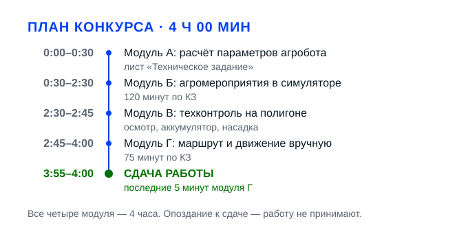
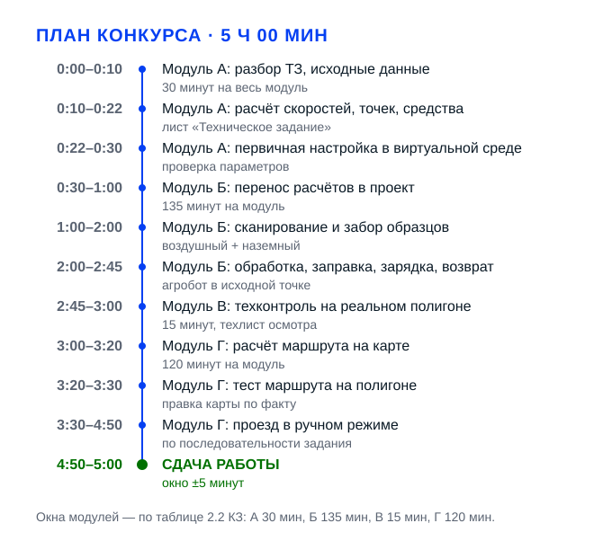
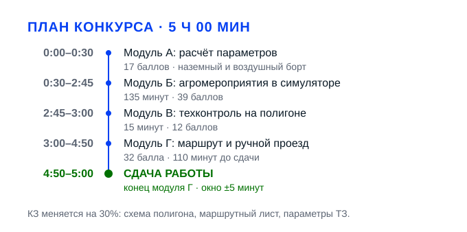

Агроботы (Агророботы) (Р)
Задания ниже — официальные файлы «Абилимпикс» (источник: abilympics-russia.ru), разложенные по категориям. Решения написаны по тексту задания, регламенту и критериям оценки; в них указано, что именно проверяет эксперт.
Школьник
14–16 лет, базовый уровень заданияВыдержка из официального конкурсного задания: страницы, относящиеся к категории «Школьник» (стр. 7–11 источника).
Пошаговое решение
Задание для школьников — четыре модуля на 4 часа: расчёт параметров наземного агробота (30 минут), агротехнические мероприятия в среде виртуального программирования (120 минут), технический контроль на полигоне (15 минут) и маршрутное задание (75 минут). В этой категории работает только наземный робот, воздушного агробота нет, поэтому весь мониторинг, забор проб, обработка посевов и доставка грузов ложатся на одну машину. Логика проста: числа из модуля А становятся настройками в модуле Б, а в модуле Г тот же расчёт превращается в маршрут. Ошибка в расчёте не исчезает — она всплывает через час, когда исправлять её уже поздно. Первые полчаса лучше потратить на бумагу: схема поля в масштабе, скорости, объём раствора, число заправок и подзарядок. Цифры — из типового листа «Техническое задание»: подставляйте свои, порядок работы не меняется.

Задача 1. Рассчитать параметры наземного агроботаМодуль А · 30 минут
Модуль А — это чистая арифметика на бумаге, но именно из неё вырастает всё остальное: скорость сканирования, число и координаты точек забора, скорость обработки, объём раствора и количество заправок с подзарядками. Тридцать минут уходят не на счёт, а на аккуратный разбор задания и одну проверку на коротком проходе в симуляторе. Ошибка здесь не всплывёт сразу — она всплывёт через сорок минут работы в модуле Б, когда переделывать будет поздно.
Действие 1.1. Разобрать техническое задание и начертить схему поля
Шаг 1.1.1
Берём бланк «Техническое задание» и читаем его дважды: первый раз целиком, чтобы понять общую картину, второй — с карандашом в руке, выписывая каждую цифру в черновую таблицу. В таблицу идут размеры поля, число и размер пробных площадок, шаг между рядами, ёмкость бака, норма расхода на площадку, напряжение и ёмкость аккумулятора, время каждого модуля. Рядом с каждой цифрой сразу пишем единицу измерения — метры, литры, ампер-часы, минуты, — и дальше работаем только с этими значениями, не пересчитывая по памяти.
Модуль А занимает 30 минут, и две трети этого времени уходит не на арифметику, а на поиск нужных чисел по тексту задания. Тот, кто выписал исходные данные один раз и в одном месте, считает спокойно и проверяет себя; тот, кто держит цифры в голове, к третьему расчёту путает литры с миллилитрами. Ошибка в исходных данных потом не ловится ничем: симулятор в модуле Б просто не даст выполнить обработку с неверной нормой, и время уйдёт на переделку.
В таблице не меньше восьми строк, у каждой стоит единица измерения, и ни одна цифра не осталась только в тексте задания. Проверьте себя просто: закройте бланк и назовите вслух ёмкость бака и норму расхода на площадку — если не вспомнили, значит, не выписали.
Частая ошибка — читать задание по диагонали и брать похожую цифру из чужого блока: в КЗ у школьников, студентов и специалистов разные часы и разное число точек, и утащить чужое значение проще, чем кажется. Вторая — записывать числа без единиц: «0,25» потом означает и литры, и миллилитры, и расчёт расхода разваливается на ровном месте.
Эксперт подходит к столу в первые минуты модуля А и смотрит, как участник работает с бланком: есть ли черновик, выписаны ли данные, сверяется ли он с заданием по ходу или пишет по памяти.
Шаг 1.1.2
Чертим план поля на миллиметровке в масштабе 1:100: 24 метра по длине ложатся в 24 сантиметра, 16 метров по ширине — в 16. Наносим ряды посевов, восемь пробных площадок 2 × 2 метра, два инженерных сооружения — теплицу 2 × 3 метра и отдельно стоящую опору диаметром 0,4 метра — и отмечаем стартовую точку в юго-западном углу. Каждой площадке присваиваем номер и подписываем его прямо на схеме, чтобы в симуляторе и на полигоне речь шла об одной и той же «площадке 3», а не о «той, что справа».
Схема — единственный общий язык между модулями А, Б и Г: в модуле Б вы программируете точки по этой карте, в модуле Г прокладываете по ней маршрут и защищаете его перед экспертом. КЗ отдельно требует построения маршрута движения агробота по заданным критериям, а критерии эти заданы геометрией поля — где ряды, где сооружения, где старт. Без масштаба нельзя ни посчитать длину пути, ни проверить, влезает ли машина в междурядье.
На схеме видны все восемь площадок с номерами, оба сооружения и старт, масштабная линейка подписана. Измерьте линейкой расстояние между центрами двух соседних площадок и умножьте на 100 — должно получиться то же число, что стоит в листе ТЗ, с точностью до 10 сантиметров.
Обычно схему рисуют на глаз, без масштаба: тогда длина маршрута, посчитанная по ней, расходится с реальной на 20–30 процентов, и в модуле Г агробот не укладывается в контрольное время. Вторая ошибка — не отметить сооружения: маршрут проходит сквозь теплицу, и на полигоне это уже столкновение, а не помарка в чертеже.
Эксперт смотрит схему при защите расчёта: есть ли масштаб, подписаны ли точки, совпадает ли число площадок с заданием. Ему важно, чтобы номера на схеме совпадали с номерами проб в журнале.
Шаг 1.1.3
Считаем длину пути сканирования по формуле: число проходов умножить на длину гона плюс длина поворотов. При ширине захвата камеры 1,6 метра поле шириной 16 метров требует ровно десяти проходов, каждый по 24 метра, и девять поворотов примерно по 2,5 метра. Получается 240 плюс 22,5 — округляем до 265 метров и добавляем пять процентов запаса на неточность вождения, выходит около 280 метров.
Длина пути — основа всех дальнейших расчётов: от неё зависят время сканирования, расход заряда и число подзарядок, которые КЗ прямо требует посчитать. Занизите путь — батарея сядет в середине поля, а это не просто потеря времени: в симуляторе это проваленное задание модуля Б, где агробот обязан пройти все точки и вернуться на старт.
Пересчитайте проходы другим способом: 16 метров ширины делятся на захват 1,6 метра без остатка, значит, проходов десять, а не девять и не одиннадцать. Сумма «240 плюс 22,5» должна сходиться на калькуляторе; если получилось 480 — вы удвоили длину гона, посчитав её за оба направления.
Типичная ошибка — считать путь как площадь, делённую на ширину захвата, и забыть повороты: на десяти проходах это минус 20–25 метров, а вместе с ними минус несколько минут и несколько процентов заряда. Вторая — вести гон по диагонали поля «чтобы короче»: камера идёт под углом к рядкам, часть кадров смазана, и мониторинг засчитывают частично.
Эксперт сверяет в листе ТЗ число проходов и итоговую длину пути с геометрией поля: несоответствие видно сразу, если перемножить числа в уме. Если длина пути не сходится, он просит пересчитать при нём.
Действие 1.2. Рассчитать скорость сканирования и точки забора образцов
Шаг 1.2.1
Скорость сканирования выбираем из двух ограничений и берём меньшее. Первое — качество кадра: при кадре шириной 0,5 метра, частоте 10 кадров в секунду и перекрытии 30 процентов камера терпит до 3,5 метра в секунду, запас огромный. Второе — время модуля: 280 метров при 0,4 метра в секунду проходятся за 700 секунд, то есть за 11,5 минуты. Ставим 0,4 метра в секунду и записываем рядом оба ограничения, чтобы было видно, откуда взялось число.
В КЗ скорость перемещения при сканировании — отдельный пункт расчёта, и проверяют её не на глаз, а по результату: поедете быстрее — камера даст смазанные кадры и мониторинг считается невыполненным, поедете медленнее — не хватит времени на обработку в тех же 120 минутах модуля Б. Компромисс здесь считается, а не угадывается, и оба ограничения нужно уметь назвать вслух.
Убедитесь, что в листе записаны обе цифры: предельная скорость по качеству кадра и скорость по бюджету времени. Выбранная должна быть меньше первой и давать время сканирования в пределах 15 минут — проверьте делением 280 на 0,4, получится 700 секунд.
Ошибка новичка — поставить максимальную скорость «чтобы быстрее проехать»: на 1,5 метра в секунду кадры идут с размытием, и вместо растений оператор видит полосы. Обратная ошибка — 0,1 метра в секунду «для надёжности»: сканирование растянется на 45 минут и съест половину модуля Б, а обработку и доставку грузов придётся делать в спешке.
Эксперт проверяет, обоснована ли скорость: в листе должны стоять оба ограничения, а не одно число без объяснения. Отдельно спрашивает, что произойдёт с кадром при метре в секунду.
Шаг 1.2.2
Точки забора привязываем к площадкам: на каждую площадку 2 × 2 метра — одна проба, отступив от края не меньше 0,3 метра, то есть по центру. Восемь площадок дают восемь точек; порядок обхода строим змейкой — сначала все четыре площадки первого ряда слева направо, затем переезд и второй ряд справа налево, чтобы не возвращаться через уже пройденное. Точки нумеруем в порядке обхода и переносим номера на схему из предыдущего действия.
КЗ требует определить количество и расположение точек сканирования и забора почвенных образцов, и это тот параметр, по которому потом оценивают модуль Б: правильно ли выполнен забор образцов. Проба с края площадки даёт другие показатели — там иная влажность и больше сорняка, поэтому отступ в 0,3 метра не формальность, а условие сопоставимости образцов между площадками.
На схеме восемь точек, каждая внутри своей площадки и не ближе 0,3 метра к её краю. Пройдите змейкой по номерам: линия не должна пересекать саму себя и не должна дважды проходить одно и то же междурядье — иначе на обратном ходе агробот потопчет всходы.
Самая частая ошибка — ставить точки по углам площадок «чтобы видеть границы»: получаются краевые пробы, и результаты по площадкам несравнимы. Вторая — обходить площадки строго по номерам, прыгая через поле: путь удлиняется почти вдвое, а лишний расход заряда съедает ещё одну подзарядку, которой в плане не было.
Эксперт смотрит на схему точек и на порядок обхода: точки должны стоять внутри площадок, а маршрут — не петлять. Обход строго по номерам, а не по геометрии поля, он считает ошибкой планирования.
Шаг 1.2.3
Складываем время сканирования и время стоянок: 700 секунд движения плюс восемь остановок по 25 секунд на забор, когда бур опускается, держится две-три секунды, поднимается и проба ссыпается в подписанную ёмкость. Получается 900 секунд, ровно 15 минут на весь мониторинг. Записываем это число отдельной строкой: оно понадобится, когда будем считать, хватает ли одного заряда батареи на весь модуль Б.
Время стоянок почти всегда забывают, а на восьми точках это три с половиной минуты — заметная доля от пятнадцати. КЗ требует, чтобы агробот верно определял и выполнял параметры сканирования во всех точках, то есть время на каждую точку заложено в задание изначально. Посчитанное заранее, оно не превращается в спешку в конце модуля.
Проверьте арифметику в столбик: 700 секунд движения плюс восемь раз по 25 секунд — это 900 секунд, ровно 15 минут. Если получилось 12 минут, вы не учли стоянки; если 18 — посчитали повороты дважды, отдельно и внутри общей длины пути.
Ошибка — считать только движение, а забор образцов сделать по ходу: в симуляторе бур срабатывает по команде, и без остановки проба не берётся вовсе, точка остаётся необработанной. Вторая — закладывать по пять секунд на точку: механизм физически не успевает опуститься, и половина проб теряется.
В листе эксперт ищет отдельную строку времени мониторинга: по ней видно, считал участник стоянки или взял только время движения. Отдельно проверяет, сходится ли время с бюджетом 120 минут модуля Б.
Действие 1.3. Рассчитать скорость обработки и расход препарата
Шаг 1.3.1
Скорость обработки считаем от нормы расхода: на площадку 2 × 2 метра по заданию идёт 0,25 литра рабочего раствора, ширина факела одной форсунки — 0,6 метра. При такой ширине площадку проходят тремя полосами по два метра, а скорость подбираем так, чтобы за проход уходило около 80 миллилитров: получается 0,15 метра в секунду. Это почти втрое медленнее сканирования, и так и должно быть — обработка всегда точнее и медленнее съёмки.
Норма расхода — не пожелание, а агротехническое требование: при превышении раствор стекает с листа и уходит в почву, при недостатке покрытие неполное и обработка не засчитывается. В КЗ это звучит как «правильно определены параметры обработки посевов», то есть скорость оценивают вместе с нормой, а не отдельно, и обоснование должно быть в листе.
Сверьте единицы: 0,25 литра на четыре квадратных метра — это 0,0625 литра на квадратный метр, или 62,5 миллилитра. Умножьте на площадь прохода 2 × 0,6 метра и получите 75 миллилитров на полосу — цифра сходится с расчётом по времени, значит, скорость выбрана верно.
Частая ошибка — взять скорость обработки равной скорости сканирования: факел не успевает дать норму, покрытие выходит вдвое меньше, и в симуляторе часть площадок остаётся необработанной. Вторая — считать норму на всё поле вместо площадки: расход вырастает в десять раз, и бак опустошается на первой же точке.
Эксперт сверяет скорость обработки с нормой расхода: если в листе стоит одно число без нормы, обоснование считается неполным. Он просит назвать норму вслух: 0,25 литра на площадку два на два метра.
Шаг 1.3.2
Считаем общий объём: восемь площадок по 0,25 литра дают два литра рабочего раствора, добавляем десять процентов запаса на потери в шлангах и на смачивание — 2,2 литра. Отдельной строкой записываем концентрацию: при маточном растворе 2 процента препарата нужно 44 миллилитра, остальное вода. Обе цифры вносим в лист, потому что заправляют бак именно по ним, а не по числу площадок.
КЗ требует подсчёта количества средства для обработки нужного количества посевов, и это единственный расчёт, где ошибка видна сразу и необратимо: перелитый препарат — фитотоксикоз и потеря качества обработки, недолитый — сухие площадки. Десять процентов запаса не «на всякий случай», а компенсация того, что часть раствора остаётся в магистрали и на фильтре.
Проверьте пропорцию: 2,2 литра при концентрации 2 процента — это 44 миллилитра препарата и 2156 миллилитров воды. Сумма объёмов должна давать ровно 2,2 литра; если не сходится, концентрация посчитана от объёма воды, а не от общего объёма раствора.
Типичная ошибка — считать два процента от воды и лить препарат в 2,2 литра воды: фактическая концентрация падает, обработка выходит слабее нужной, и поражённые площадки остаются поражёнными. Вторая — забыть про запас: раствор заканчивается на седьмой площадке, восьмая остаётся сухой.
В листе эксперт смотрит две строки — объём раствора и количество препарата: они должны быть согласованы между собой. Пересчитывает концентрацию в уме и сверяет с вашей строкой.
Шаг 1.3.3
Считаем время обработки: на площадку уходит три полосы по два метра, то есть шесть метров прохода, восемь площадок дают 48 метров, плюс переезды между ними около 70 метров. Итого 118 метров при 0,15 метра в секунду — примерно 13 минут. Площадки обрабатываем от дальнего края к ближнему, чтобы не ходить по только что обработанному и не сносить факел собственным движением.
Порядок «от дальнего края к ближнему» экономит и время, и раствор: агробот не разворачивается на обработанной полосе и не тащит колёсами мокрую землю. В КЗ отдельно сказано, что движения агробота не наносят урон посевам, а проезд по обработанной площадке — это именно урон, который эксперт видит по следам на поверхности.
Пересчитайте путь: восемь площадок по шесть метров дают 48, переезды примерно 70, всего 118 метров. Разделите на 0,15 — получится 787 секунд, около 13 минут. Если вышло шесть минут, вы посчитали одну полосу вместо трёх.
Ошибка — обрабатывать площадки в порядке номеров, крест-накрест через поле: путь вырастает, а на разворотах факел попадает на соседнюю, ещё не обработанную полосу. Вторая — начинать с ближней площадки и топтаться по ней, переезжая к следующей, оставляя следы на свежем покрытии.
Эксперт смотрит порядок обработки в симуляторе: обход должен идти от дальних площадок к ближним, без возвратов. Если порядок обработки в листе не описан, расчёт времени считается неполным.
Действие 1.4. Посчитать заправки и подзарядки, заполнить лист ТЗ
Шаг 1.4.1
Делим нужный объём на ёмкость бака: 2,2 литра на бак 1,5 литра даёт 1,47, округляем вверх до двух заправок. Первая — на старте, полный бак; вторая — после четвёртой площадки, когда в баке остаётся около 0,5 литра. Точку заправки ставим рядом со стартом, чтобы не гонять агробота через поле с пустым баком, и записываем её координаты в лист вместе с номером площадки, после которой она выполняется.
КЗ прямо требует посчитать количество дозаправок и подзарядок агробота для выполнения задания, и округление здесь всегда вверх: дробных заправок не бывает. Если записать «1,5 заправки», в модуле Б агробот встанет на пятой площадке с пустым баком, а сухая форсунка в симуляторе не даёт расхода вообще — площадка считается необработанной.
Проверьте: после полной заправки 1,5 литра хватает на шесть площадок по 0,25, значит, на седьмой бак пуст — заправка должна стоять не позже, чем после четвёртой. Если в листе заправка одна, расчёт неверный: 2,2 литра в бак на 1,5 не влезают.
Частая ошибка — не закладывать заправку вовсе, считая, что на восемь площадок хватит: два литра в бак на полтора не входят, и агробот встаёт на середине. Вторая — планировать заправку в дальнем углу поля: туда агробот едет порожним, теряет время и заряд, а лишние переезды видны в отчёте.
Эксперт сверяет число заправок с объёмом раствора и ёмкостью бака — это проверяется в уме за десять секунд. Вторая заправка должна стоять не позже четвёртой площадки.
Шаг 1.4.2
Складываем всё время движения: сканирование 11,5 минуты, забор со стоянками 3,5, обработка 13, доставка грузов около 12 и переезды 6 — получается примерно 46 минут. Паспортный ресурс батареи 40 минут, значит, нужна одна подзарядка; ставим её после обработки, перед доставкой грузов, и отводим 20 минут на зарядку у станции. В лист пишем обе цифры: время движения и число подзарядок.
Батарея — единственный ресурс, который нельзя долить в поле, и именно на нём чаще всего срывается модуль Б: агробот встаёт между точками, и часть задания остаётся невыполненной. Планируя зарядку заранее, вы ставите её в паузу между операциями, а не посреди обработки. КЗ оценивает своевременность и правильность зарядки отдельным пунктом.
Проверьте сумму: 11,5 плюс 3,5 плюс 13 плюс 12 плюс 6 равно 46 минутам при ресурсе 40. Разница в шесть минут и есть необходимость одной зарядки. Если у вас вышло 39 минут и ноль зарядок, вы потеряли доставку грузов, которая в КЗ идёт отдельным пунктом.
Ошибка — считать ресурс батареи по паспорту без поправки на подъёмы и работу насоса: реальные 40 минут превращаются в 33, и агробот встаёт на полпути. Вторая — ставить зарядку в середину обработки: недолитые площадки придётся проходить заново, а раствор уже израсходован.
Эксперт смотрит, где в плане стоит зарядка: правильное место — пауза между операциями, а не разрыв внутри одной. Запас меньше пяти минут он считает рискованным планированием.
Шаг 1.4.3
Переносим все посчитанные значения в чистовой лист «Техническое задание»: скорость сканирования, число и координаты точек, скорость обработки, объём раствора, число заправок и подзарядок. В среде виртуального программирования открываем проект, вводим эти числа в поля параметров и запускаем пробный проход по короткому участку — два метра. Если агробот едет с заданной скоростью и бур срабатывает в точке, данные перенесены верно.
Первичная настройка в среде виртуального программирования — последний пункт модуля А и мостик к модулю Б: КЗ требует выполнить все предварительные работы для написания программного кода. Проверка на двух метрах занимает минуту, но ловит опечатку, которая иначе всплывёт через сорок минут работы в симуляторе, когда исправлять её будет дорого.
Все поля в листе заполнены, ни одно не осталось с прочерком, в проекте стоят те же числа, что в листе. Пробный проход: два метра при 0,4 метра в секунду агробот проходит за пять секунд, и таймер симулятора это показывает.
Самая обидная ошибка — перенести число с ошибкой в разряде: 0,04 вместо 0,4 метра в секунду, и агробот ползёт, не успевая ничего. Вторая — оставить поле пустым, надеясь настроить по ходу: среда подставит значение по умолчанию, и весь расчёт модуля А перестанет что-либо значить.
Эксперт подходит к концу модуля А и сверяет лист с экраном: числа должны совпадать, а пробный запуск — быть выполненным. Если числа не совпали, он даёт минуту на исправление и фиксирует это.
Задача 2. Провести агромероприятия в среде виртуального программированияМодуль Б · 120 минут
Самый длинный модуль: два часа на то, чтобы превратить расчёт из листа ТЗ в поведение агробота в симуляторе — сканирование восьми площадок, забор проб, обработку, доставку грузов, зарядку, заправку и возврат на старт. Оценивают не красоту программы, а совпадение результата с параметрами модуля А: где остановился, сколько вылил, с какой скоростью прошёл. Каждая неверная цифра здесь видна как пропущенная точка или сухая полоса.
Действие 2.1. Перенести параметры в среду виртуального программирования
Шаг 2.1.1
Открываем проект и первым делом заполняем паспорт машины: габариты 0,45 на 0,38 метра, колея 0,32, диаметр колеса 0,065 метра, максимальная скорость 0,8 метра в секунду. Дальше задаём поле: 24 на 16 метров, старт в юго-западном углу, координаты восьми площадок и двух сооружений. Единицы проверяем сразу — среда работает в метрах и метрах в секунду, и сантиметры, введённые по привычке, уменьшают поле в сто раз.
Без паспорта машины симулятор считает повороты и разгоны по умолчанию, и агробот останавливается не там, где вы рассчитывали: на восьми точках промах в 10 сантиметров накапливается в полметра. КЗ требует настройки параметров наземного устройства согласно листу ТЗ, и первым делом настраивают именно геометрию, потому что всё остальное считается от неё.
Проверьте карту в режиме просмотра сверху: поле, восемь площадок и два сооружения должны стоять на своих местах, старт — в юго-западном углу. Введите вручную координаты третьей площадки и сравните с чертежом на миллиметровке — расхождение не должно превышать 5 сантиметров.
Ошибка — ввести габариты «примерно» и не заполнить колею: тогда поворот на 90 градусов получается с радиусом, которого у машины нет, и агробот срезает угол через площадку. Вторая — перепутать единицы и записать ширину поля как 1600 вместо 16.
Эксперт открывает карту в симуляторе и сверяет её с листом ТЗ: сколько площадок, где сооружения, где старт. Расхождение он видит до запуска программы.
Шаг 2.1.2
Собираем программу из блоков: внешний цикл по восьми точкам, внутри — движение к точке, остановка, команда буру, пауза две-три секунды, подъём, следующий шаг. Повороты ставим по расчётным углам, а не «на глаз»: из точки 4 в точку 5 агробот идёт не по диагонали, а по междурядью, потому что диагональ пересекает всходы. Каждый блок подписываем номером точки, чтобы при отладке сразу видеть, где именно сбой.
КЗ оценивает корректность движений и то, что агробот не наносит урон посевам: программа из блоков читается экспертом как чертёж, и лишний поворот в ней виден без запуска. Подписанные блоки экономят время отладки — а его в модуле Б всего два часа на всё: сканирование, обработку, доставку и возврат.
Пройдите программу по шагам без запуска: восемь циклов, в каждом движение, остановка, забор. Число блоков движения должно совпадать с числом отрезков на схеме — если блоков больше, значит, где-то остался черновой фрагмент.
Типичная ошибка — копировать блок движения и забыть поменять координату: агробот дважды едет в одну точку, а следующая остаётся без пробы. Вторая — ставить поворот по диагонали «чтобы короче»: путь короче, но всходы на срезе измяты, и это прямое нарушение критерия.
Эксперт при защите читает программу и просит показать блок, отвечающий за третью точку: по нему видно, понимает ли участник, что делает программа. Он же смотрит, подписаны ли блоки номерами точек.
Шаг 2.1.3
Запускаем программу не на всём поле, а на первых двух точках, и смотрим лог: время движения между точками, срабатывание бура, фактическую скорость. Если агробот проходит два метра за пять секунд — скорость 0,4 метра в секунду, как в расчёте; если за двенадцать — где-то осталась настройка по умолчанию. Лог сохраняем: он понадобится при защите, чтобы показать соответствие расчёту.
Пробный запуск на двух точках стоит две минуты, а полный — двадцать, и разница огромна, когда время модуля расписано. КЗ требует, чтобы агробот верно определял и выполнял параметры во всех точках, а «верно» начинается с того, что машина вообще едет с заданной скоростью, а не с той, что осталась от прошлого запуска.
В логе видно: скорость совпадает с расчётом, бур срабатывает в обеих точках, пауза между командой и опусканием не больше секунды. Сверьте время прохода с секундомером на экране — расхождение больше 10 процентов означает, что параметр не применился.
Ошибка — сразу запускать полный цикл и смотреть, «доедет или нет»: при сбое непонятно, в какой из восьми точек он случился. Вторая — не сохранять лог: защита превращается в пересказ, а эксперт просит показать цифры.
Эксперт подходит во время пробного запуска и смотрит, сверяет ли участник лог с листом ТЗ или просто ждёт, когда машина доедет. Лог он просит показать на экране, а не пересказать.
Действие 2.2. Сканировать площадки и забрать почвенные образцы
Шаг 2.2.1
Перед сканированием поднимаем камеру на высоту 0,4 метра от поверхности — так в кадр попадает полоса шириной около 0,5 метра, и соседние проходы перекрываются. Включаем камеру и смотрим первый кадр: растения должны быть в фокусе, горизонт не завален, экспозиция не выбивает зелень в белое. Если кадр тёмный или пересвеченный, правим экспозицию до запуска, а не после.
Качество мониторинга оценивают по результату: если кадры нечитаемые, считается, что сканирование не выполнено, сколько бы точек агробот ни объехал. Высота 0,4 метра — компромисс между шириной кадра и разрешением: ниже кадр уже, выше — мельче детали, и больные листья сливаются с фоном.
Откройте кадр на весь экран: видны отдельные листья, нет смаза и засветки, полоса захвата совпадает с расчётными 0,5 метра. Проверьте по линейке в симуляторе — ширина кадра отмечена на сетке. Ширина кадра на сетке симулятора — ровно 0,5 метра.
Ошибка — оставить камеру на высоте по умолчанию, 0,2 метра: кадр узкий, проходов нужно вдвое больше, и расчёт длины пути рассыпается. Вторая — не проверить кадр до старта и обнаружить засветку на четвёртом проходе, когда перезапускать уже дорого.
Эксперт смотрит первый кадр вместе с участником: читается ли он, видна ли разница между здоровым и угнетённым растением. Отдельно смотрит, не завален ли горизонт и нет ли блика от солнца.
Шаг 2.2.2
Проходим поле десятью проходами с постоянной скоростью 0,4 метра в секунду, начиная с юго-западного угла и двигаясь «змейкой»: чётные проходы слева направо, нечётные справа налево. На поворотах сбрасываем до 0,2 и снова выходим на рабочую скорость после выпрямления, иначе первые полметра каждого прохода идут смазанными. Скорость держим ровной — рывки дают пропуски в перекрытии кадров.
Ровная скорость — условие сопоставимости кадров: при разгоне и торможении меняется экспозиция, и один и тот же участок поля на разных проходах выглядит по-разному, а мониторинг сравнивает именно участки между собой. КЗ требует, чтобы агробот проходил сканирование в соответствии с параметрами, и скорость — первый из них.
После прохода проверьте лог: десять строк, в каждой скорость близка к 0,4, отклонение не больше 10 процентов. Если в логе 9 или 11 проходов — сбились на повороте, и полоса поля осталась неснятой. Считайте строки прямо в логе, а не по карте покрытия.
Частая ошибка — гнать на максимальных 0,8 метра в секунду, чтобы сэкономить время: кадры идут с размытием, и обработка по таким данным считается неверной. Вторая — поворачивать на полной скорости и срезать угол через площадку с пробами.
Эксперт смотрит запись прохода: линии ровные, скорость постоянная, развороты за пределами площадок. Смазанные кадры на разворотах он тоже относит к нарушению параметров.
Шаг 2.2.3
В каждой из восьми точек останавливаемся, опускаем бур на 3–4 сантиметра, даём ему две секунды на заглубление, включаем вращение на один оборот, поднимаем и ссыпаем пробу в ёмкость с номером точки. Номер пишем на крышке маркером сразу, а не «потом вспомним»: пробы без номера равны потерянным. После подъёма бура отъезжаем на полметра, чтобы не задеть лункой соседнюю точку.
Забор образцов — отдельный пункт оценки модуля Б, и проверяют его по числу проб и по их привязке к точкам. Две секунды на заглубление нужны потому, что на ходу бур входит в почву под углом и проба получается неполной, а полметра отъезда — потому что повторный заезд в лунку ломает механизм.
В журнале восемь записей: номер точки, время, глубина, номер ёмкости. Ёмкости стоят в порядке номеров, ни одна не пустая. Сверьте число проб с числом точек на схеме — их должно быть ровно восемь. Восемь записей — это ровно по числу площадок на схеме поля.
Ошибка — брать пробы на ходу, не останавливаясь: в симуляторе бур срабатывает только при нулевой скорости, и точка остаётся без образца. Вторая — ссыпать все пробы в одну банку: привязка к площадкам теряется, и результаты мониторинга обнуляются.
Эксперт проверяет журнал проб и то, подписаны ли ёмкости: безымянная проба для него не существует. Отдельно спрашивает, чем подписаны ёмкости и где они стоят.
Шаг 2.2.4
После восьмой точки останавливаемся и сверяем результат с планом: восемь площадок просканированы, восемь проб взяты, ни одна точка не пропущена. Смотрим карту покрытия в симуляторе — она показывает, какие участки сняты, а какие остались белыми. Белые пятна на площадках означают, что проход прошёл мимо, и их нужно закрыть повторным проходом, пока не началась обработка.
Карта покрытия — единственный объективный способ проверить мониторинг до того, как его оценит эксперт. Пропущенная площадка обнаруживается здесь за минуту, а на защите стоит части модуля: КЗ требует, чтобы агробот верно выполнял параметры сканирования во всех точках, и «во всех» — ключевое слово.
Карта покрытия без белых пятен внутри восьми площадок, журнал проб заполнен полностью, время мониторинга близко к расчётным 15 минутам. Если время больше 20 минут — ищите лишние развороты в программе.
Ошибка — не смотреть карту покрытия и узнать о пропуске при защите. Вторая — закрывать пропуск, начиная сканирование заново с первой точки: теряется пять минут и заряд, хотя достаточно пройти один участок.
Эксперт открывает карту покрытия и журнал: совпадение числа площадок с заданием он проверяет первым делом. Белые пятна на карте для него равны пропущенным точкам.
Действие 2.3. Обработать посевы и доставить грузы
Шаг 2.3.1
Меняем насадку на распылительную: в симуляторе это отдельный блок навесного оборудования, и его нужно выбрать в паспорте машины, иначе насос работает вхолостую. Калибруем расход: при ширине факела 0,6 метра и скорости 0,15 метра в секунду за проход должно уходить около 80 миллилитров. Проверяем на одном проходе в два метра — счётчик в симуляторе показывает израсходованный объём.
Настройка параметров устройства — прямое требование модуля Б, и начинается она с насадки: с неправильной насадкой расчёт нормы расхода не имеет смысла, факел шире или уже, и покрытие выходит неравномерным. Калибровка на коротком проходе ловит ошибку до того, как будет израсходован весь бак.
Счётчик показывает около 80 миллилитров на двухметровый проход, факел симметричный, капли не собираются в струю. Если расход 40 или 160 миллилитров — вдвое ошиблись в скорости или в ширине захвата. Пересчитайте расход на один метр прохода: 40 миллилитров.
Ошибка — начать обработку без калибровки: на первой площадке уходит половина бака, и заправка, рассчитанная на восемь площадок, заканчивается на третьей. Вторая — поставить насадку с широким факелом «чтобы быстрее»: раствор ложится на междурядья, а не на растения.
Эксперт смотрит калибровочный проход: счётчик расхода и форму факела он проверяет до начала обработки. Он смотрит и на форму факела: струя вместо конуса — ошибка насадки.
Шаг 2.3.2
Обрабатываем площадки от дальней к ближней, каждую тремя полосами по два метра, с перекрытием факела 10–15 процентов на стыках, чтобы не осталось необработанной полосы между проходами. Скорость держим 0,15 метра в секунду, на разворотах выключаем насос — иначе раствор льётся на междурядье. Между площадками едем с выключенным насосом и включаем его за полметра до границы.
Перекрытие в 10–15 процентов — это компенсация того, что факел по краям слабее, чем в центре: без него на стыке остаётся полоса с половинной дозой, и именно там развивается то, что обработка должна была остановить. КЗ требует обработки площадок в соответствии с параметрами, и равномерность покрытия входит в параметры.
На карте обработки все восемь площадок закрашены, стыки без светлых полос. Сверьте израсходованный объём: около 2 литров на восемь площадок, расхождение больше 10 процентов означает ошибку в норме или в перекрытии.
Ошибка — обрабатывать без перекрытия, «полоса к полосе»: на стыках остаются полоски с половинной дозой, и эксперт видит их на карте. Вторая — не выключать насос на разворотах: раствор уходит в междурядье, а на площадке его не хватает.
Эксперт смотрит карту обработки: равномерность и отсутствие пропусков на стыках для него важнее скорости. Светлые полосы на стыках он считает недоливом, а не мелочью.
Шаг 2.3.3
Грузы укладываем в отсек до начала движения и фиксируем: в симуляторе груз сдвигается при резком повороте, и если он не закреплён, на развороте он выпадает за пределы платформы. Везём на скорости не выше 0,3 метра в секунду, потому что с грузом центр масс выше и на повороте машину кренит. Доставляем в две точки по заданию и выгружаем, останавливаясь полностью.
Доставка грузов — отдельный пункт модуля Б, и она проверяет сразу две вещи: доехал ли агробот до нужной точки и не потерял ли груз по дороге. Потерянный груз не засчитывается даже при правильном маршруте, а крен на повороте — это ещё и риск опрокидывания, который в критериях идёт как некорректное движение.
Оба груза на месте, в журнале две отметки о выгрузке с координатами. Отсек после доставки пуст — если груз остался, значит, выгрузка не сработала, и точку надо пройти заново. Сверьте номера точек выгрузки с заданием — их ровно две.
Частая ошибка — ехать с грузом на полной скорости: на первом же повороте груз смещается и выпадает. Вторая — выгружать на ходу, не останавливаясь: в симуляторе команда выгрузки при ненулевой скорости игнорируется.
Эксперт проверяет журнал доставки и состояние отсека: груз должен быть выгружен в точке, а не потерян по пути. Отдельно спрашивает, с какой скоростью везли груз и почему именно с такой.
Шаг 2.3.4
Сверяем результат обработки с расчётом: восемь площадок, около двух литров раствора, время обработки близко к 13 минутам. Смотрим, не осталось ли следов сноса — капель на междурядье и на сооружениях: если факел уходил в сторону, значит, скорость на разворотах была высокой или насос не выключался. Все расхождения записываем в журнал до того, как начнётся зарядка.
Снос раствора — это и перерасход, и урон соседним культурам, а КЗ отдельно требует, чтобы движения не наносили урон посевам и сооружениям. Проверка «до зарядки» нужна потому, что после неё начинается другой этап, и вернуться к обработке будет уже не успеть: два часа модуля расписаны по минутам.
Израсходованный объём в пределах 2,0–2,2 литра, время обработки 12–15 минут, следов раствора на междурядье нет. Расхождение по объёму больше 15 процентов — пересчитайте норму, а не подгоняйте результат.
Ошибка — не проверять расход и обнаружить, что бак пуст на седьмой площадке. Вторая — списать снос на «особенности симулятора»: причина почти всегда в скорости на развороте и в невыключенном насосе. Третий случай — не записать расхождение и вспоминать его на защите.
Эксперт сверяет журнал с листом ТЗ: объём, время и число обработанных площадок должны сходиться с расчётом модуля А. Он сравнивает израсходованный объём с расчётными 2,2 литра.
Действие 2.4. Заправиться, зарядиться, объехать препятствия и вернуться
Шаг 2.4.1
Заправку выполняем по плану — после четвёртой площадки, а не тогда, когда бак опустеет: в симуляторе сухой бак останавливает насос, и обработка прерывается на середине площадки. Подъезжаем к точке заправки у старта, глушим насос, заливаем 1,5 литра, записываем в журнал номер площадки, после которой это сделано, и остаток в баке. После заправки проверяем, что насос снова качает и в магистрали нет воздуха.
Заправка «по факту» вместо заправки по плану — самая дорогая ошибка модуля: прерванная площадка требует повторного прохода, а раствор уже разлит. КЗ отдельно проверяет, что агробот производит своевременную и правильную заправку, и своевременность здесь означает «до того, как кончилось», а не «когда встал».
В журнале две записи о заправке: стартовая и после четвёртой площадки, остаток в баке перед второй заправкой около 0,5 литра. Если заправка одна — расчёт модуля А не перенесён, и это видно по объёму. Остаток в баке перед заправкой — не меньше 0,3 литра.
Ошибка — тянуть до пустого бака: агробот встаёт посреди площадки, и её приходится проходить заново, теряя минуты и раствор. Вторая — заправляться в дальнем углу, куда едешь порожним: лишние переезды съедают заряд.
Эксперт смотрит журнал заправок и место, где они сделаны: у старта, а не в поле. Он смотрит, не пришлось ли заправляться дважды подряд, и сколько раствора ушло впустую.
Шаг 2.4.2
Зарядку ставим между обработкой и доставкой грузов, когда в баке ещё есть раствор, а батарея уже ниже 35 процентов. Подъезжаем к станции, встаём так, чтобы контакт попал в разъём без перекоса, ждём 20 минут и проверяем индикатор: заряд должен подняться выше 80 процентов. Раньше снимать нельзя — недозаряженная батарея сядет на доставке грузов. Если индикатор не поднялся, проверяем контакт и повторяем зарядку.
Батарея — единственный ресурс, который нельзя пополнить в поле, и в КЗ своевременная и правильная зарядка идёт отдельным пунктом. Порог 35 процентов выбран не случайно: до станции нужно доехать, а на подъёме расход выше среднего, и остаток в 15 процентов может закончиться на полпути.
Индикатор после зарядки выше 80 процентов, контакт стоит ровно, в журнале записано время начала и конца зарядки. Если индикатор не изменился — контакт не вошёл, и это надо исправить до выезда. Проверьте, что станция обесточена после снятия машины.
Ошибка — заряжаться «до полного» и потерять сорок минут из двух часов. Вторая — снимать с зарядки на 50 процентах и надеяться доехать: на доставке грузов батарея садится, и агробот встаёт между точками.
Эксперт фиксирует время зарядки и уровень заряда до и после: обе цифры должны быть в журнале. Он смотрит на часы: зарядка дольше 25 минут — потеря темпа модуля.
Шаг 2.4.3
Препятствия объезжаем с зазором не меньше 0,3 метра: датчик расстояния срабатывает на 0,5 метра, агробот снижает скорость до 0,2 и уходит в сторону, а после объезда возвращается на линию маршрута. Теплицу обходим по дальней стороне, отдельно стоящую опору — по дуге радиусом около метра. В конце возвращаемся в исходную точку и останавливаемся в пределах 0,2 метра от метки.
КЗ требует, чтобы агробот объезжал препятствия и инженерные сооружения и возвращался в исходную точку — это два отдельных условия, и оба проверяются по карте. Зазор в 0,3 метра нужен потому, что датчик видит препятствие, но не учитывает габарит корпуса, и «впритык» на повороте превращается в столкновение.
На карте видно, что маршрут обходит оба сооружения, ни разу их не касаясь, а финальная точка совпадает со стартом с точностью до 0,2 метра. Проверьте по сетке: зазор до теплицы не меньше трёх клеток по 0,1 метра.
Ошибка — объезжать «по кратчайшей» и задевать угол теплицы: в симуляторе это столкновение, в критериях — некорректное движение. Вторая — возвращаться не в старт, а «куда доехал»: возврат в исходную точку прописан в КЗ отдельным требованием.
Эксперт смотрит финальное положение агробота на карте: возврат в старт он проверяет первым, ещё до просмотра журнала. Он же проверяет зазор до теплицы рулеткой, а не на глаз.
Задача 3. Провести технический контроль агробота на полигонеМодуль В · 15 минут
Пятнадцать минут на реальном полигоне, где агробот перестаёт быть моделью на экране. За это время нужно осмотреть машину, проверить заряд и техническое состояние систем, заполнить технический лист осмотра, установить нужную насадку и убедиться, что всё работает. Модуль короткий, но ошибка здесь стоит дороже всего: недожатый разъём или разряженная батарея отменяют весь следующий модуль на 75 минут, и восстановить время неоткуда.
Действие 3.1. Осмотреть агробота и заполнить технический лист
Шаг 3.1.1
Ставим агробота на ровную площадку, отключаем питание и обходим его кругом: корпус без трещин, кожух не болтается, колёса прокручиваются рукой без заеданий и люфта больше миллиметра. Проверяем крепёж колёс и стоек — четыре винта на каждом колесе должны быть затянуты, а не «наживлены». Отдельно смотрим нижнюю кромку корпуса: на ней не должно быть свежих царапин, они означают, что машина где-то цепляла грунт.
Осмотр до включения — единственный способ найти механическую неисправность, которая под питанием проявляется как «не едет» или «уводит в сторону». КЗ требует проверки технического состояния всех систем перед работой на полигоне, и начинается она с того, что видно глазами: трещина в кожухе на реальном полигоне превращается в заклинившее колесо через десять минут движения.
Колесо проворачивается от руки на полный оборот без хруста и заеданий, люфт не больше миллиметра, все винты затянуты. Покачайте корпус за верхнюю точку: он не должен ходить относительно рамы больше чем на два-три миллиметра.
Самая частая ошибка — пропустить осмотр и сразу включить питание: тогда заклинившее колесо проявляется на маршруте, когда переделывать нечего. Вторая — не проверить затяжку колёс: на первом же развороте винт выходит, колесо слетает, и модуль Г останавливается.
Эксперт наблюдает осмотр с самого начала: обошёл ли участник машину кругом, проверил ли колёса и крепёж, или сразу взялся за пульт. Смотрит и на руки: осмотр идёт с выключенным питанием.
Шаг 3.1.2
Проверяем электрику: разъёмы двигателей и датчиков сидят до щелчка, провода не пережаты кожухом и не касаются вращающихся частей. Смотрим на индикаторы платы при включении: питание горит ровно, без мигания; если индикатор мигает, плата сообщает об ошибке, и её код нужно найти в инструкции до выезда на поле. Датчик расстояния проверяем ладонью с 30 сантиметров — должен сработать и показать расстояние на экране.
Разъём, вставленный наполовину, работает до первой вибрации, а вибрация на полигоне постоянная. КЗ требует протестировать систему на работоспособность до начала задания, и тест датчиков занимает две минуты — это дешевле, чем искать причину остановки посреди маршрута, когда время модуля уже идёт.
Все разъёмы сидят до щелчка, провода не натянуты, индикатор питания горит ровно, датчик показывает 30 сантиметров при поднесённой ладони. Экран не выдаёт кодов ошибок, меню открывается без задержки. Коды ошибок запишите в лист, если они появились при включении.
Ошибка — проверить только питание и не смотреть датчики: агробот поедет, но на первом же препятствии не остановится, и это столкновение, а не мелкий сбой. Вторая — оставить провод под кожухом: через пять минут движения он перетирается, и связь с двигателем пропадает.
Эксперт смотрит, проверяет ли участник датчики руками и читает ли индикацию платы, а не только включает тумблер. Отдельно смотрит, читает ли участник инструкцию к плате.
Шаг 3.1.3
Заполняем технический лист осмотра по пунктам, не пропуская ни одного: дата и время, номер агробота, состояние корпуса, заряд аккумулятора, состояние разъёмов, показания датчиков, установленная насадка. Напротив каждого пункта ставим «норма» или короткое описание отклонения. Подпись и время ставятся в конце, после того как все пункты закрыты, — лист без подписи считается незаполненным.
Технический лист — это документ, по которому эксперт понимает, в каком состоянии машина вышла на полигон, и КЗ требует его заполнения прямым текстом. Если на маршруте что-то случится, лист покажет, было ли отклонение до старта: с заполненным листом разговор идёт о технике, без листа — о том, кто виноват.
Все пункты листа закрыты, ни одного прочерка, отклонения описаны словами, а не галочкой «ок». Время заполнения — не больше трёх минут: если уходит больше, вы переписываете лист вместо того, чтобы его заполнять.
Ошибка — заполнить лист задним числом, после модуля Г: тогда отклонения, найденные на маршруте, в него не попадут, и документ теряет смысл. Вторая — писать «всё норма» одной строкой: по такому листу невозможно понять, что именно проверялось.
Эксперт берёт лист в руки сразу после модуля В и сверяет его с фактическим состоянием машины: заряд, насадка, показания датчиков. Пустые графы он считает незаполненным листом целиком.
Действие 3.2. Проверить и установить аккумуляторы
Шаг 3.2.1
Измеряем напряжение мультиметром на клеммах: полностью заряженная батарея 12 В показывает 12,6–12,8 вольта, а 11,9 и ниже означает разряд, с которым на маршрут выходить нельзя. Дальше проверяем под нагрузкой: включаем двигатели на 10 секунд и смотрим, не проваливается ли напряжение ниже 11,5 вольта. Просадка на нагрузке — признак изношенной банки, даже если без нагрузки цифра красивая.
Батарея — то, что нельзя починить на полигоне, и КЗ отдельно требует установки и проверки аккумуляторов. Напряжение без нагрузки обманчиво: оно держится до последнего, а под нагрузкой проваливается, и агробот встаёт на середине маршрута. Проверка под нагрузкой занимает десять секунд и показывает реальное состояние.
Напряжение без нагрузки 12,6 вольта и выше, под нагрузкой не ниже 11,5. Если цифра ниже — берём запасной комплект, а этот помечаем и откладываем. Замер записываем в технический лист с точностью до десятых.
Ошибка — проверить только напряжение без нагрузки и решить, что батарея в порядке: на третьей минуте движения напряжение падает, и агробот останавливается. Вторая — мерить напряжение на подключённой батарее, когда параллельно работает зарядное устройство: показания завышены.
Эксперт смотрит на мультиметр и на запись в листе: обе цифры — без нагрузки и под нагрузкой — должны быть зафиксированы. Он ждёт, что участник сам назовёт порог разряда — 11,9 вольта.
Шаг 3.2.2
Ставим батарею в отсек клеммами к разъёму, соблюдая полярность: красный провод на плюс, чёрный на минус, перепутать нельзя — на разъёме есть ключ, но при сильном нажатии он ломается. Фиксируем батарею штатной стяжкой так, чтобы она не двигалась при наклоне корпуса на 30 градусов. Проверяем, что провод не касается колеса и не зажат крышкой. После установки ещё раз проверяем полярность по маркировке на разъёме.
Подвижная батарея — это смещённый центр масс и потеря контакта на кочке: агробот дёргается, а в худшем случае разъём выходит на ходу. КЗ требует, чтобы аккумуляторы были установлены и проверены, и «установлены» означает зафиксированы, а не просто положены в отсек.
Батарея не двигается при наклоне корпуса, разъём сидит до щелчка, провода не касаются движущихся частей. Возьмите машину и покачайте: внутри ничего не стучит и не бряцает. Дёрните разъём на себя: он должен сидеть, а не выходить.
Ошибка — не зафиксировать батарею: на первом развороте она смещается, и машину ведёт в сторону, а на кочке разъём выходит. Вторая — зажать провод крышкой: изоляция перетирается, и появляется короткое замыкание.
Эксперт проверяет фиксацию рукой: покачал корпус — внутри ничего не должно двигаться. Он покачивает корпус сам и слушает, не бряцает ли батарея внутри.
Шаг 3.2.3
Кладём рядом запасной комплект и держим его заряженным: на 75 минут модуля Г одного комплекта хватает не всегда, а замена занимает две минуты против двадцати на зарядку. Записываем в лист, что запасной комплект есть и заряжен, и отмечаем, при каком напряжении будем менять — обычно 11,4 вольта под нагрузкой. Меняем не в поле, а на ровной площадке у старта.
Замена батареи в поле — потеря времени и риск уронить машину на всходы, поэтому точку замены планируют заранее, как и заправку. КЗ оценивает выполнение маршрутного задания в отведённые 75 минут, и двадцать минут на зарядку в этот бюджет не влезают, а две минуты на замену — влезают.
В листе отмечен запасной комплект, его напряжение и порог замены. Запасной комплект лежит у старта, а не в сумке в другом конце зала; перед выходом проверьте, что он действительно заряжен, а не просто «должен быть».
Ошибка — приехать с одним комплектом и надеяться на запас хода: при активном ручном вождении расход выше расчётного почти вдвое. Вторая — менять батарею посреди поля, поставив машину на грядку: всходы примяты, и это отдельное нарушение.
Эксперт спрашивает, где запасной комплект и какой у него заряд: ответ «где-то в боксе» его не устраивает. Отдельно уточняет, заряжен ли запасной комплект сейчас.
Действие 3.3. Установить насадку и проверить работу систем
Шаг 3.3.1
Выбираем насадку под задачу модуля Г: для движения по маршруту с контрольными точками нужен маркер или датчик, а не распылитель — тяжёлая насадка поднимает центр масс и ухудшает управляемость на поворотах. Ставим её по инструкции: совмещаем шпонку с пазом, затягиваем барашковый винт от руки, без ключа, и проверяем, что насадка не качается. Разъём питания насадки подключаем последним.
КЗ требует установки необходимой насадки, и «необходимая» — это та, что соответствует заданию, а не та, что стоит с прошлого раза. Лишний вес на конце манипулятора на повороте даёт крен, а крен на полигоне — это задетое сооружение и потерянные баллы за корректность движения.
Насадка сидит плотно, не качается при покачивании рукой, винт затянут от руки, разъём питания на месте. Проверьте зазор до грунта: он должен быть не меньше 2 сантиметров, иначе на неровности насадка чиркнет по земле.
Ошибка — поставить насадку, не совместив шпонку, и затянуть винт силой: паз разбивается, и насадка начинает болтаться уже на маршруте. Вторая — оставить распылитель с водой: лишние полтора килограмма на конце меняют развесовку, и машину уводит на поворотах.
Эксперт проверяет насадку рукой и сверяет её тип с заданием: несоответствие видно сразу. Он называет задачу и ждёт, что участник сам объяснит выбор насадки.
Шаг 3.3.2
Проверяем работу систем по очереди: вперёд-назад на малой скорости, поворот влево и вправо, срабатывание датчика препятствия, кнопку аварийного останова. Аварийный останов проверяем обязательно и до выезда на поле: нажимаем и смотрим, что двигатели обесточились в течение секунды, а после отпускания машина не поехала сама. Тест занимает три минуты и делается на свободной площадке у старта.
КЗ требует проверки работоспособности, и проверять надо не «едет ли вообще», а каждую функцию отдельно: если аварийный останов не срабатывает, на полигоне вы не сможете остановить машину у препятствия, а это самое дорогое столкновение. Кнопка, которую никто не проверял, отказывает именно в нужный момент.
Все четыре функции отрабатывают: движение в обе стороны, поворот в обе стороны, датчик реагирует на ладонь с 30 сантиметров, аварийный останов глушит двигатели за секунду. После теста машина стоит на месте, а не ползёт.
Ошибка — проверить только движение вперёд и не тронуть аварийный останов: на маршруте кнопка не срабатывает, и агробот въезжает в сооружение. Вторая — тестировать на площадке с людьми рядом: при отказе электроники машина едет прямо в них.
Эксперт присутствует при тесте и часто сам нажимает аварийный останов: реакция машины оценивается в этот момент. Он смотрит на реакцию машины: остановка должна быть мгновенной.
Шаг 3.3.3
Перед выходом на полигон проверяем безопасность: зона движения свободна от людей, очки и перчатки надеты, волосы убраны, пульт в руках, а не на земле. Агробота переносим двумя руками за раму, а не за насадку или провод. На полигоне стоим сбоку от линии движения, а не перед машиной, и держим дистанцию не меньше метра. Пульт держим так, чтобы кнопка останова была под большим пальцем.
Травма на полигоне останавливает не только участника, но и всю площадку, и КЗ прямо требует выполнения работ по правилам техники безопасности — это отдельный критерий. Стойка сбоку и дистанция в метр нужны потому, что при отказе датчика машина едет по прямой, и человек на линии движения оказывается первым.
Зона свободна, очки и перчатки на месте, пульт в руках, участник стоит сбоку от линии движения. Проверьте, что кабель питания не лежит поперёк маршрута и никто не стоит за спиной на пути отхода. Убедитесь, что в зоне нет посторонних и волонтёров.
Ошибка — стоять перед машиной, «чтобы поймать»: при отказе она не остановится. Вторая — переносить агробота за насадку: крепление не рассчитано на вес, и оно отламывается вместе с разъёмом. Третья ошибка — очки на лбу: при отскоке камешка они не защищают.
Эксперт смотрит на безопасность всё время модуля, а не только на входе: стойка сбоку и дистанция фиксируются отдельно. Он останавливает работу сам, если видит нарушение зоны безопасности.
Задача 4. Построить маршрут и пройти его на полигонеМодуль Г · 75 минут
Финал конкурса — 75 минут на реальном полигоне. Сначала маршрут считается и прокладывается на карте «Маршрутного задания», потом тот же маршрут проходится вручную по контрольным точкам, а результат предъявляется экспертам. Здесь проверяют и расчёт, и руки: оптимальный маршрут на бумаге и аккуратное вождение на площадке оцениваются вместе, а время — общее на оба этапа.
Действие 4.1. Рассчитать и проложить маршрут на карте
Шаг 4.1.1
Выписываем точки маршрутного задания в таблицу с координатами и ищем порядок обхода методом ближайшего соседа: из старта идём в ближайшую точку, из неё — в ближайшую из оставшихся. Считаем длину каждого перегона, складываем и получаем базовый маршрут; затем пробуем поменять местами две соседние точки и смотрим, станет ли короче. Три-четыре перестановки обычно дают минус 10–15 процентов длины.
КЗ требует рассчитать оптимальный маршрут, и «оптимальный» здесь означает самый короткий из тех, что не проходят через посевы и сооружения. Метод ближайшего соседа даёт результат за пять минут вместо часа перебора, а две-три перестановки после него приближают маршрут к действительно короткому — этого достаточно для школьной категории.
В таблице есть длина каждого перегона и общая длина, сумма перегонов сходится с итогом. Проверьте, что ни один перегон не длиннее диагонали поля: если длиннее, координаты перепутаны местами. Сумма длин перегонов и итог должны совпадать до метра.
Ошибка — прокладывать маршрут «по порядку номеров точек»: он почти всегда длиннее оптимального на четверть. Вторая — считать длину по прямой, забывая, что между точками стоят сооружения, и реальный путь получается на 15–20 процентов больше расчётного.
Эксперт смотрит на таблицу перегонов: важен не только итог, но и то, как участник пришёл к порядку обхода. Он просит назвать, какой перегон самый длинный и почему.
Шаг 4.1.2
Переносим маршрут на карту «Маршрутного задания»: линии ведём по междурядьям, а не поперёк рядков, сооружения обходим по дуге с зазором не меньше 0,3 метра. Повороты планируем там, где есть свободное место, — разворот на месте требует ширины около 0,6 метра, и в узком междурядье его не сделать. Каждый поворот нумеруем, чтобы на полигоне не искать нужный по памяти.
Движение по междурядьям — не формальность: путь поперёк рядков короче, но каждое пересечение рядка приминает всходы, а КЗ отдельно требует, чтобы движения не наносили урон посевам. Нумерованные повороты нужны потому, что на полигоне карту видно плохо, а последовательность должна соблюдаться точно.
Линия маршрута ни разу не пересекает рядки, обходит оба сооружения с зазором, каждый поворот пронумерован. Приложите линейку к любому участку: расстояние до сооружения должно быть не меньше трёх миллиметров в масштабе 1:100.
Ошибка — вести маршрут по кратчайшей прямой через поле: на полигоне это примятые всходы и снижение оценки за корректность. Вторая — планировать разворот в междурядье шириной 0,4 метра: машина не вписывается и сдаёт назад, а движение назад по заданию не предусмотрено.
Эксперт проверяет карту до выхода на полигон: пересечения рядков и зазоры у сооружений он видит сразу. Отдельно смотрит зазоры у теплицы и у отдельно стоящей опоры — они разные.
Шаг 4.1.3
Считаем время прохождения: общую длину делим на рабочую скорость 0,3 метра в секунду, добавляем по 5 секунд на каждый поворот и по 10 секунд на каждую контрольную точку. Полученное время сравниваем с 75 минутами модуля и оставляем запас не меньше 15 процентов на ошибки вождения. Если запас меньше, маршрут надо упрощать — убирать лишние повороты, а не увеличивать скорость.
КЗ требует выполнить задание за указанное время, и время здесь общее — вместе с расчётом и защитой. Запас в 15 процентов нужен потому, что ручное вождение на полигоне всегда медленнее расчёта: покрытие неровное, повороты приходится делать аккуратнее, чем на бумаге.
Время посчитано по формуле, запас не меньше 15 процентов, контрольные точки отмечены на карте. Проверьте арифметику обратным счётом: умножьте расчётное время на 0,3 — должна получиться длина маршрута без учёта стоянок.
Ошибка — планировать впритык, без запаса: любой лишний разворот выводит за контрольное время, и часть маршрута остаётся непройденной. Вторая — компенсировать нехватку времени скоростью: на 0,6 метра в секунду машину уводит на неровностях, и задеваются сооружения.
Эксперт сверяет расчётное время с фактическим после прохождения: расхождение больше 20 процентов он отмечает отдельно. Расхождение в 20 процентов он отмечает как ошибку планирования.
Действие 4.2. Пройти маршрут в ручном режиме
Шаг 4.2.1
Перед стартом калибруем управление: ставим машину на ровную площадку, даём команду «вперёд» на малой скорости и смотрим, идёт ли она прямо. Если уводит в сторону, правим триммер руля на пульте шагами по 5 процентов, пока на трёх метрах увод не станет меньше 5 сантиметров. После калибровки проверяем отклик на короткие нажатия: машина должна трогаться и останавливаться без задержки больше половины секунды.
Непрокалиброванное управление превращает прямой перегон в дугу: на 24 метрах увод в 10 градусов даёт почти метр смещения, и агробот уходит с междурядья на всходы. КЗ оценивает корректность перемещения по составленному маршруту, и точность вождения начинается с калибровки, а не с реакции рук.
На трёх метрах прямого хода смещение не больше 5 сантиметров, отклик на нажатие — меньше половины секунды, машина останавливается сразу после отпускания стика. Проверьте на разных скоростях: на малой и на рабочей.
Ошибка — выезжать без калибровки и подруливать по ходу: на длинных перегонах это постоянная борьба, руки устают, и к десятому повороту точность падает. Вторая — калибровать на неровной площадке: триммер выставляется под уклон, и на ровном участке машину уводит в другую сторону.
Эксперт смотрит калибровку: проходит ли участник три метра прямо с первого раза или подруливает всё время. Он смотрит, сколько подруливаний потребовалось на первых трёх метрах.
Шаг 4.2.2
Проходим маршрут по порядку точек, останавливаясь в каждой контрольной точке не меньше чем на две секунды: остановка фиксируется, а «проехал мимо» не считается. Скорость держим 0,3 метра в секунду на перегонах и 0,15 на поворотах, перед поворотом начинаем тормозить за полметра, а не в самом повороте. Отметку о прохождении ставим в лист сразу, а не в конце.
Контрольная точка — это не место, мимо которого надо проехать, а место, где надо остановиться: КЗ требует соблюдения последовательности перемещения согласно маршрутному заданию, и последовательность проверяется по отметкам. Торможение заранее нужно потому, что на повороте на полной скорости машину сносит, и она срезает угол через площадку.
Все контрольные точки отмечены в листе по порядку, время между ними близко к расчётному. Проверьте на карте фактическую траекторию: она должна совпадать с проложенной линией, отклонение — не больше 0,2 метра.
Ошибка — гнать по перегонам на 0,5 метра в секунду, чтобы выиграть время: на повороте машину сносит, и она задевает сооружение. Вторая — отмечать точки в конце, по памяти: одна пропущенная точка означает нарушение последовательности, и часть маршрута не засчитывается.
Эксперт стоит у полигона и смотрит на остановки в точках: проехал мимо — он отмечает это сразу, а не после. Он же считает остановки: их должно быть столько же, сколько точек.
Шаг 4.2.3
Препятствие, появившееся на маршруте, объезжаем с зазором 0,3 метра, снижая скорость до 0,15, и возвращаемся на линию маршрута после него, а не продолжаем по новой траектории. Если объезд невозможен, останавливаемся, поднимаем руку и ждём решения эксперта — самовольное изменение маршрута не засчитывается. После объезда проверяем, что следующая контрольная точка всё ещё впереди, а не сбоку.
Возврат на линию маршрута после объезда — требование, которое чаще всего игнорируют: машина обходит препятствие и продолжает по новой линии, постепенно уходя от маршрута на полметра и больше. КЗ оценивает и объезд препятствий, и корректность движения по маршруту, поэтому оба условия выполняются одновременно.
После объезда траектория снова совпадает с проложенной линией, зазор до препятствия не меньше 0,3 метра, следующая точка достигнута в расчётное время. Проверьте по карте, что отклонение не накопилось.
Ошибка — объезжать «как получилось» и не возвращаться: к концу маршрута отклонение доходит до метра, и контрольные точки берутся сбоку. Вторая — менять маршрут самому, решая, что так короче: это нарушение последовательности.
Эксперт смотрит именно на возврат на линию: объезд без возврата он считает уходом с маршрута. Отдельно проверяет, вернулась ли машина на линию после объезда.
Действие 4.3. Завершить маршрут и предъявить результат
Шаг 4.3.1
Финальная точка маршрута — стартовая площадка: подъезжаем к метке на скорости 0,15, останавливаемся в пределах 0,2 метра и только потом снимаем тягу. Выключаем питание, ставим машину на тормоз, снимаем насадку, если она больше не нужна, и убираем пульт в чехол. Возврат в исходную точку — отдельное требование задания, и «почти доехал» не считается. Перед выключением ставим машину на ровное место, чтобы она не покатилась.
КЗ требует, чтобы агробот возвращался в исходную точку, и проверяется это по положению машины на карте, а не по словам участника. Остановка в пределах 0,2 метра показывает, что вождение было точным до конца, а не только на первых перегонах. Выключение питания после остановки — правило безопасности: машина не должна поехать от случайного нажатия.
Машина стоит на метке, отклонение не больше 0,2 метра, питание выключено, пульт убран. Проверьте, что колёса не на всходах и корпус не задевает сооружение — финальное положение тоже оценивается. Отклонение меряем рулеткой от метки до центра корпуса.
Ошибка — остановиться в метре от старта и считать задание выполненным: возврат фиксируется по карте, и метр — это не возврат. Вторая — оставить питание включённым и пульт на земле: случайное нажатие отправляет машину в движение без оператора.
Эксперт подходит к машине сразу после финиша и отмечает её положение относительно метки: это последнее, что он видит на полигоне. Если машина стоит на всходах, он отмечает это отдельно.
Шаг 4.3.2
Предъявляем результат: карту с проложенным маршрутом и длиной перегонов, лист с отметками контрольных точек и временем, технический лист осмотра из модуля В. Рассказываем коротко: почему выбран такой порядок обхода, какая длина маршрута, сколько времени заняло прохождение и где пришлось объезжать. На вопрос «почему так» отвечаем цифрами из своих же таблиц, а не общими словами.
Защита — часть модуля Г, и на ней видно, считал участник маршрут или угадал: обоснование порядка обхода и длины перегонов звучит убедительно только тогда, когда за ним стоит расчёт. КЗ требует представить экспертам результат работы, и «результат» здесь — не только пройденный маршрут, но и документы, которые его объясняют.
Три документа на столе, все заполнены, числа в них согласованы между собой: длина маршрута на карте совпадает с суммой перегонов в таблице, а время прохождения — с отметками в листе. На два вопроса эксперта есть ответ с цифрой.
Ошибка — предъявить только карту без расчёта: тогда непонятно, оптимален ли маршрут, и часть оценки теряется. Вторая — отвечать «так короче» без числа: эксперт просит назвать длину, и ответа нет. Третья — не взять с собой технический лист из модуля В.
Эксперт задаёт один-два вопроса по маршруту и смотрит, совпадают ли ответы с документами: расхождение он проверяет по карте. Он сверяет длину маршрута с суммой перегонов в таблице.
Шаг 4.3.3
Убираем полигон: проверяем, что на площадке не осталось проб, инструмента и упаковки, машина стоит на отведённом месте, аккумулятор снят или поставлен на зарядку по правилам площадки. Сдаём пульт и насадку ответственному, отмечаем в листе сдачи время и состояние оборудования. Если что-то сломалось по ходу — говорим сразу, до ухода с площадки. Насадку и пульт сдаём по описи, а не «в общую кучу» на столе.
Порядок на полигоне входит в общую оценку, а сдача оборудования закрывает смену: КЗ требует выполнения работ по правилам, и оставленный на площадке инструмент — это нарушение, которое эксперт фиксирует после вас. Честно сказанное «сломал» разбирается спокойно, а найденное после — уже как скрытый дефект.
Площадка пустая, оборудование сдано по описи, время сдачи отмечено. Пройдите по маршруту глазами: на месте старта, у сооружений и на площадках не должно остаться ничего, кроме всходов. Опись подписывается принимающим, копия остаётся у вас.
Ошибка — уйти сразу после финиша, оставив насадку и пульт на полигоне: это снимает баллы за организацию и задерживает сдачу. Вторая — промолчать о поломке: на следующей смене её обнаружат, и вопрос будет уже к вам.
Эксперт проходит по площадке после сдачи и сверяет опись: чистота полигона — последний пункт, который он отмечает. Он проверяет и то, не остались ли пробы в ёмкостях на площадке.
Студент
учащиеся колледжей и техникумовВыдержка из официального конкурсного задания: страницы, относящиеся к категории «Студент» (стр. 7–8, 11–12 источника).
Пошаговое решение
Задание категории «Студенты» — четыре модуля за пять часов работы: расчёт параметров для наземного и воздушного агроботов (модуль А, 30 минут), агротехнические мероприятия в среде виртуального программирования (модуль Б, 135 минут), технический контроль агробота на реальном полигоне (модуль В, 15 минут) и построение с выполнением маршрутного задания (модуль Г, 120 минут). Ключевое отличие от категории «Школьники» — работают две машины сразу, наземная и воздушная, и добавляется проверка работоспособности агробота на полигоне с заполнением технического листа осмотра. Поэтому первые тридцать минут решают больше, чем кажется: всё, что вы посчитали в модуле А, потом переносится в проект без права на «поправлю по ходу», а каждая ошибка в скорости или шаге сетки тянет за собой срыв времени в модуле Б.

Задача 1. Рассчитать параметры для наземного и воздушного агроботовМодуль А · 30 минут
Модуль А — это чистый расчёт, и результат здесь проверяется не «на глаз», а сверкой вашего листа «Техническое задание» с эталонными значениями. Нужно получить пять групп чисел: скорость сканирования для обеих машин, количество и расположение точек сканирования и забора образцов, скорость обработки, объём средства с числом заправок и число подзарядок. Все они считаются по формулам, а не подбираются, поэтому важно не только получить ответ, но и показать ход: эксперт смотрит, откуда взялось каждое число. Тридцать минут — это примерно шесть минут на группу плюс время на первичную настройку проекта в виртуальной среде.
Действие 1.1. Разобрать техническое задание и собрать исходные данные
Шаг 1.1.1
Берём бланк «Техническое задание» и читаем его целиком, от первой строки до последней, не перескакивая через таблицы: требования к обработке и к возврату в исходную точку обычно стоят в самом конце. Выписываем на черновик семь чисел — площадь участка, длины сторон и координаты углов, ширину междурядья, культуру и фазу развития, норму расхода средства в литрах на гектар, ёмкость бака и ёмкость аккумулятора. Восьмой строкой ставим бюджет времени модуля Б — 135 минут, потому что дальше каждое решение будет проверяться именно на него.
Пункт результата модуля А в конкурсном задании звучит как «проведены все необходимые расчёты исходя из указанных требований», и это значит, что считать нужно по числам из бланка, а не по удобным. Если пропустить норму расхода или ширину междурядья, дальше посыплется вся цепочка: скорость, шаг сетки, объём средства. На восстановление уйдёт четверть модуля, а баллы за расчёт снимаются сразу и целиком, без частичной компенсации.
На черновике восемь заполненных строк, у каждой — единица измерения. Сверьте: площадь в гектарах, длины в метрах, норма в л/га, ёмкости в литрах и ампер-часах. Если какая-то строка пустая, значит, это число есть в ТЗ, но вы его не нашли, — вернитесь и дочитайте.
Самая частая ошибка — прочитать только первую страницу ТЗ и начать считать по «типовому» полигону 100 на 100 метров. Тогда сетка точек ложится мимо контура, а обработка «уезжает» за границу участка, и в модуле Б агробот обрабатывает пустую землю. Вторая ошибка — записать норму расхода как «2 литра на сотку» и потерять множитель при переводе.
Эксперт подходит в первые пять минут и смотрит, с чем участник работает: с бланком ТЗ или с пустым листом. Наличие выписанных исходных данных с единицами измерения — первый видимый признак того, что расчёт будет осознанным.
Шаг 1.1.2
Приводим всё к одной системе единиц, прежде чем считать: гектары переводим в квадратные метры умножением на 10 000, скорость из километров в час делим на 3,6, ёмкость аккумулятора из миллиампер-часов делим на 1000 и умножаем на напряжение, чтобы получить ватт-часы. Норму расхода оставляем в литрах на гектар, но рядом пишем рабочий вариант — литры на квадратный метр, делением на 10 000. Все переводы делаем в одной таблице, а не в уме по ходу решения.
Единицы — главный источник обидных потерь: формула верная, подстановка верная, а ответ в сто раз больше, потому что гектары остались гектарами. В задании смешаны гектары, метры, литры и ампер-часы, и свести их вручную без таблицы почти невозможно. Аккуратный перевод даёт балл за расчёт и, что важнее, защищает от перерасчёта объёма средства, из-за которого потом не сходится число заправок.
Проверьте перекрёстно: 0,96 га — это 9600 м², а норма 200 л/га — это 0,02 л/м². Умножьте 9600 на 0,02 и получите 192 литра на всю площадь — число выглядит правдоподобно для сплошной обработки. Если у вас получилось 19,2 или 1920, множитель потерян.
Перевод «на глаз»: 0,96 га округлить до 1 га «для простоты». На объёме средства это даёт четыре процента, на числе заправок — лишний цикл, а на времени модуля Б — восемь минут, которых потом не хватит на возврат в исходную точку.
Смотрит на черновик: есть ли рядом с числами единицы и есть ли строчка перевода. Участники, которые пишут «200 л/га = 0,02 л/м²», почти никогда не ошибаются в объёме.
Шаг 1.1.3
Переносим выписанные числа в официальный лист «Техническое задание» — в те графы, которые для них предназначены, печатными цифрами и карандашом, чтобы можно было поправить. Каждую графу подписываем полностью: не «v», а «скорость сканирования, м/с». В конце сверяем лист с бланком построчно и показываем его эксперту до того, как начнёте считать дальше.
Лист «Техническое задание» — это документ, по которому потом оценивают модуль: в критериях результата прямо сказано, что данные требуется внести в соответствующий лист. Расчёт, оставшийся на черновике, для эксперта не существует, даже если он правильный. Показ листа до начала счёта — ещё и страховка: если в ТЗ перед стартом ввели новые данные, вы узнаете об этом на двадцать пятой минуте, а не на сто тридцатой.
Все графы заполнены, помарок нет, единицы указаны в шапке каждой графы. Пройдите лист глазами эксперта: он должен читаться без ваших пояснений. Отдельно убедитесь, что номер вашего рабочего места и фамилия стоят там, где положено.
Заполнить лист в конце, «когда всё посчитаю», и не успеть: на перенос чисел с черновика уходит пять минут, а на сдачу модуля отводится фиксированное время. Вторая ошибка — вписать числа без единиц, а потом самому не понять, 0,44 это метра в секунду или километра в час.
Эксперт фиксирует момент, когда лист заполнен и подписан. Лист, заполненный после истечения времени модуля, к оценке не принимается. Отдельно он смотрит, заполнены ли графы, которые обычно оставляют на потом: скорость обработки и число подзарядок.
Действие 1.2. Рассчитать скорость сканирования обеих машин
Шаг 1.2.1
Считаем скорость наземного агробота при сканировании от параметров камеры, а не от желания ехать быстрее. Формула простая: скорость равна ширине полосы обзора, умноженной на единицу минус перекрытие кадров и делённой на интервал между кадрами. При полосе 0,5 метра, перекрытии 0,3 и кадре раз в 0,8 секунды получается 0,5 × 0,7 / 0,8 = 0,44 м/с. Округляем вниз до 0,4 м/с — и записываем это число как рабочую скорость сканирования.
Перекрытие нужно, чтобы соседние кадры можно было сшить и не потерять полосу между ними: без перекрытия на стыке появляется «слепое» ребро шириной в несколько сантиметров, и именно там окажется больное растение. Скорость выше расчётной даёт смаз и пропуски, ниже — съедает время модуля. В критериях результата модуля Б отдельно стоит, что агробот верно определяет и выполняет параметры сканирования во всех точках, поэтому скорость — не «настройка по ощущению», а расчётная величина.
Подставьте свои числа из ТЗ в ту же формулу и проверьте порядок: для камеры с полосой обзора полметра ответ всегда лежит в диапазоне 0,3–0,6 м/с. Если получилось 4 м/с, вы забыли перекрытие, если 0,04 — перепутали секунды с интервалом в кадрах в секунду.
Взять паспортную максимальную скорость агробота — 1,2 м/с — и решить, что сканировать можно на ней. Кадры идут с размытием, часть точек остаётся без изображения, и в модуле Б агробот «не видит» площадки, которые по заданию обязан обработать. Вторая ошибка — посчитать скорость без перекрытия и получить 0,62 м/с: полосы не сшиваются.
Эксперт смотрит на формулу в листе и на то, есть ли рядом пояснение, откуда взяты полоса обзора и интервал кадров. Голое число без вывода он отмечает как «расчёт не обоснован».
Шаг 1.2.2
Для воздушного борта считаем иначе: сначала высоту и перекрытие, потом скорость. При высоте 30 метров и камере с углом обзора 60 градусов полоса захвата получается около 35 метров, а с поперечным перекрытием 60 процентов шаг между гонами — 14 метров. Продольное перекрытие 70 процентов при частоте съёмки два кадра в секунду даёт скорость 5 м/с; проверяем её по выдержке — при 1/1000 секунды смаз за экспозицию составит 5 миллиметров, это меньше пикселя на высоте 30 метров.
Воздушный борт в этой категории — не украшение, а основной инструмент построения карты поля: он проходит площадь за минуты и даёт ту самую карту, по которой потом выбираются точки забора. Если перекрытие меньше 60 процентов, фотограмметрия не соберёт ортофотоплан, и вы останетесь с набором разрозненных снимков. Если скорость выше расчётной, смаз размывает изображение, и больные растения сливаются с фоном.
Три числа должны сойтись: полоса захвата в метрах, шаг между гонами в метрах и скорость в метрах в секунду. Проверьте связку — произведение шага на число гонов должно давать ширину участка с небольшим запасом. И отдельно посчитайте, сколько времени займёт вся площадь: у вас должно получиться меньше десяти минут.
Полёт на 50 метрах «чтобы быстрее»: полоса шире, но разрешение падает, и мелкие пятна на листьях перестают различаться. Обратная ошибка — лететь на 10 метрах: снимков втрое больше, время обработки растёт, а миссия не укладывается в окно между зарядками.
Эксперт проверяет не только скорость, но и связку высота — перекрытие — выдержка. Участник, который может объяснить, почему именно 30 метров, получает балл за понимание, а не за попадание в число.
Шаг 1.2.3
Проверяем обе скорости на бюджет времени. Для наземной машины время прохода одного гона равно длине гона, делённой на скорость: 120 метров на 0,4 м/с — это 300 секунд, пять минут на гон. Умножаем на число гонов, прибавляем по 20 секунд на разворот и сравниваем результат со 135 минутами модуля Б. Если сумма выходит за 100 минут, скорость сканирования наземной машины пересматриваем вниз только вместе с шагом сетки, а не отдельно.
Расчёт, который не сходится по времени, — самая дорогая ошибка модуля А, потому что она проявляется не сразу, а в середине модуля Б, когда уже поздно. В задании прямо сказано: за указанное время агробот выполняет все задания согласно маршрутному заданию. Поэтому бюджет времени — такой же параметр расчёта, как и скорость, и его нужно проверить до настройки проекта.
Сложите три величины: время сканирования, время забора образцов и время обработки. Сумма должна оставлять запас 15–20 минут на зарядки, заправки и возврат в исходную точку. Если запаса нет, ищите не «где ускорить», а «что можно не делать наземной машиной».
Считать время только по длине гонов и забыть развороты: на девяти гонах это плюс три минуты, а на двадцати — уже семь. Вторая ошибка — планировать наземное сканирование всей площади, хотя карту даёт воздушный борт, и терять на этом час.
Эксперт смотрит, есть ли в листе строка с итоговым временем и запасом. Участники, которые считают бюджет, почти всегда успевают вернуться в исходную точку — а это отдельный пункт результата модуля Б.
Действие 1.3. Рассчитать количество и расположение точек сканирования и забора
Шаг 1.3.1
Строим регулярную сетку по площади участка. Число точек по стороне считается как длина стороны, делённая на шаг сетки, плюс единица: при участке 120 на 80 метров и шаге 10 метров по длинной стороне получается 13 точек, по короткой 9, всего 117. Шаг берём из ТЗ; если он не задан, исходим из того, что на пробную площадку должно приходиться не меньше одной точки, и берём 10 метров.
Количество точек — это прямо тот параметр, который в критериях назван отдельно: правильно определены параметры забора почвенных образцов и обработки посевов. Сетка с плюс единицей, а не просто делением, ловит краевые точки: без них последняя полоса шириной в шаг остаётся необследованной, и на ней теряется урожай. Регулярная сетка нужна ещё и для сравнения: одинаковая площадь на точку означает, что результаты по участку сопоставимы.
Пересчитайте по-другому: 13 × 9 = 117, а произведение шага на число промежутков даёт 120 и 80 метров ровно. Если у вас получилось 12 × 8 = 96, вы посчитали промежутки, а не точки, и потеряли краевой ряд. Нарисуйте сетку на плане и убедитесь, что крайние точки стоят на границе, а не внутри.
Посчитать площадь и разделить на квадрат шага: 9600 / 100 = 96. Ответ красивее, но неверный, и в модуле Б агробот объедет краевые полосы. Вторая ошибка — взять шаг 5 метров «для точности»: точек станет 425, и наземная машина физически не успеет их обойти за 135 минут.
Эксперт сверяет число точек с чертежом сетки. Если числа сходятся, а рисунка нет, он просит показать, где именно стоят точки, — и здесь видно, понимает ли участник, что такое краевая точка.
Шаг 1.3.2
Накладываем сетку на реальный контур участка и убираем лишнее. Точки, попавшие за границу поля, на дорогу, на строение или в водоохранную зону, вычёркиваем; точки ближе двух метров к препятствию сдвигаем вдоль гона на три метра, чтобы машина могла подойти и не задеть сооружение. Каждой оставшейся точке присваиваем номер и координаты в метрах от угла участка, а не в градусах.
В критериях результата модуля Б отдельно стоит, что агробот не сталкивается с препятствиями и инженерными сооружениями и не наносит урон посевам. Начинается это не в поле, а здесь — на этапе отсева точек: точка, стоящая в полуметре от столба, гарантированно приведёт к столкновению, как бы аккуратно ни была написана программа. Координаты в метрах от угла нужны потому, что в виртуальной среде полигон задан именно так, и пересчёт из градусов съест время.
На плане не осталось ни одной точки за контуром, у каждой есть номер и пара координат. Проверьте расстояния до препятствий линейкой по плану: минимальное должно быть не меньше двух метров. Число вычеркнутых точек запишите отдельно — оно понадобится, когда будете пересчитывать объём средства.
Оставить сетку «как есть», решив, что программа сама объедет препятствия. В виртуальной среде точка с координатами внутри препятствия — это остановка миссии с ошибкой, и модуль Б встаёт на десять минут. Вторая ошибка — сдвигать точки «на глаз», теряя регулярность сетки: сравнение площадок становится некорректным.
Эксперт смотрит на план с вычеркнутыми точками и на список координат. Наличие отсева — признак того, что участник работал с реальным контуром, а не с абстрактным прямоугольником.
Шаг 1.3.3
Отделяем точки, где нужен только снимок, от точек, где берут пробу. Из 117 точек забор назначаем каждую десятую в порядке обхода — получается 12 точек, распределённых по всей площади, а не кучей в одном углу. Для каждой точки забора записываем массу пробы 30–40 граммов и глубину отбора 0–10 сантиметров, а в примечании — номер мешочка, чтобы пробы не перепутались.
Сканирование и забор — разные по времени операции: снимок занимает секунды, бурение с упаковкой — около минуты. Если назначить пробы во всех точках, наземная машина потратит на это два часа и не успеет обработать посевы. Двенадцать проб на гектар дают представительную картину по площади, а фиксированная масса и глубина — условие сопоставимости: проба с другой глубины показывает другой горизонт и в сравнении не участвует.
Проверьте распределение: между соседними точками забора должно быть не меньше 20 метров, и хотя бы по две точки — в каждом углу участка. Сумма масс всех проб при 12 точках — от 360 до 480 граммов, это должно сходиться с объёмом контейнера.
Назначить пробы подряд, первые двенадцать по порядку обхода: все они окажутся в первом ряду, и карта почвы получится из одной полосы. Вторая ошибка — брать пробу на 5 сантиметров вместо 10, ссылаясь на скорость: показатель влажности выходит завышенным, и обработку назначают неверно.
Эксперт проверяет, что в листе есть отдельные столбцы для точек сканирования и точек забора. Совпадение этих двух списков он читает как непонимание разницы между операциями.
Действие 1.4. Посчитать средство, заправки и подзарядки
Шаг 1.4.1
Считаем объём рабочего раствора на точечную обработку, а не на всё поле. Площадь одной пробной площадки 2 на 2 метра — это 4 квадратных метра, умножаем на 117 площадок и получаем 468 м², или 0,047 га. При норме 200 л/га объём равен 0,047 × 200 = 9,4 литра. Добавляем пять процентов на промывку и потери в шлангах и округляем вверх до 10 литров. Расчёт объёма записываем формулой, а не только ответом: норма, площадь, произведение — тогда при проверке видно, где могла вкрасться ошибка.
Норма расхода в ТЗ дана на гектар сплошной обработки, а по заданию обрабатываются именно пробные площадки — и это разные числа. Если посчитать по всей площади, получится 192 литра, восемь заправок и гарантированный выход за время модуля. Пятипроцентный запас нужен потому, что часть раствора остаётся в баке и шлангах: без него последняя площадка обрабатывается «на сухую», и в критериях это фиксируется как неполная обработка.
Пересчитайте обратным ходом: 10 литров на 468 квадратных метров — это 214 л/га, то есть чуть выше нормы, что нормально для точечного внесения. Если у вас вышло 192 литра, вы посчитали поле целиком, вернитесь к площади площадок.
Умножить норму на всю площадь участка, получить 192 литра и запланировать восемь заправок по три минуты — это 24 минуты, которых в бюджете нет. Обратная ошибка — не добавить запас и получить 9,4 литра ровно: последняя площадка остаётся без раствора.
Эксперт смотрит, за какую площадь посчитан объём. Правильный ответ всегда меньше ёмкости бака на одну-две заправки, и это видно сразу. Если в листе стоит 192 литра, он задаёт один вопрос — про площадь обработки, и дальше всё понятно без объяснений.
Шаг 1.4.2
Считаем число заправок делением объёма на ёмкость бака с округлением вверх: 10 литров на бак 5 литров дают ровно 2 заправки. Планируем их не «когда кончится», а по точкам: первую — после 60-й площадки, вторую — после 117-й, с возвратом к станции заправки. В лист пишем и остаток после последней площадки — он должен быть не меньше половины литра. Число заправок записываем дробью до округления — 2,0 — и только потом округляем вверх: так видно, что запас есть.
Заправка в виртуальной среде занимает время и требует подъезда к стации, поэтому её место в маршруте — такой же параметр, как скорость. Если планировать «по факту опустошения», машина встанет посреди поля с пустым баком, а по критериям модуля Б заправка должна быть своевременной и правильной. Остаток в поллитра — страховка от того, что фактический расход окажется чуть выше расчётного.
Два числа должны сойтись: 2 заправки и остаток после последней площадки от 0,5 до 2,5 литра. Проверьте, что точки заправки стоят в маршруте рядом с площадками, а не в противоположном конце поля: подъезд не должен занимать больше минуты.
Округлить 10 на 5 в меньшую сторону и запланировать одну заправку. Вторая ошибка — поставить заправку после последней площадки: по заданию после обработки машина возвращается в исходную точку, а не на станцию, и лишний круг стоит две минуты.
Эксперт сверяет число заправок с объёмом и ёмкостью бака в листе. Если заправок больше, чем нужно по расчёту, он спрашивает, зачем, — и ответ «на всякий случай» баллов не добавляет.
Шаг 1.4.3
Считаем подзарядки от энергобаланса. Аккумулятор 25,2 вольта и 5,2 ампер-часа даёт 131 ватт-час; при среднем потреблении 200 ватт это 0,65 часа, то есть 39 минут непрерывной работы. Наземной машине нужно около 110 минут, значит, требуется три рабочих цикла и две подзарядки. Заряд занимает 45 минут, поэтому в лист пишем не «две зарядки», а «две сменные батареи и одна зарядка в паузе обработки».
Здесь ловушка, на которой теряют модуль: арифметически две зарядки по 45 минут не влезают в 135 минут, а с двумя сменными аккумуляторами машина работает без остановки — пока один разряжается, второй заряжается. В критериях результата модуля Б прямо сказано, что зарядка аккумуляторов должна быть своевременной и правильной, поэтому считается не число «воткнул в розетку», а число циклов, обеспеченных комплектом батарей.
Проверьте энергобаланс: 39 минут работы на батарею, три цикла — это 117 минут, что покрывает 110 минут с запасом семь минут. Если у вас получилось 39 минут и «две зарядки по 45», сумма 129 минут уже на грани, и любая задержка ломает график.
Запланировать две зарядки в процессе работы и не предусмотреть вторую батарею: машина стоит 90 минут из 135, модуль не выполняется. Вторая ошибка — считать по напряжению без тока: 25,2 делить на 8 ампер даёт 3,15, и участник записывает «3 часа работы».
Эксперт смотрит на строку энергобаланса: ёмкость, потребление, время цикла, число комплектов. Это один из пунктов, по которому видно, работал ли участник с оборудованием раньше.
Действие 1.5. Выполнить первичную настройку в виртуальной среде
Шаг 1.5.1
Открываем среду виртуального программирования и создаём новый проект под своим номером участника. В библиотеке моделей выбираем наземный агробот с колёсной базой и воздушный борт, ставим их на полигон, соответствующий вашему участку, и проверяем, что единицы в проекте метрические, а не дюймы. Сразу включаем отображение сетки с шагом один метр — по ней потом удобно ставить точки.
Первичная настройка в среде входит в результат модуля А дословно: выполнены все предварительные работы для написания программного кода в среде виртуального программирования агробота. Проект, созданный на скорую руку, потом даёт ошибки масштаба: полигон в проекте 10 на 10 метров, а расчёт сделан для 120 на 80, и все координаты уезжают. Сетка в один метр нужна, чтобы точки ставились по числам из листа, а не мышкой на глаз.
На экране два объекта — наземный и воздушный, оба на одном полигоне, размеры полигона совпадают с ТЗ. Измерьте линейкой в проекте сторону участка: она должна читаться как 120 метров. Если полигон не тот, найдите в библиотеке нужный, пока не начали расставлять точки.
Взять первый попавшийся полигон «похожего размера»: координаты из листа окажутся за его пределами, и миссия не запустится. Вторая ошибка — не проверить единицы: координата 120 в дюймах превращает участок в три метра.
Эксперт подходит и смотрит на экран: два агробота, правильный полигон, метрические единицы. Дальше он будет сверять координаты точек с листом, и расхождение в масштабе видно сразу.
Шаг 1.5.2
Вносим расчётные параметры в поля конфигурации, каждое — в свою графу: скорость сканирования 0,4 м/с, скорость обработки 0,5 м/с, шаг сетки 10 метров, высоту полёта 30 метров, перекрытие 70 и 60 процентов, объём бака 5 литров, порог возврата на зарядку 20 процентов. Импортируем список из 117 точек из файла или вбиваем координаты таблицей — не мышкой. После ввода нажимаем «применить» и проверяем, что значения не сбросились.
Главное требование модуля Б — настройка параметров согласно листу «Техническое задание» и расчётам из модуля А. Значит, каждое число из листа должно появиться в конфигурации, и появиться в правильной графе: скорость обработки, введённая в поле скорости сканирования, даёт смаз на снимках, и наоборот. Порог 20 процентов — не украшение: он заставляет машину вернуться на зарядку до того, как она встанет в поле.
Пройдите по листу сверху вниз и найдите каждое число в конфигурации. Их шесть-семь, это минута. Отдельно проверьте, что точек в проекте 117 и что первая и последняя совпадают с крайними точками вашего плана.
Ввести скорость в километрах в час, потому что поле подписано просто «скорость»: 0,4 вместо 1,44 даёт машину, которая ползёт и не успевает. Вторая ошибка — вставить точки мышкой «примерно там» и потерять регулярность сетки, из-за чего обработка идёт не по площадкам.
Эксперт выборочно сверяет два-три поля конфигурации с листом. Совпадение всех значений — прямой балл за настройку; одно расхождение он трактует как невнимательность во всём модуле.
Шаг 1.5.3
Сохраняем проект под именем, в котором есть номер участника и слово «student», и делаем пробный запуск вхолостую: бак пустой, инструмент отключён, скорость снижена до 0,2 м/с. Смотрим, как машина проходит первые три точки и один разворот, и останавливаем прогон. Если маршрут читается и развороты проходят без задевания границы — возвращаем рабочую скорость и сохраняем версию.
Холостой прогон на трёх точках занимает две минуты и ловит ошибки, которые иначе всплывут на сотой: перевёрнутую координату, точку за границей полигона, слишком узкий разворот. В модуле А остаётся время на такую проверку только потому, что расчёт сделан заранее; в модуле Б на исправление того же уйдёт четверть часа. Сохранённая версия — ещё и точка возврата, если дальнейшие правки что-то сломают.
Три точки пройдены, разворот выполнен, машина не пересекла границу участка и не задела препятствие. В журнале проекта нет красных строк об ошибке координат. Убедитесь, что сохранённая версия — та, которую вы только что проверяли, а не предыдущая.
Пропустить холостой прогон и включить полный цикл сразу: ошибка в координате обнаруживается на 40-й точке, когда половина времени модуля уже израсходована. Вторая ошибка — сохранить проект после неудачных правок, потеряв рабочую версию.
Эксперт спрашивает, делали ли пробный прогон, и смотрит журнал. Две минуты холостого хода в модуле А он считает признаком системной работы. Если прогон не делался, он спрашивает, как участник собирается ловить ошибку координат, и по ответу видно, думал ли тот об этом вообще.
Задача 2. Провести агротехнические мероприятия в виртуальной средеМодуль Б · 135 минут
Модуль Б — это исполнение того, что посчитано в модуле А: настройка двух машин, сканирование пробных площадок, забор образцов, обработка посевов, заправка, зарядка и возврат в исходную точку. Проверяется не «получилось ли красиво», а совпадение фактических параметров с листом «Техническое задание»: скорость, точки, объёмы, порядок операций. Сто тридцать пять минут хватает только в том случае, если воздушный борт делает карту, а наземная машина идёт по точкам, а не обшаривает поле целиком.
Действие 2.1. Настроить оба агробота по листу технического задания
Шаг 2.1.1
Открываем сохранённый проект и настраиваем наземную машину: колея 0,45 метра, база 0,6 метра, радиус разворота 0,8 метра, рабочая скорость 0,4 м/с при сканировании и 0,5 м/с при обработке. В разделе инструмента ставим высоту штанги 0,35 метра над поверхностью и включаем одиночное сопло — обработка точечная, а не сплошная. Каждое поле после ввода подтверждаем клавишей Enter, потому что часть настроек в среде применяется только по подтверждению.
Первое требование модуля Б — настройка параметров роботизированных устройств согласно листу «Техническое задание» и расчётам модуля А. Радиус разворота здесь не формальность: при 0,8 метра машина разворачивается на девяти гонах, не выезжая за границу участка, а при значении по умолчанию 1,5 метра она срезает угол и задевает краевые площадки. Высота штанги 0,35 метра даёт полосу 0,6 метра — ровно ширину пробной площадки.
Откройте окно параметров и сверьте с листом все шесть значений. Затем прокрутите проект до первого разворота: траектория должна остаться внутри контура. Если радиус не применился, значение в окне осталось прежним — среда иногда требует перезагрузки модели.
Оставить радиус разворота по умолчанию: на каждом из восьми разворотов машина выходит за границу на 20–30 сантиметров, и в критериях это читается как урон посевам. Вторая ошибка — поставить штангу на 0,5 метра: полоса расширяется до метра, средство расходуется вдвое быстрее расчёта.
Эксперт открывает окно параметров и сравнивает с листом. Он смотрит не только числа, но и то, в каких единицах они стоят: 0,4 в поле «м/с» и 0,4 в поле «км/ч» — разные машины.
Шаг 2.1.2
Настраиваем воздушный борт: высота 30 метров, скорость 5 м/с, продольное перекрытие 70 процентов, поперечное 60, шаг гонов 14 метров, камера в режиме съёмки раз в 0,5 секунды. Задаём область съёмки по контуру участка с отступом два метра от границы, чтобы не снимать соседние делянки. Включаем автоматический возврат при остатке заряда 25 процентов — у борта этот порог выше, чем у наземной машины.
Воздушный борт даёт карту, по которой выбираются точки обработки, поэтому его параметры определяют качество всей дальнейшей работы. Перекрытие 70 и 60 процентов — минимальное, при котором средство фотограмметрии собирает ортофотоплан без дыр; при меньшем на стыке гонов остаются полосы без изображения. Порог возврата 25 процентов выше наземного потому, что борт должен успеть долететь до точки старта, а не сесть в поле.
Проверьте расчёт полосы: при высоте 30 метров и шаге 14 метров число гонов на 80 метрах — шесть, с запасом по краям. В окне миссии должно стоять ровно шесть гонов по 124 метра. Убедитесь, что камера включена в режим интервальной съёмки, а не одиночных кадров.
Поставить перекрытие 30 процентов, чтобы «быстрее собрать»: ортофотоплан собирается с разрывами, и часть площадок остаётся без снимков. Вторая ошибка — снимать без отступа от границы: в кадр попадают соседние делянки, и карта получает ложные пятна.
Эксперт смотрит на карту миссии в окне среды: шесть гонов, ровные интервалы, контур с отступом. Кривые гоны он отмечает как ошибку планирования. Отдельно он проверяет порог возврата: у борта он должен быть выше, чем у наземной машины, и это ещё один признак осознанной настройки.
Шаг 2.1.3
Синхронизируем две машины перед стартом: выставляем общее время старта, порядок операций «сначала борт, потом наземная», общий идентификатор миссии и одинаковую систему координат от одного угла участка. Включаем телеметрию и проверяем, что обе машины видны в одном окне и передают координаты без задержки больше секунды. Распечатанный лист с параметрами кладём рядом с экраном, чтобы сверять по ходу, а не по памяти.
Агротехнические мероприятия в этой категории выполняются двумя машинами, и рассинхронизация — самая частая причина потери времени: наземная уходит по точкам, которых на карте ещё нет. Общий идентификатор миссии нужен, чтобы результаты привязались к одной сессии, а не легли в два разных журнала, между которыми потом не свести данные. Задержка телеметрии больше секунды означает, что координаты в журнале отстают от факта, и сверка с картой даст расхождение.
В окне телеметрии два объекта, у обоих одинаковый номер миссии и одна система координат. Задержка в пределах секунды, заряд отображается у обеих машин. Попробуйте переставить точку старта у одной машины — вторая должна увидеть изменение без перезагрузки.
Запустить машины в разное время и с разными миссиями: карта борта и трек наземной машины лежат в разных слоях, и эксперту нечего сверять. Вторая ошибка — не проверить телеметрию: обнаруживается на 30-й минуте, когда перезапуск миссии уже дорог.
Эксперт проверяет окно телеметрии до старта модуля. Два объекта с одной миссией — для него признак того, что участник понимает: работают две машины, а задание одно.
Действие 2.2. Выполнить сканирование пробных площадок
Шаг 2.2.1
Запускаем воздушный борт первым и снимаем весь участок шестью гонами по 124 метра на высоте 30 метров. Следим за индикатором перекрытия: он должен оставаться в зелёной зоне все шесть проходов, а не только на первом. После посадки запускаем сборку ортофотоплана и ждём не больше пяти минут — за это время наземная машина уже должна стоять на старте с прогретой электроникой.
Борт снимает площадь за 4–5 минут полёта, а обработка снимков идёт параллельно с подготовкой наземной машины — на этом параллелизме и держится бюджет модуля. Индикатор перекрытия нужен, чтобы поймать снос от ветра: при боковом сносе 2 м/с реальный шаг между гонами вырастает на 10 процентов, и на одном стыке появляется полоса без снимков. Ортофотоплан — основа для выбора точек обработки, и без него наземная машина работает вслепую.
На плане нет белых полос, контур участка читается целиком, разрешение не хуже 2 сантиметров на пиксель. Сверьте число снимков с расчётом: шесть гонов по 124 метра при кадре раз в 0,5 секунды — около 250 кадров. Если кадров вдвое меньше, съёмка шла с пропусками.
Полениться и снять четырьмя гонами «на глаз»: полосы перекрытия не хватает, и целые ряды площадок остаются без данных, а в отчёте появляются пробелы. Вторая ошибка — сразу лететь на обработку, не дождавшись сборки плана: точки выбираются по старой карте соседнего участка.
Эксперт смотрит на ортофотоплан и на число кадров. Ровный контур и отсутствие полос — прямой балл за корректное сканирование. Он также смотрит на время: полёт дольше семи минут означает, что гоны шли не по плану.
Шаг 2.2.2
Ставим наземную машину на стартовую точку в юго-западном углу, носом вдоль длинной стороны, и запускаем проход по 117 точкам змейкой: девять гонов по 120 метров с остановкой на каждой точке. На остановке машина делает три кадра — общий, крупный и с высоты 0,8 метра — и уходит дальше, стоянка не больше восьми секунд. Скорость держим 0,4 м/с, на разворотах сбрасываем до 0,2.
Наземное сканирование даёт то, чего не видит борт: состояние нижних листьев, следы вредителя у самой земли, влажность поверхности. По критериям модуль оценивает, что агробот верно определяет и выполняет параметры сканирования во всех точках, — значит, важно не пропустить ни одной из 117 и не ехать быстрее расчётного. Восемь секунд на точку — компромисс: три кадра успевают записаться, а общий бюджет прохода остаётся в пределах 62 минут.
По журналу пройдено 117 точек, у каждой три кадра. Время прохода 60–65 минут, средняя скорость в журнале близка к 0,4 м/с. На карте трек идёт ровной змейкой без петель и повторных заходов. Сверьте также число кадров: 117 точек по три кадра — 351 файл, недостача говорит о пропущенных остановках.
Проехать на 0,8 м/с, чтобы успеть: кадры смазаны, часть точек помечена как «нет данных», и обработка назначается по неполной карте. Вторая ошибка — останавливаться на точке на 30 секунд для «надёжности»: проход растягивается до 90 минут и съедает время обработки.
Эксперт сверяет журнал с картой: число точек, скорость, длительность стоянок. Ему важно увидеть, что участник держит расчётные параметры, а не гонится за результатом.
Шаг 2.2.3
Сверяем два набора данных: на ортофотоплане отмечаем площадки, где видны пятна, пожелтение или проплешины, и сопоставляем с наземными кадрами по тем же координатам. Расхождения записываем в таблицу: номер точки, признак, источник данных. Точки, где борт видит пятно, а наземная машина ничего не подтверждает, оставляем в списке с пометкой «требует проверки».
Сопоставление двух источников — это и есть дистанционный мониторинг, ради которого строится вся работа: борт даёт охват, наземная машина — разрешение. Без сверки список обработки получается либо избыточным, либо неполным, а в критериях записано, что обработка выполняется в соответствии с параметрами и требованиями. Пометка «требует проверки» защищает от двух крайностей: выбросить сомнительную точку или обработать её вслепую.
В таблице не меньше 12 строк — по числу точек забора, и у каждой указан источник. Число подтверждённых площадок должно совпадать с числом площадок в списке обработки. Если таблица пустая, значит, сверка не делалась.
Работать только по борту и не смотреть наземные кадры: мелкие пятна на плане размыты, и обработка идёт «по площадям», расход средства вырастает вдвое. Обратная ошибка — доверять только наземным кадрам и потерять картину по всей площади.
Эксперт листает таблицу сверки и просит показать одну точку в двух источниках. Совпадение координат и признака — лучшее доказательство, что мониторинг был настоящим.
Действие 2.3. Выполнить забор почвенных образцов
Шаг 2.3.1
Подъезжаем к первой точке забора на скорости 0,3 м/с и останавливаемся так, чтобы бур оказался над центром площадки с точностью до 10 сантиметров: доводим машину короткими импульсами, а не длинным ходом. Опускаем бур на глубину 10 сантиметров по метке на штанге и делаем два оборота на подъём грунта. Если бур встречает камень, смещаем точку на 30 сантиметров вдоль гона и помечаем смещение в журнале.
Глубина 0–10 сантиметров — это пахотный горизонт, по которому и оценивается обеспеченность питанием; проба с 5 сантиметров показывает другой горизонт и в сравнении с остальными не работает. Точность позиционирования 10 сантиметров нужна, чтобы проба была привязана к своей точке на карте: иначе результаты мониторинга нельзя наложить на снимки. Смещение на камень фиксируется, чтобы при повторном отборе через год не искать пробу в другом месте.
Бур вошёл на 10 сантиметров, грунт извлёкся целиком, метка на штанге совпала с поверхностью. В журнале у точки есть координаты и, если было смещение, его величина. Проверьте первые три точки подряд — если бур идёт туго на всех, дело в состоянии грунта, а не в машине.
Бурить на 5 сантиметров «чтобы легче шло»: проба высыхает быстрее, показатель влажности завышается, и обработку назначают не по факту. Вторая ошибка — давить буром с ходу, на скорости: бур сминает грунт и вытаскивает пустую трубку.
Эксперт смотрит на глубину по метке и на журнал смещений. Ровные десять сантиметров на всех точках он считает дисциплиной отбора. Если все пробы взяты на одной глубине, но бур при этом мыли только в конце, он отмечает нарушение методики.
Шаг 2.3.2
Ссыпаем грунт в мешочек, отбирая 30–40 граммов — это примерно две столовые ложки, — и сразу завязываем. На мешочке пишем номер точки, дату и номер миссии несмываемым маркером, а не карандашом по влажному. Мешочки укладываем в контейнер по порядку номеров, а не в кучу: на 12 точках перепутать два соседних мешочка проще, чем кажется. Массу проверяем на глаз по объёму: 30–40 граммов влажного суглинка занимают примерно треть стакана.
Масса пробы задана в листе технического задания, и она не случайна: 30 граммов хватает на лабораторный анализ влажности и кислотности, а 40 — верхняя граница, после которой мешочек не закрывается и грунт подсыхает. Маркировка несмываемым маркером нужна потому, что грунт влажный, и запись карандашом стирается за час. Порядок в контейнере — единственная защита от перепутывания, когда 12 проб лежат рядом.
На каждом мешочке читаются номер, дата и миссия. Масса на ощупь сопоставима у всех проб, контейнер закрывается. Сверьте число мешочков с числом точек забора в листе — их должно быть ровно 12. И отдельно проверьте, что маркер не смывается: капните на надпись водой и проведите пальцем.
Набрать по полному мешочку «чтобы хватило»: проба не просохнет равномерно, а часть грунта останется в бурении. Вторая ошибка — подписать мешочки после отбора всех проб, по памяти: две пробы почти всегда меняются местами.
Эксперт открывает контейнер и читает маркировку. Если надписи смазаны или мешочки лежат без порядка, он отмечает нарушение методики отбора. Он же смотрит, в каком порядке лежат мешочки: по номерам или как получилось.
Шаг 2.3.3
Засыпаем лунку вынутым грунтом и прижимаем ладонью через перчатку, чтобы не осталось открытой ямки. Протираем бур сухой ветошью между точками, а после последней точки промываем и убираем в крепление. В журнал заносим время отбора каждой пробы — оно понадобится, чтобы сопоставить влажность с временем суток. После последней точки бур промываем над ведром, а не над площадкой, чтобы вода с грунтом не попала на посевы.
Незасыпанная лунка — это прямой урон посевам, а в критериях модуля Б отдельно записано, что движения агроботов не наносят урон посевам и другим элементам. Кроме того, открытая ямка на маршруте становится препятствием для следующего прохода: колесо проваливается, машина теряет курс. Протирка бура между точками предотвращает перенос грунта с одной площадки на другую, иначе пробы перестают быть независимыми.
После прохода на площадках не осталось ямок, поверхность выровнена. Бур чистый, в креплении, журнал заполнен по всем 12 точкам. Пройдите последние три площадки пешком и посмотрите на них сбоку — так видны незасыпанные лунки.
Оставить лунки открытыми: на следующем гоне колесо проваливается, машина сбивается с курса и задевает соседнюю площадку. Вторая ошибка — не чистить бур: глинистый грунт с прошлой точки утяжеляет пробу и искажает массу.
Эксперт обходит две-три площадки после прохода. Засыпанные лунки и чистый бур — для него такой же балл, как и правильная проба. Если лунки засыпаны, но бур грязный, он снижает балл за подготовку к следующему действию.
Действие 2.4. Обработать посевы, заправиться, зарядиться и вернуться
Шаг 2.4.1
Запускаем обработку по списку подтверждённых площадок: машина подходит к каждой, опускает штангу на 0,35 метра и включает сопло на 4 секунды, проходя площадку 2 на 2 метра одним проходом по центру. Скорость 0,5 м/с, напор по манометру 2 бара. Площадки, помеченные «требует проверки», обрабатываем последними, отдельным проходом, чтобы не сбивать основной маршрут.
Четыре секунды при расходе сопла 0,5 литра в минуту дают около 33 миллилитров на площадку — это и есть расчётная норма точечного внесения. Проход по центру площадки, а не по краю, нужен потому, что факел сопла перекрывает 0,6 метра и при смещении половина средства уходит на междурядье. Отдельный проход по сомнительным площадкам сохраняет ритм основного маршрута и не ломает расчёт времени.
На каждой обработанной площадке виден равномерный след раствора без сухих краёв. Манометр держит 2 бара, при падении ниже 1,5 факел размывается. Сверьте число обработанных площадок со списком — расхождение в одну-две допустимо только для помеченных.
Включить сопло на 10 секунд «чтобы наверняка»: расход утраивается, бак опустошается на середине списка, и вторая заправка встаёт не по плану. Вторая ошибка — держать штангу на 0,5 метра: факел шире площадки, средство ложится на междурядье.
Эксперт смотрит на карту обработки и на манометр в момент прохода. Ровный факел и совпадение следа с границами площадки — главный визуальный признак качества.
Шаг 2.4.2
Заправляемся в расчётной точке — после 60-й площадки, — подъезжая к станции кормой, чтобы шланг не тянулся через грядки. Открываем крышку бака, вставляем заправочный пистолет до упора и льём до отсечки, не переливая через край. Пролитые капли сразу засыпаем песком из ведёрка на станции и записываем в журнал фактический объём залитого. Отсечка срабатывает при заполнении примерно на 95 процентов — это норма, доливать после неё не нужно.
Заправка в середине списка, а не по опустошению бака, страхует от остановки в поле: по расчёту после 60-й площадки в баке остаётся около 0,4 литра, и до станции машина доезжает своим ходом. Заправка кормой к станции — требование безопасности: шланг через грядки цепляет растения и опрокидывает контейнеры. Запись фактического объёма нужна, чтобы сверить расход с расчётным и понять, не врёт ли счётчик.
Бак полный, отсечка сработала, вокруг станции сухо. В журнале записан объём — он должен быть близок к 5 литрам с учётом остатка. Разница с расчётом больше 10 процентов означает, что сопло льёт больше нормы.
Доливать «под горлышко»: при движении раствор выплёскивается на корпус и на посевы, а это уже урон. Вторая ошибка — заправляться на уклоне: поплавок врёт, бак оказывается недолит, и последние площадки идут без раствора.
Эксперт присутствует на заправке: смотрит, не пролит ли раствор, не тянется ли шланг через грядки, записан ли объём. Пролив у станции он фиксирует отдельно.
Шаг 2.4.3
По достижении порога 20 процентов заряда машина сама идёт на станцию — контролируем, чтобы это произошло не позже, чем после последней площадки. Меняем аккумулятор на заряженный: отключаем разъём, вынимаем батарею за ручку, ставим вторую до щелчка фиксатора и проверяем заряд на дисплее. После последней площадки командуем возврат в исходную точку и ждём полной остановки в стартовой зоне.
Возврат в исходную точку — отдельный пункт результата модуля Б, и он проверяется буквально: машина должна встать там, откуда начала. Порог 20 процентов — расчётный: остатка хватает на 7–8 минут хода до станции, а при пороге 10 процентов машина уже не доезжает. Смена батареи, а не зарядка на месте, экономит 45 минут, которых в бюджете модуля нет.
Машина стоит в стартовой зоне, отклонение от точки старта не больше 0,5 метра, миссия закрыта в журнале. Обе батареи учтены: одна в машине, вторая на зарядке. Время возврата не вышло за 135 минут модуля.
Дождаться полного разряда: машина встаёт в поле в 15 метрах от станции, и её возврат в стартовую точку приходится тащить вручную — потеря 10 минут и балла за возврат. Вторая ошибка — вернуться в точку старта «примерно», остановившись в двух метрах.
Эксперт стоит у стартовой зоны и смотрит на финальную позицию машины и на журнал миссии. Отклонение больше метра он отмечает как незакрытое задание. Ему также важно, закрыта ли миссия в журнале: незакрытая миссия читается как незавершённая работа.
Задача 3. Провести технический контроль агробота на реальном полигонеМодуль В · 15 минут
Пятнадцать минут на осмотр, аккумуляторы, насадку и тест систем — самый короткий модуль, и он же самый безжалостный: здесь нечего переделывать, есть только «допущен» или «не допущен». Работа идёт по техническому листу осмотра, который заполняется по ходу, а не после. Всё, что найдено на осмотре, чинится до выезда на полигон: после старта модуля Г любая неисправность стоит уже не минуты, а всей попытки.
Действие 3.1. Осмотреть агробота и заполнить технический лист
Шаг 3.1.1
Осматриваем машину по кругу, начиная с левого переднего колеса и двигаясь против часовой стрелки: колесо, крепление двигателя, рама, кабельный жгут, датчики, антенна, бак, штанга. Каждое соединение пробуем рукой на люфт, каждый разъём — на посадку до щелчка. Кабели, лежащие на движущихся частях, отводим в сторону и фиксируем стяжкой, а не подвязываем проводом.
Технический контроль в задании описан как осмотр, проверка заряда и технического состояния всех систем с заполнением технического листа. Осмотр по кругу, а не «где посмотрю», нужен потому, что типовые отказы прячутся в двух местах: разъём датчика, отошедший на 2 миллиметра, и кабель, попавший под колесо. Люфт в креплении двигателя на ровном полу незаметен, а на грунте даёт рыскание, из-за которого машина сбивается с маршрута уже на третьем гоне.
Пройден полный круг, ни одна позиция не пропущена. Люфтов нет, все разъёмы сидят до щелчка, кабели не касаются колёс и штанги. Крепления бака и штанги затянуты, антенна стоит вертикально. Отдельно проверьте нижнюю часть рамы: там скапливается земля, и комок может закрыть датчик.
Осматривать только то, что видно сверху: снизу остаётся кабель, намотанный на ось, и на первом же развороте он рвётся. Вторая ошибка — подтягивать всё «на всякий случай» без ключа, руками: сорванная резьба на пластиковом креплении не ремонтируется в течение конкурса.
Эксперт обходит машину вместе с участником и смотрит, наклоняется ли тот к нижней части рамы. Осмотр только сверху он сразу отмечает как формальный. Если участник осматривает машину, не снимая перчаток, он просит проверить посадку разъёмов ещё раз.
Шаг 3.1.2
Заполняем технический лист осмотра по ходу осмотра, а не по памяти: двенадцать пунктов, против каждого — «норма» или «замечание», время и подпись. Замечания пишем конкретно: не «кабель плохой», а «жгут датчика у левого колеса касается покрышки, отведён, зафиксирован». Внизу ставим итоговый вывод «к работе допущен» и время заполнения. Время ставим на каждой строке, а не одно на весь лист: по нему видно, что осмотр шёл последовательно.
Технический лист осмотра назван в конкурсном задании отдельно, и это документ, по которому потом разбирают спорные ситуации на полигоне: если машина сбилась, смотрят, что было записано до старта. Конкретная формулировка замечания нужна не эксперту, а вам: через сорок минут вы не вспомните, какой именно жгут отводили. Итоговый вывод «допущен» — не формальность, без него к модулю Г не приступают.
Все двенадцать строк заполнены, замечаний не больше трёх, у каждого указано, что сделано. Подпись и время стоят. Прочитайте лист целиком: он должен быть понятен человеку, который не видел машину. Проверьте, что ни одна строка не заполнена «позже»: время по строкам должно идти по возрастанию.
Заполнить лист после осмотра, «чтобы не терять время»: половина замечаний забывается, а вписанные задним числом выглядят как отписка. Вторая ошибка — писать «всё в норме» при найденном люфте, чтобы не портить картину: на полигоне этот люфт проявится, и лист станет доказательством против вас.
Эксперт читает лист и сверяет два-три замечания с фактическим состоянием машины. Совпадение — балл за честность осмотра; расхождение — минус за модуль.
Шаг 3.1.3
Проверяем комплектность перед выездом: ключ на 13 и на 10, запасные стяжки, ветошь, мерный стакан, мультиметр, запасной аккумулятор, мешочки для проб и маркер. Раскладываем по лотку в порядке использования, а не в общую сумку. Посторонние предметы — телефон, инструмент не по делу, лишние контейнеры — убираем со стола и из зоны машины. Ветошь складываем в отдельный пакет, а не в карман: промасленная тряпка рядом с электроникой — лишний риск.
Каждый отсутствующий предмет на полигоне — это остановка на 3–5 минут и поиск по всей площадке, а в бюджете модуля Г таких пауз нет. Порядок в лотке экономит не эстетикой, а тем, что рука находит ключ без взгляда. Посторонние предметы в зоне машины — это риск попадания под колесо и, по критериям, нарушение правил техники безопасности, которое оценивается независимо от результата проезда.
Все восемь позиций на месте и лежат в своих ячейках. В зоне машины нет ничего лишнего: ни инструмента на полу, ни сумки у колеса. Проверьте, что запасной аккумулятор заряжен — индикатор должен показывать не меньше 90 процентов.
Положиться на то, что «ключ дадут»: на полигоне инструмент общий, и в нужный момент его нет. Вторая ошибка — оставить сумку у переднего колеса: при первом же манёвре её цепляет бампер, и это фиксируется как посторонний предмет в рабочей зоне.
Эксперт смотрит на лоток и на рабочую зону до старта. Разложенный инструмент и чистая зона — баллы за организацию, которые идут отдельно от результата проезда.
Действие 3.2. Установить и проверить аккумуляторы
Шаг 3.2.1
Замеряем напряжение каждого аккумулятора мультиметром до установки: на 6S-сборке должно быть 25,2 вольта, допуск плюс-минус 0,3. Затем проверяем банки поочерёдно и считаем разброс: разница между максимальной и минимальной не больше 0,05 вольта. Батарею с разбросом больше 0,1 вольта откладываем в сторону и берём запасную, даже если общее напряжение в норме.
Установка и проверка аккумуляторов — дословный пункт результата модуля В. Разброс по банкам важнее общего напряжения: сборка с одной просевшей банкой показывает 25,2 вольта на холостом ходу, а под нагрузкой проваливается раньше расчётного, и машина встаёт на середине маршрута. Допуск 0,05 вольта — граница, за которой начинается ускоренная деградация слабой банки при заряде.
Напряжение 24,9–25,5 вольта, разброс не больше 0,05. Замеры записаны в технический лист с указанием номера батареи. Если мультиметр показывает 22 вольта, батарея разряжена и ставить её нельзя. И запишите температуру батареи на ощупь: тёплая сборка перед установкой — признак недавней перегрузки.
Поставить батарею «на глаз», не замеряя: через двадцать минут маршрута напряжение проваливается под нагрузкой, машина встаёт, и попытка теряется. Вторая ошибка — замерить только общее напряжение и не проверять банки: сборка с разбросом 0,2 вольта выглядит исправной ровно до первого подъёма.
Эксперт смотрит на замеры в листе и на номер батареи. Замер «до установки», а не после, — принципиальная деталь, которую он проверяет по времени записи.
Шаг 3.2.2
Ставим батарею в отсек контактами к разъёму, не прилагая усилия: разъём входит до щелчка, после чего проверяем, что фиксатор закрылся и батарея не двигается при покачивании. Красный провод — к плюсу, чёрный — к минусу; переполюсовку проверяем по маркировке на корпусе и на разъёме, а не по цвету провода, потому что цвет бывает обманчив. Крышку отсека закрываем и защёлкиваем полностью.
Переполюсовка на 25 вольтах выжигает контроллер за доли секунды, и это уже не минус балла, а конец конкурса. Проверка по маркировке, а не по цвету, — потому что на самодельных жгутах цвета не соблюдают. Незакрытая крышка отсека на грунте пропускает пыль, а пыль в разъёме даёт плавающий контакт, из-за которого машина «дёргается» на неровностях.
Разъём вставлен до щелчка, фиксатор закрыт, батарея не двигается. Крышка отсека защёлкнута с двух сторон. Полярность сверена с маркировкой на корпусе батареи и на плате. Потяните батарею на себя после фиксации — она должна сидеть без хода.
Вставить разъём до упора силой, перепутав ключ: контакты гнутся, и разъём перестаёт держаться, а на кочке питание пропадает. Вторая ошибка — не закрыть крышку: через полчаса работы на грунте разъём забивается пылью.
Эксперт наблюдает за установкой. Он смотрит на две вещи: прикладывает ли участник усилие к разъёму и закрывает ли отсек. Обе видны за пять секунд. Он также смотрит, снимает ли участник часы и кольца перед работой с клеммами.
Шаг 3.2.3
Включаем питание и проверяем индикацию: на дисплее заряд не ниже 95 процентов, напряжение проседает под нагрузкой не больше чем на 1 вольт. Прогоняем приводы на холостом ходу две секунды вперёд и назад, слушаем, нет ли щелчков или неравномерного гула. Если просадка больше вольта, батарею меняем сразу, до выезда на полигон. После прогона проверяем, что колёса крутятся в одну сторону по команде «вперёд»: перепутанная фаза видна сразу.
Проверка под нагрузкой ловит то, что не видно на холостом ходу: внутреннее сопротивление выросшей батареи. Просадка в 1 вольт — нормальная для исправной сборки, 2–3 вольта означают, что батарея отдаёт ток с трудом, и на подъёме или при включении насоса контроллер уйдёт в защиту. Щелчок в приводе на холостом ходу — признак люфта в редукторе, который на маршруте превращается в рыскание.
Заряд на дисплее не ниже 95 процентов, просадка не больше 1 вольта, приводы работают ровно и без щелчков. Запишите значения в технический лист. Если после двух секунд прогона корпус двигателя заметно тёплый, привод неисправен.
Проверить только индикацию заряда и не смотреть просадку: батарея с высоким внутренним сопротивлением показывает 100 процентов и умирает через пятнадцать минут. Вторая ошибка — крутить приводы на полной скорости на столе: машина прыгает со стола и разбивает штангу.
Эксперт слушает прогон приводов и смотрит на дисплей. Ровный звук без щелчков он считает проверкой работоспособности, которая входит в результат модуля.
Действие 3.3. Установить насадку и протестировать системы
Шаг 3.3.1
Устанавливаем насадку, указанную в техническом задании: для сканирования — камеру на кронштейн с высотой 0,8 метра, для забора — бур в патрон до упора, для обработки — сопло с факелом 0,6 метра. Крепёж затягиваем ключом на 10 без чрезмерного усилия: пластиковый хомут лопается от лишнего оборота. После установки проверяем угол наклона камеры по пузырьковому уровню и направление факела — строго вниз.
В задании сказано: установлена необходимая насадка, проверена работоспособность. Насадка определяет геометрию работы: камера на 0,8 метра даёт полосу 0,5 метра и работает с расчётной скоростью, а на 1,2 метра полоса расширяется, разрешение падает, и расчёт из модуля А перестаёт быть верным. Факел, отклонённый от вертикали на 10 градусов, смещает пятно обработки на 6 сантиметров, и оно уходит с площадки на междурядье.
Насадка сидит плотно, не проворачивается рукой, уровень в норме, факел направлен вниз. Высота камеры от поверхности — 0,8 метра по рулетке. Сверьте тип насадки с записью в техническом задании, а не по памяти.
Затянуть хомут «до упора»: пластик трескается, и насадка на первом же развороте поворачивается вниз, камера смотрит в грунт. Вторая ошибка — поставить насадку от другой машины, не сверив с ТЗ: факел 1,2 метра вместо 0,6 даёт двойной расход.
Эксперт проверяет тип насадки и её посадку рукой. Он же сверяет высоту камеры рулеткой — это его стандартная проверка перед стартом модуля Г. Он же проверяет, не осталось ли на кронштейне старой насадки и не мешает ли она уровню.
Шаг 3.3.2
Тестируем системы по очереди: приводы колёс на малом ходу, насос с сухим баком на две секунды, манометр до 2 бар на воде, камеру с записью тестового кадра, приёмник спутника до захвата не меньше восьми спутников. Каждую проверку отмечаем в техническом листе временем. Если спутники не захватываются за минуту, выходим на открытое место и повторяем, а не начинаем движение.
Тестирование системы на работоспособность — отдельный пункт модуля В. Проверка по очереди нужна потому, что одновременный пуск всех систем маскирует отказ: насос не качает, а машина едет, и непонятно, что именно не работает. Восемь спутников — минимум для устойчивого позиционирования с точностью 10 сантиметров; при пяти машина «плывёт» по координатам, и точки забора смещаются на полметра.
Все пять проверок отмечены в листе. Манометр держит 2 бара и не падает за 10 секунд, камера пишет, спутников не меньше восьми. Насос после сухого пуска не должен гудеть громче обычного. Если манометр держит давление, но факел не читается визуально, проверьте, не забито ли сопло.
Включить всё сразу и решить, что «работает»: насос с воздухом в магистрали не создаёт давления, а на площадке это выясняется, когда первая порция не выходит. Вторая ошибка — стартовать с четырьмя спутниками: трек уезжает, и возврат в исходную точку не сходится.
Эксперт смотрит на отметки в листе и на экран приёмника. Ему важно видеть, что проверки шли по одной и фиксировались, а не делались «пакетом». Он смотрит на порядок проверок: сначала механика, потом электроника — обратный порядок считает небрежным.
Шаг 3.3.3
Проверяем аварийную остановку: нажимаем кнопку на корпусе и убеждаемся, что приводы обесточиваются мгновенно, а не замедляются. Затем проверяем световой и звуковой сигнал, связь с пультом на расстоянии 20 метров и повторное включение после сброса кнопки. Последней строкой в техническом листе пишем итог: «проверено, к работе допущен», время и подпись.
Аварийная остановка — единственная защита, когда машина идёт не туда рядом с людьми, и по правилам техники безопасности она проверяется до каждого выезда. Мгновенное обесточивание, а не плавное торможение, нужно потому, что при плавном машина проходит ещё полметра — ровно столько, сколько отделяет её от препятствия. Проверка связи на 20 метрах соответствует дальней точке полигона, где оператор уже не видит машину напрямую.
Кнопка останавливает приводы без задержки, после сброса машина снова включается. Сигнал слышен с 20 метров, связь не рвётся. Итоговая строка в листе заполнена, время и подпись стоят. И проверьте, что кнопка не срабатывает сама при вибрации: прогоните приводы на малом ходу и посмотрите на индикатор.
Проверить аварийную кнопку «на словах», не нажимая: на полигоне выясняется, что она размыкает только тягу, а насос продолжает работать. Вторая ошибка — не проверить повторное включение: после сброса контроллер требует перезагрузки, и машина не стартует по команде.
Эксперт обязательно присутствует при проверке аварийной кнопки: это точка безопасности, и он фиксирует результат лично. Дальше он смотрит на итоговую строку листа.
Задача 4. Построить и выполнить маршрутное заданиеМодуль Г · 120 минут
Здесь встречаются все предыдущие модули: маршрут строится по карте «Маршрутного задания», проверяется на реальном полигоне и выполняется в ручном режиме с соблюдением последовательности. Оптимальность маршрута — это не «покороче», а «уложиться в контрольное время, не задев ни одного элемента полигона». Сто двадцать минут делятся примерно так: двадцать на расчёт и оформление карты, десять на тест, остальное — на зачётные проезды и разбор.
Действие 4.1. Проложить маршрут на карте «Маршрутного задания»
Шаг 4.1.1
Разбираем карту «Маршрутного задания» на элементы: границы полигона, шесть контрольных точек, препятствия и инженерные сооружения, зоны, где движение запрещено. Обводим каждое препятствие карандашом и подписываем габарит — ширину и высоту. Отмечаем стартовую точку и направление первого гона, чтобы дальше не пересчитывать ориентацию. Ширину коридора считаем между габаритом препятствия и границей полигона, а не между осями разметки.
Маршрут прокладывается именно на карте «Маршрутного задания» — это требование задания, и карта с неотмеченными препятствиями считается несделанной работой. Габариты нужны, чтобы считать объезд: препятствие шириной 0,8 метра при дистанции 0,5 метра с каждой стороны требует коридора 1,8 метра, и если между ним и границей полигона всего 1,2 метра, проезд там невозможен в принципе. Это выясняется на карте за две минуты, а на полигоне — за десять.
На карте отмечены все препятствия с габаритами, нанесены шесть точек и старт. Проверьте, что ни один коридор не уже 1,8 метра — там, где уже, маршрут должен идти в обход. Карта читается человеком, который её не рисовал.
Начать с прокладки линии, не разобрав карту: маршрут проходит через узкий коридор, и на полигоне машина застревает на третьем элементе. Вторая ошибка — не подписать габариты и потом спорить с собой, 0,8 там метра или 1,2.
Эксперт смотрит на карту до проезда и проверяет, отмечены ли препятствия. Карта без разметки препятствий — верный признак, что маршрут рисовался наугад.
Шаг 4.1.2
Определяем последовательность обхода шести точек. Считаем попарные расстояния и выбираем порядок, при котором суммарный путь минимален, но при этом маршрут не пересекает сам себя и не проходит дважды по одному коридору. Проверяем каждый участок на дистанцию до препятствий: не меньше 0,5 метра от габарита, а на разворотах — не меньше 0,8 метра, иначе машина не впишется в радиус.
Оптимальность маршрута в критериях стоит рядом с корректностью выполнения, и это разные вещи: короткий маршрут, проходящий в 20 сантиметрах от столба, не оптимален, потому что на нём машина заденет сооружение. Запрет на двойной проход по коридору нужен из-за колеи: второй проход по своему же следу на влажном грунте даёт пробуксовку и снос. Радиус разворота 0,8 метра — паспортный для этой машины, и на карте его нужно проверять циркулем, а не на глаз.
Сумма расстояний посчитана и записана, порядок обхода пронумерован. Пройдите маршрут пальцем: он не должен пересекать сам себя, а на каждом развороте должен оставаться запас до границы. Дистанции до препятствий на всех участках не меньше 0,5 метра.
Выбирать порядок «по часовой стрелке, так проще»: путь длиннее на 30–40 метров, а на разворотах машина выходит за границу. Вторая ошибка — срезать угол между двумя точками через единственный узкий коридор: на проезде там встречается встречное препятствие.
Эксперт проверяет нумерацию и суммы на карте. Если порядок обхода не обоснован, он просит объяснить, почему выбран именно он, — и оценивает не ответ, а логику.
Шаг 4.1.3
Считаем время прохождения: делим длину каждого участка на рабочую скорость 0,25 м/с, прибавляем по 25 секунд на каждый разворот и по 15 секунд на каждую контрольную точку. Для маршрута 240 метров с пятью разворотами получается около 18 минут. Сравниваем с контрольным временем и оставляем запас не меньше 20 процентов на грунт, ветер и повторный заход.
Контрольное время — жёсткое условие: за указанное время агробот выполняет все задания согласно маршрутному заданию. Расчёт «по прямой» без разворотов и остановок даёт заниженное время, и участник уверен, что успевает, а на полигоне не укладывается. Запас 20 процентов нужен потому, что реальная скорость на грунте ниже паспортной на 10–15 процентов, а на влажном покрытии — до 25.
Расчётное время с запасом не превышает контрольного. Если превышает, сокращайте не скорость, а маршрут: пересмотрите порядок точек. Запишите расчёт рядом с картой — на разборе его спросят. И проверьте расчёт обратным ходом: время на один участок не должно превышать трёх минут при 240 метрах.
Считать время по скорости 0,5 м/с «как в характеристиках»: на грунте машина идёт 0,25, и маршрут занимает вдвое больше расчётного. Вторая ошибка — не учитывать остановки на точках: шесть точек по 15 секунд — это полторы минуты, которые тоже входят в контрольное время.
Эксперт сверяет расчётное время с фактическим после проезда. Расхождение больше 30 процентов он трактует как неумение планировать, даже если маршрут пройден.
Шаг 4.1.4
Оформляем карту так, чтобы по ней мог проехать другой человек: линия маршрута одной толщиной, стрелки направления, номера точек в порядке обхода, отдельная легенда с длиной, временем и пометками об опасных участках. Подписываем карту своим номером участника и временем построения. Линию ведём по коридорам, а не по диагоналям через грядки. Пометки об опасных участках ставим треугольником и подписываем, в чём риск: узкий коридор, уклон, влажный грунт.
Маршрут представляется экспертам, и оценивается он как документ: читаемость входит в результат наравне с правильностью. Легенда с длиной и временем нужна, чтобы эксперт за десять секунд увидел, что маршрут просчитан, а не нарисован. Подпись и время защищают от путаницы, когда на столе лежат шесть похожих карт от разных участников.
Карта читается без пояснений: направление видно по стрелкам, порядок — по номерам. В легенде есть длина, время и хотя бы две пометки об опасных участках. Подпись и время на месте, линия не выходит за границы полигона.
Нарисовать маршрут одной кривой без номеров и стрелок: эксперт не может проверить последовательность, и маршрут считается несогласованным. Вторая ошибка — вести линию по диагонали через грядки «так короче»: на проезде машина мнёт посевы.
Эксперт берёт карту в руки и проверяет её как документ: номера, стрелки, легенда, подпись. Дальше он сверяет линию с фактическим треком. Если легенда заполнена, а пометок об опасных участках нет, он просит назвать хотя бы один и слушает ответ.
Действие 4.2. Проверить маршрут на реальном полигоне
Шаг 4.2.1
Ставим машину в стартовую точку так, чтобы нос смотрел на первую контрольную точку, и проверяем положение по разметке: продольная ось должна совпадать с линией первого гона с точностью до 5 сантиметров. Осматриваем покрытие на первых трёх метрах — камни, ямки, лужи — и убираем то, что может стать препятствием. Проверяем, что зона вокруг свободна от людей и инструмента.
Положение на старте задаёт всю геометрию проезда: смещение носа на 5 градусов на дистанции 40 метров даёт уход в сторону на 3,5 метра, и машина приходит не к той точке. Осмотр первых трёх метров нужен потому, что именно там машина набирает ход и хуже всего управляется. Свободная зона — требование техники безопасности, которое проверяется до каждого выезда.
Ось машины совпадает с линией гона, отклонение не больше 5 сантиметров. Первые три метра чистые. В радиусе двух метров от машины нет людей, инструмента и посторонних предметов. Проверьте также, что покрышка не стоит на камне: подложенный камень даёт наклон и уход на первом метре.
Поставить машину «примерно в старт» и надеяться выровнять по ходу: на первом гоне уход накапливается, и к третьей точке трек идёт в полуметре от линии. Вторая ошибка — не убрать камень с первых метров: колесо подпрыгивает, и машина сбивает курс на 10 градусов.
Эксперт смотрит на положение машины относительно разметки до старта. Ровная установка — то, что он проверяет первым, потому что дальше оценивать проезд бессмысленно.
Шаг 4.2.2
Делаем тестовый проезд без инструмента на пониженной скорости 0,2 м/с по первым трём точкам, с остановкой в каждой. На каждом развороте смотрим, остаётся ли запас до границы, и записываем фактическое время участка. После третьей точки останавливаемся, сверяем трек с картой и возвращаемся на старт. Время каждого участка записываем в таблицу рядом с расчётным: расхождение покажет, где маршрут тяжелее, чем казался.
Тест на полигоне прямо предусмотрен заданием: на реальном полигоне проводится тестирование правильности и оптимальности построения маршрута. Три точки — минимум, на котором видны и первый разворот, и поведение на грунте: дальше ошибка только размножается. Проезд без инструмента нужен, чтобы не тратить средство и не рисковать насадкой на непроверенном маршруте.
Трек первых трёх точек ложится на линию карты, отклонение не больше 30 сантиметров. На разворотах запас до границы не меньше 0,3 метра. Фактическое время участка сопоставлено с расчётным и записано. Сверьте также время разворота: если он занимает больше 40 секунд, радиус на карте задан неверно.
Пропустить тест и сразу ехать зачёт: на первом развороте выясняется, что машина не вписывается в радиус, и попытка потеряна. Вторая ошибка — тестировать с полным баком и насадкой: лишний вес меняет разгон, и поведение на зачётном проезде отличается.
Эксперт наблюдает тест и сверяет трек с картой. Именно на тесте он видит, понимает ли участник, где маршрут рискованный. Он отмечает, останавливается ли участник после третьей точки для сверки или едет дальше «на глаз».
Шаг 4.2.3
Правим маршрут по факту: если на развороте не хватает 10–15 сантиметров, сдвигаем точку поворота на 20 сантиметров внутрь коридора и пересчитываем время участка. Все правки наносим на карту другим цветом и подписываем «уточнено на полигоне» с временем. Если правок больше трёх, пересматриваем порядок обхода, а не подгоняем отдельные точки. Правки вносим карандашом и не стираем исходную линию: по двум линиям видно, что именно изменилось.
Карта и полигон всегда расходятся: разметка на местности неточная, грунт неровный, габариты препятствий на плане приблизительные. Правки, нанесённые на карту, показывают эксперту, что маршрут проверялся, а не сдавался «как нарисовано». Правило «больше трёх правок — меняем порядок» защищает от латания дыр: три подгонки подряд означают, что неверна сама последовательность.
Все правки нанесены на карту и подписаны, их не больше трёх. Время пересчитано с учётом изменений. Итоговая линия не пересекает сама себя и держит дистанцию до препятствий. Убедитесь, что после правок длина маршрута не выросла больше чем на 10 процентов.
Держать в голове, что «там надо чуть правее»: через двадцать минут и три точки участник путает, где именно правил. Вторая ошибка — переделывать карту заново после каждой правки и потерять исходный расчёт, который нужен на разборе.
Эксперт смотрит на второй цвет на карте и на подпись о времени правки. Это для него доказательство, что тест действительно проводился. На разборе он просит показать именно правку, а не только итоговый маршрут.
Действие 4.3. Пройти маршрут в ручном режиме и сдать работу
Шаг 4.3.1
Проезжаем маршрут в ручном режиме на 0,25 м/с, управляя короткими импульсами по 0,5 секунды: длинный ход на грунте даёт снос, и машина уходит с линии. Перед каждым препятствием снижаем скорость до 0,15 м/с и проходим его с дистанцией не меньше 0,5 метра от габарита. На разворотах останавливаемся, доворачиваем на месте и только потом двигаемся дальше.
Ручной режим — отдельное требование задания: выполнение движения агробота в ручном режиме с соблюдением последовательности перемещения. Импульсное управление нужно потому, что на грунте машина продолжает катиться после снятия тяги, и длинная команда приводит к перерегулированию: участник поворачивает, машина доворачивает, и линия теряется. Дистанция 0,5 метра до препятствий — тот самый пункт критериев о столкновениях, который проверяется на каждом элементе.
Трек идёт вдоль линии карты, отклонение не больше 30 сантиметров. Ни один элемент полигона не задет: осмотрите колёса и бампер после проезда — на них не должно быть следов краски и земли с грядок. Скорость в журнале соответствует 0,25 м/с, на препятствиях — 0,15.
Управлять длинными командами «до поворота»: машина перекручивает, и на третьем элементе трек идёт зигзагом, задевая край грядки. Вторая ошибка — проходить препятствие «вплотную, чтобы точно не сбиться»: дистанция 0,2 метра читается как столкновение или как его риск.
Эксперт стоит у самого сложного элемента и смотрит на дистанцию до препятствия. Ему важен не только факт отсутствия удара, но и запас, с которым машина прошла.
Шаг 4.3.2
Ведём счёт точкам вслух или отмечаем их в карте галочкой сразу после прохождения: шесть точек, порядок строго по номерам, ни одной пропущенной и ни одной пройденной дважды. Следим за временем по часам на пульте и сверяем с расчётом на каждом третьем участке. Если отставание больше двух минут, сокращаем не маршрут, а паузы на точках. Галочки ставим в карте, а не в блокноте: карта потом сдаётся вместе с журналом.
Последовательность перемещения согласно маршрутному заданию — отдельный пункт критериев, и нарушение порядка обнуляет проезд даже при идеальной технике: точки оцениваются как последовательность, а не как набор. Отметка сразу после прохождения нужна потому, что на четвёртой точке участники путают, была она или нет, и едут второй раз. Контроль времени на каждом третьем участке даёт возможность догнать график, а не узнать о просрочке на финише.
Все шесть точек отмечены в порядке номеров, повторов нет. Итоговое время не превышает расчётного с запасом. В журнале пульта последовательность совпадает с картой. Проверьте по часам, что на каждую точку уходит не больше 30 секунд сверх расчётного проезда.
Пропустить точку и вернуться к ней в конце: последовательность нарушена, и проезд не зачитывается, даже если все шесть посещены. Вторая ошибка — не следить за временем и узнать о просрочке, когда до финиша осталось два элемента.
Эксперт сверяет последовательность по журналу и по своей отметке у каждой точки. Пропуск он фиксирует сразу, не дожидаясь финиша. Он также смотрит, объявляет ли участник номер точки перед её прохождением.
Шаг 4.3.3
Финишируем в стартовой точке, останавливаем машину, выключаем питание и снимаем насадку. Представляем экспертам результат: карту с правками, технический лист, журнал проезда и лист «Техническое задание» — всё в одной папке, в порядке модулей. Коротко, за минуту, называем три числа: длину маршрута, расчётное и фактическое время. Затем убираем рабочее место и сдаём оборудование.
Экспертам представляется результат работы — это прямая формулировка задания, и представление оценивается наравне с проездом. Три числа за минуту показывают, что участник владеет своим расчётом, а не просто вёл машину. Порядок документов по модулям нужен, чтобы эксперт не искал технический лист в стопке карт: на сдачу отводится время, и в нём теряются баллы за организацию.
Машина выключена, насадка снята, папка собрана: карта, техлист, журнал, лист ТЗ. Три числа названы без подглядывания. Рабочее место чистое, инструмент сдан по описи. И убедитесь, что журнал проезда распечатан или сохранён: через день его уже не восстановить.
Сдать карту и уйти, не выключив питание: аккумулятор разряжается в ноль, и на следующем модуле его нечем заменить. Вторая ошибка — представлять работу по бумажке, путая расчётное и фактическое время: это сразу видно и снимает балл за владение результатом.
Эксперт принимает папку и слушает представление. Он оценивает, называет ли участник числа по памяти и совпадают ли они с документами. Он задаёт один вопрос по расчёту, обычно про запас времени, и по ответу видит, кто считал сам.
Специалист
работающие профессионалыВыдержка из официального конкурсного задания: страницы, относящиеся к категории «Специалист» (стр. 7–16 источника).
Пошаговое решение
Разбор конкурсного задания регионального чемпионата «Абилимпикс» 2026 по компетенции «Агроботы» для категории «Специалисты». На четыре модуля отведено 5 часов и 100 баллов: модуль А — расчёт параметров наземного и воздушного бортов, 30 минут и 17 баллов; модуль Б — агротехнические мероприятия в среде виртуального программирования, 135 минут и 39 баллов; модуль В — технический контроль агробота на полигоне, 15 минут и 12 баллов; модуль Г — построение маршрута и его выполнение в ручном режиме, 120 минут и 32 балла. Задание перед стартом меняют на 30 процентов — обычно схемой полигона, маршрутным листом и параметрами технического задания, поэтому все числа берутся из выданного листа, а не из памяти. Ниже задание разложено на четыре задачи, каждая — на действия, действие — на шаги: с инструментами, глубинами, литрами, вольтами и метрами в секунду.

Задача 1. Рассчитать параметры наземного и воздушного агроботовМодуль А · 17 баллов
Модуль А — это фундамент всей смены: тридцать минут, за которые вы обязаны превратить лист «Техническое задание» в набор чисел — скорость сканирования, скорость обработки, количество точек забора, литраж раствора, число дозаправок и подзарядок. Всё, что вы посчитаете здесь, вы потом введёте в симулятор в модуле Б, поэтому ошибка в одном множителе тянется через сто тридцать пять минут работы. Считаем не «примерно», а с единицами измерения, промежуточными значениями и проверкой размерности на каждом шаге.
Действие 1.1. Выписать исходные данные из Технического задания
Шаг 1.1.1
Берём у эксперта лист «Техническое задание» и читаем его дважды: сначала целиком, чтобы понять структуру, потом с карандашом, выписывая в столбик каждое число — площадь поля в гектарах, длину и ширину гона, количество пробных площадок, норму расхода средства в литрах на гектар, ёмкость бака, ёмкость и напряжение аккумулятора, время модуля Б. Выписываем вместе с единицей измерения: «0,4 га», «200 л/га», «10 л», «24 В / 20 А·ч». Числа без единиц потом невозможно перевести в другую систему и почти невозможно проверить.
Модуль А — измеримый критерий на 17 баллов, и оценивают в нём не рассуждения, а конкретные величины в листе ТЗ. Каждое невыписанное исходное данное превращается в догадку, а догадка в расчёте стоит баллов уже в модуле Б на 39 баллов, где настройки вводятся строго по вашим числам. Кроме того, КЗ меняют перед стартом на 30 процентов — чаще всего именно параметрами ТЗ, так что переписывать их по памяти с прошлогоднего варианта нельзя.
В столбике не меньше семи чисел, у каждого стоит единица измерения, и ни одно не взято «из головы». Проверьте себя простым вопросом: если эксперт попросит показать, откуда взялась норма расхода, вы ткнёте пальцем в строку ТЗ, а не пожмёте плечами.
Самая частая ошибка — прочитать ТЗ один раз и начать считать по памяти, перепутав гектары с сотками или литры на гектар с миллилитрами на метр. Вторая — выписать площадь без длины гона: тогда скорость сканирования считать не из чего, а без неё разваливается весь тайминг модуля Б.
Эксперт подходит в первые пять минут и смотрит, есть ли перед участником выписанные исходные данные и в каком они виде. Лист ТЗ, лежащий закрытым в стороне, читается как работа по памяти.
Шаг 1.1.2
Приводим все величины к одной системе: гектары в квадратные метры умножением на 10 000, литры на гектар в литры на квадратный метр делением на 10 000, миллилитры в литры, минуты в секунды. Рядом с каждой строкой пишем результат перевода, а исходное значение зачёркиваем одной чертой, но не стираем — оно понадобится при заполнении листа ТЗ. Для площади 0,4 га получается 4000 квадратных метров, для нормы 200 л/га — 0,02 литра на квадратный метр, то есть 20 миллилитров на квадратный метр.
Перевод в одну систему — это защита от самой дорогой ошибки в расчётах: смешения гектаров и квадратных метров, из-за которого объём раствора получается в десять тысяч раз больше или меньше. В модуле Б вы вводите литраж в бак виртуального агробота, и там такая ошибка видна сразу — либо бак опустошается на первой сотке, либо обработка заканчивается с полным баком и незакрытыми площадками.
Проверяем размерность подстановкой: литры делим на гектары — получаем литры на гектар, умножаем на гектары — снова литры. Если после умножения литров на гектары получились «литры на гектар в квадрате», значит, величина стоит не в числителе, и строку нужно переписать.
Классика — умножить норму расхода на площадь, не переведя гектары, и получить 80 000 литров вместо 80. Вторая ошибка — перевести часть величин, а часть оставить в исходных единицах, и потом складывать метры с сантиметрами в одной строке.
Эксперт смотрит на аккуратность записей: зачёркнутые исходные значения рядом с переведёнными показывают, что участник контролирует единицы, а не угадывает ответ.
Шаг 1.1.3
Чертим расчётную таблицу на четыре столбца: величина, формула, подстановка, результат с единицей. Каждое допущение, которого нет в ТЗ, записываем отдельной строкой с обоснованием: например, «запас раствора 10 процентов на смыв и перекрытие факела» или «коэффициент использования ёмкости аккумулятора 0,8». Допущения пишем до расчёта, а не после, когда результат уже не сходится и хочется подогнать условия под ответ.
Оценочная часть модуля А смотрит именно на прозрачность: эксперту нужно увидеть, откуда взялось каждое число, потому что в модуле Б он сверяет ваши настройки с этим листом. Записанное допущение — это защита: если результат разойдётся с эталоном на пару процентов из-за выбранного запаса, видно, что логика верная.
Таблица читается сверху вниз без пояснений: у каждой строки есть формула, подстановка и ответ. Проверьте, что число допущений не больше трёх — если их пять, значит, часть данных просто не найдена в ТЗ и её надо искать там, а не додумывать.
Ошибка — считать «в уме» и записывать только финальный ответ: тогда при проверке невозможно найти, где именно потерялся множитель, а времени пересчитывать всё заново в тридцатиминутном модуле нет. Вторая — подгонять допущение под уже полученный результат, когда ответ не сходится с контрольным прогоном.
Эксперт при проверке листа ТЗ идёт по вашей таблице и сверяет промежуточные значения: совпадающая логика важнее совпавшего ответа. Он также смотрит, записаны ли допущения до расчёта: строка, дописанная после прогона, читается как подгонка.
Действие 1.2. Рассчитать скорости сканирования и точки забора образцов
Шаг 1.2.1
Скорость при сканировании считаем от длины гона и времени, которое модуль Б реально может отдать на съёмку: делим длину гона в метрах на время прохода в секундах, получаем метры в секунду, умножаем на 3,6 — получаем километры в час. Дальше проверяем результат физикой камеры: при выдержке 1/1000 секунды и разрешении около двух миллиметров на пиксель смаз не превысит двух миллиметров, то есть одного пикселя, при скорости до двух метров в секунду. Для сорокаметрового гона и двух минут на проход выходит около 0,33 метра в секунду.
Скорость сканирования — первое из пяти расчётных значений, которые перечислены в КЗ, и одновременно ограничитель для модуля Б: слишком быстро — снимки смазаны и точек не разобрать, слишком медленно — не хватает ста тридцати пяти минут на обработку. Расчёт от времени, а не «на глаз», нужен ещё и потому, что эксперт сверяет фактический темп проезда с листом ТЗ.
Скорость лежит в коридоре 0,2–0,6 метра в секунду, время прохода гона сходится с расчётом с точностью до десяти процентов, смаз на тестовом снимке не больше пикселя. Если расчётное значение вышло за коридор, ищите ошибку в длине гона или в отведённом времени, а не подгоняйте скорость.
Типичная ошибка — взять максимальную паспортную скорость платформы и заложить её в расчёт: на такой скорости камера даёт смаз, а тормозной путь на кромке поля делает забор образца неточным. Вторая — посчитать скорость в километрах в час, а в симулятор ввести в метрах в секунду, потеряв коэффициент 3,6.
Эксперт смотрит на формулу и на единицу измерения рядом с ответом: скорость в метрах в секунду и в километрах в час — разные числа, и подмена видна сразу.
Шаг 1.2.2
Количество точек считаем по площади и шагу сетки: число точек по длине поля равно длине, делённой на шаг, плюс один, то же по ширине, дальше перемножаем и получаем общее количество. Для поля 40 на 100 метров при шаге 20 метров выходит три точки по ширине и шесть по длине, всего восемнадцать; забор образца делаем не на всех, а на каждой третьей — получается шесть образцов. Расположение привязываем к углам и к осевой линии гона, а не «где удобно проехать», иначе на карте точки сбиваются в кучу.
В КЗ отдельным пунктом стоит «количество и расположение точек сканирования и забора почвенных образцов», и это два разных числа: сканировать можно чаще, чем брать пробы, потому что образец — это физическая операция с буром и пакетом. Равномерная сетка нужна, чтобы по результатам можно было построить карту поля, а не набор случайных проб.
На карте точки образуют регулярную сетку с одинаковым шагом, число точек совпадает с расчётом, а количество образцов меньше или равно количеству точек. Проверьте крайние точки: они должны отступать от кромки на полшага, иначе агробот упрётся в границу поля.
Ошибка — поставить точки только вдоль одной длинной стороны, «чтобы быстрее проехать»: карта получается односторонней, и половина поля остаётся без данных, а критерий расположения не выполнен. Вторая — заложить забор образца в каждой точке и не уложиться во время модуля Б.
Эксперт сверяет карту точек с листом ТЗ: одинаковый шаг и привязка к гону видны без вычислений, а отсутствие крайних точек замечают сразу. Отдельно он смотрит, различает ли участник сканирование и забор образца как две разные операции.
Шаг 1.2.3
Для воздушного борта считаем отдельно: высоту съёмки, перекрытие кадров и скорость. Берём высоту 25 метров — при ней разрешение получается порядка сантиметра на пиксель, чего хватает для индекса вегетации по площадке. Продольное перекрытие задаём 75 процентов, поперечное 65: этого достаточно, чтобы фотограмметрия собрала ортофотоплан без дыр. Скорость при съёмке — 4 метра в секунду, при такой высоте и перекрытии кадры ложатся с нужным интервалом.
Воздушный агробот в категории «Специалисты» участвует и в мониторинге, и в обработке, поэтому его параметры — половина модуля А: за наземный расчёт и за воздушный дают разные строки в листе ТЗ. Перекрытие ниже 60 процентов приводит к разрывам мозаики, а высота больше 40 метров — к разрешению, на котором больные растения уже не отличаются от здоровых.
В листе ТЗ заполнены обе колонки — наземная и воздушная, у каждой свои скорость и высота. Проверьте перекрытие арифметикой: при 75 процентах шаг между кадрами равен четверти ширины кадра, и это число должно быть в таблице отдельной строкой.
Ошибка — записать воздушному борту ту же скорость, что наземному: на четырёх метрах в секунду дрон снимает нормально, а на 0,3 метра в секунду расходует заряд впустую и не успевает облететь площадку. Вторая — перепутать продольное и поперечное перекрытие и получить мозаику с поперечными полосами.
Эксперт проверяет, различает ли участник два борта: если в листе стоят одинаковые числа для наземного и воздушного, это читается как формальный подход к расчёту.
Действие 1.3. Посчитать расход средства, дозаправки и подзарядки
Шаг 1.3.1
Скорость при обработке считаем от производительности форсунок: складываем расход всех распылителей в литрах в минуту, делим на норму расхода в литрах на квадратный метр и получаем площадь, которую агробот обрабатывает за минуту. Дальше делим эту площадь на ширину захвата — получаем путь за минуту, то есть скорость. Для четырёх форсунок по 0,18 литра в минуту и нормы 0,02 литра на квадратный метр выходит 36 квадратных метров в минуту, при захвате 1,2 метра — 30 метров в минуту, или 0,5 метра в секунду.
Скорость обработки напрямую определяет, хватит ли времени на модуль Б и не останется ли необработанных площадок: в КЗ это отдельный пункт расчёта, а в критериях — «правильно выполнена обработка пробных площадок в соответствии с параметрами». Считать её от форсунок, а не от желания ехать быстрее, — единственный способ не вылить двойную норму на первых метрах.
Проверяем обратным счётом: скорость, умноженная на ширину захвата и на норму расхода, должна дать суммарный расход форсунок. Если при 0,5 метра в секунду и захвате 1,2 метра получается 0,72 литра в минуту, а суммарный расход форсунок 0,72 — расчёт сошёлся.
Ошибка — назначить скорость из удобства («полметра в секунду, как при сканировании»), не проверив её расходом: тогда норма выливается в два раза выше или ниже, и обработка не соответствует ТЗ. Вторая — забыть, что перекрытие факела соседних проходов добавляет 10–15 процентов к расходу.
Эксперт смотрит на сходимость обратного счёта: если участник может назвать производительность форсунок и объяснить, откуда взялась скорость, расчёт засчитывается как осознанный.
Шаг 1.3.2
Общее количество средства считаем в два хода: сначала «в поле» — площадь в квадратных метрах умножаем на норму в литрах на квадратный метр, потом добавляем технологический запас. Для 4000 квадратных метров и 0,02 литра на метр выходит 80 литров; при запасе 10 процентов на смыв и перекрытие — 88 литров. Отдельной строкой переводим это в концентрат: если рабочий раствор готовится 1 к 100, концентрата нужно 0,88 литра.
Литраж — это не абстрактная цифра, а количество заправок, которые вы физически успеете сделать в симуляторе за 135 минут: КЗ требует «подсчёт количества средства для обработки необходимого количества посевов». Ошибка в два раза здесь означает либо восемь лишних циклов заправки, либо необработанные площадки в конце модуля.
Число сходится двумя путями: через площадь и через количество заправок. Умножьте объём бака на число заправок — должно получиться то же самое количество литров с точностью до остатка в последнем баке. Если не сходится, ищите потерянный запас или лишнее округление.
Ошибка — округлить 88 литров до 80 и запланировать ровно восемь заправок по 10 литров: на последней площадке бак пустеет на середине прохода, и обработка остаётся недоделанной. Вторая — не учитывать, что в баке остаётся несливаемый остаток около полулитра.
Эксперт сверяет литраж в листе ТЗ с фактическим расходом в симуляторе: заметное расхождение говорит о том, что расчёт и настройки живут отдельно. Он также спрашивает, откуда взялся запас в десять процентов, — ответ «на смыв и перекрытие» показывает, что число осмысленное.
Шаг 1.3.3
Считаем дозаправки и подзарядки как две независимые последовательности. Дозаправки: общий литраж делим на полезный объём бака, округляем вверх, и получаем число циклов — 88 литров при баке 10 литров дают девять заправок. Подзарядки: ёмкость аккумулятора в ватт-часах делим на среднюю мощность потребления и умножаем на коэффициент использования 0,8; для 24 вольт и 20 ампер-часов это 480 ватт-часов, при потреблении 120 ватт — четыре часа, с коэффициентом — 3,2 часа, то есть одна подзарядка на смену.
КЗ требует посчитать и дозаправки, и подзарядки, потому что это два разных простоя: заправка занимает минуту, а зарядка — час с лишним. Если посчитать только топливо, план модуля Б разваливается на первой же смене аккумулятора посреди обработки площадки, а время уже расписано.
Обе цифры записаны целыми числами с округлением вверх и привязаны к точкам маршрута: видно, после какой площадки идёт заправка и где стоит зарядная станция. Проверьте, что суммарное время простоев укладывается в 135 минут модуля Б с запасом хотя бы 10 минут.
Ошибка — считать подзарядку по паспортной ёмкости без коэффициента 0,8: реальный агробот встаёт на середине площадки с 15 процентами заряда. Вторая — запланировать зарядку в точке, до которой нужно ещё доехать, и не дотянуть до станции на последних метрах.
Эксперт смотрит на план простоев: если заправки и зарядки расписаны по точкам маршрута, а не «по необходимости», участник показал, что понимает логистику агробота.
Действие 1.4. Внести данные в лист ТЗ и настроить симулятор
Шаг 1.4.1
Переносим результаты в лист «Техническое задание» строго в те поля, которые для них предназначены, и в тех единицах, которые указаны в шапке столбца: скорости — в метрах в секунду, литраж — в литрах, количество — целыми числами. Пишем разборчиво, карандашом или синей ручкой, без исправлений поверх зачёркнутого: если значение изменилось, аккуратно зачёркиваем одной чертой и пишем новое рядом. В конце проходим по всем строкам и проверяем, что ни одно поле не осталось пустым.
Лист ТЗ — это документ, по которому вас оценивают в модуле А и сверяют настройки в модуле Б, поэтому он должен читаться человеком, который не видел ваших черновиков. Пустое поле в листе — это незакрытый пункт измеримого критерия, даже если правильный ответ у вас есть в черновике.
Все поля заполнены, единицы совпадают с шапкой, числа совпадают с расчётной таблицей до последней цифры. Пройдите лист глазами эксперта: если строка «количество точек» содержит дробное число, значит, где-то потеряно округление.
Ошибка — записать результат в первую свободную клетку, не глядя на шапку: скорость в километрах в час попадает в поле для метров в секунду и превращается в ошибку на порядок. Вторая — оставить поле пустым «потому что не хватило времени», хотя значение уже посчитано.
Эксперт проверяет лист ТЗ целиком после модуля А и сверяет его с черновиком: перенос без потерь — отдельный навык, который здесь и оценивают. Особое внимание он уделяет строке с количеством точек: дробное число в ней выдаёт потерянное округление.
Шаг 1.4.2
Открываем среду виртуального программирования и заводим расчётные значения в блоки первичной настройки: скорость сканирования в блок движения, шаг сетки и количество точек в блок обхода, скорость обработки и норму расхода в блок насадки, порог заряда для возврата в блок питания. Вводим по одному значению за раз, сразу подписывая блок номером строки из листа ТЗ — так потом видно, что именно вы настраивали. После ввода каждого блока сохраняем проект отдельным именем, а не поверх исходного.
Первичная настройка в симуляторе — прямое требование КЗ к модулю А: «данные требуется внести в соответствующий лист Технического задания, провести первичную настройку в среде виртуального программирования». Подписанные блоки экономят время в модуле Б, где настройку придётся повторять и уточнять уже под конкретные площадки.
В симуляторе каждое значение видно в свойствах блока и совпадает с листом ТЗ. Проверьте единицы в интерфейсе: если поле просит метры в секунду, а вы привыкли думать в километрах, пересчитайте ещё раз на месте.
Ошибка — ввести значения без сохранения и потерять настройку при первом же переключении сцены. Вторая — настраивать «пакетом», не проверяя результат: потом невозможно понять, какой блок дал неверное поведение.
Эксперт подходит и смотрит на экран в момент настройки: подписанные блоки и сохранённые версии видны сразу, а хаотичное переключение вкладок — тоже. Он может попросить показать, где в проекте лежит скорость обработки: быстрый ответ говорит, что структура настроена осмысленно.
Шаг 1.4.3
Делаем контрольный прогон симуляции на коротком отрезке и сравниваем фактические показатели с расчётом: время прохода гона, израсходованный литраж, число сработавших точек. Расхождение больше 10 процентов — сигнал пересчитать, а не подкрутить симулятор. Если сходится, фиксируем версию проекта и переносим итоговые числа в лист ТЗ как окончательные, помечая их галочкой.
Контрольный прогон — единственная возможность поймать ошибку расчёта до того, как она станет ошибкой модуля на 39 баллов. В КЗ прямо сказано, что в модуле Б все действия выполняются «с учётом данных, полученных в модуле А», поэтому расхождение между расчётом и симуляцией — это не мелочь, а разрыв всей цепочки.
Время и литраж в прогоне отличаются от расчётных не больше чем на десятую часть, точки срабатывают все. Сверяйте не «на глаз по анимации», а по счётчикам, которые выводит среда: пройденный путь, остаток в баке и число обработанных точек показываются отдельными полями.
Ошибка — пропустить прогон, потому что «время модуля А заканчивается»: тридцать минут истекают, а выясняется это уже в модуле Б, когда переделывать нечего. Вторая — подогнать симулятор под расчёт, изменив коэффициент, вместо того чтобы найти ошибку в исходных данных.
Эксперт фиксирует, был ли контрольный прогон: сохранённая версия проекта с результатами и есть доказательство, что настройка проверена, а не выполнена формально.
Задача 2. Провести агромероприятия наземным и воздушным агроботами в симулятореМодуль Б · 39 баллов
Сто тридцать пять минут и 39 баллов — самый большой модуль смены. Здесь расчёт из модуля А превращается в движение: настройка параметров двух бортов, сканирование площадок, забор почвенных образцов, обработка, заправки и подзарядки по плану и возврат в исходную точку. Оценивают и результат, и процесс: агробот должен объезжать препятствия, не мять посевы, вовремя вставать на зарядку и заканчивать работу с пустыми баками и отработанным заданием.
Действие 2.1. Настроить параметры наземного и воздушного бортов
Шаг 2.1.1
Открываем проект, сохранённый в модуле А, и вводим параметры наземного борта в блоки движения и насадки: скорость сканирования, скорость обработки, шаг сетки, ширину захвата, норму расхода, порог заряда для возврата. Каждое значение берём из листа ТЗ, а не из памяти, и после ввода сверяем с ним же на экране — рядом лежит лист, палец на строке. Отдельно проверяем единицы: среда обычно принимает скорость в метрах в секунду, а норму расхода — в литрах на гектар.
В КЗ результат модуля Б начинается словами «проведена настройка параметров наземного и воздушного роботизированных устройств», то есть настройка — самостоятельно оцениваемое действие, а не подготовка к нему. Если параметры введены не те, дальше весь модуль идёт с ошибкой, которую уже не исправить перезапуском: время на 135 минут, и каждая переделка отнимает его у обработки.
Все поля заполнены, значения совпадают с листом ТЗ символ в символ, а пробный запуск на коротком отрезке даёт расчётную скорость. Удобный приём — пройти по чек-листу из шести пунктов и отмечать галочкой каждый введённый параметр.
Ошибка — ввести скорость обработки в поле скорости сканирования: оба поля находятся рядом, а последствия разные — сканирование идёт рывками, обработка выливает двойную норму. Вторая — не проверить, что настройка сохранилась после переключения сцены.
Эксперт подходит к экрану в начале модуля и смотрит, открыт ли лист ТЗ рядом с проектом: настройка «по памяти» здесь видна по первому же несовпадению.
Шаг 2.1.2
Переключаемся на воздушный борт и задаём его параметры отдельным набором: высоту 25 метров, продольное перекрытие 75 процентов, поперечное 65, скорость съёмки 4 метра в секунду, а для обработки — высоту 3 метра, скорость 3 метра в секунду и норму расхода, пересчитанную на гектар с учётом ширины факела. Проверяем, что для дрона выбран правильный тип насадки: у него распылители другого диаметра, и норма с наземной не совпадает.
Два борта в категории «Специалисты» работают вместе, и у каждого своя логика: наземный точен по глубине и работает у самой земли, воздушный быстро проходит труднодоступные участки и снимает общую картину поля. Если задать дрону наземные параметры, он либо снимет мозаику с разрывами, либо выльет раствор мимо площадки — и то и другое снимает баллы по критерию выполнения обработки.
В свойствах борта стоят именно воздушные значения, а тестовый кадр покрывает площадку целиком без разрывов. Проверьте перекрытие по шагу между кадрами: он должен быть равен четверти ширины кадра при 75 процентах и трети при 65.
Ошибка — оставить у дрона высоту съёмки на время обработки: на 25 метрах раствор уносит ветром, и площадка остаётся сухой. Вторая — скопировать наземную норму расхода без пересчёта на ширину факела и получить недолив или перелив в два раза.
Эксперт смотрит на два разных набора параметров: одинаковые числа у наземного и воздушного борта — верный признак, что второй борт настроен формально.
Шаг 2.1.3
Запускаем контрольный прогон обоих бортов на одном гоне и сравниваем фактические показатели с листом ТЗ: время прохода, израсходованный литраж, число обработанных точек. Расхождение до 10 процентов — рабочая погрешность симуляции, больше — ищем ошибку в параметрах, а не в модели. Найденное несоответствие исправляем сразу и записываем новое значение в лист ТЗ, чтобы документ и настройка не разошлись.
Контрольный прогон занимает три-четыре минуты из ста тридцати пяти и страхует от потери всех 39 баллов: если параметры неверны, лучше узнать это на первом гоне, чем на последней площадке. Кроме того, расхождение расчёта и симуляции эксперт видит и в отчёте, и в поведении агробота.
Оба борта прошли гон, время и литраж сходятся с расчётом, все точки обработаны. Сравнивайте не визуально, а по счётчикам: среда показывает пройденный путь и остаток в баке отдельными полями, и расхождение больше десяти процентов видно по одной строке отчёта.
Ошибка — пропустить прогон и стартовать сразу на всех площадках: потом перезапуск стирает уже собранные данные сканирования. Вторая — исправить настройку, но не поправить лист ТЗ, и получить расхождение документов.
Эксперт фиксирует момент прогона и то, вносились ли правки после него: итерация с проверкой читается как инженерный подход. Если правок не было вовсе, он всё равно смотрит на счётчики — совпадение с расчётом здесь и есть доказательство настройки.
Действие 2.2. Отсканировать площадки и отобрать почвенные образцы
Шаг 2.2.1
Запускаем наземный борт по маршруту сканирования с рассчитанным шагом сетки и следим за прохождением точек по журналу: у каждой точки должно появиться событие съёмки. Агробот идёт на скорости 0,3–0,5 метра в секунду, останавливается на 2–3 секунды в точке и только потом двигается дальше. Если среда позволяет, включаем автоматическую запись координат — по ним потом строится карта, а не набор безымянных снимков.
Сканирование — первая половина требования «выполнить сканирование пробных площадок посевов и забор почвенных образцов в соответствии с параметрами». Остановка в точке нужна физически: на ходу камера даёт смаз, и снимок не годится для оценки состояния растений. Пропущенная точка — это дырка в карте, которую уже не закрыть.
В журнале столько событий съёмки, сколько точек в листе ТЗ, у каждого есть координата и время. Сверьте количество: если меньше — ищите, на каком участке борт прошёл мимо, и прогоняйте только этот отрезок.
Ошибка — гнать борта «на максимальной скорости, чтобы успеть»: снимки смазаны, и по ним нельзя определить состояние посевов, а значит, обработка пойдёт вслепую. Вторая — не включить запись координат и потом вручную сопоставлять снимки с точками на карте.
Эксперт смотрит на журнал и на паузы в точках: равномерные остановки видны сразу, а рывковый проезд без пауз читается как формальное сканирование. Он также сверяет количество событий съёмки с количеством точек в листе ТЗ.
Шаг 2.2.2
Проверяем качество данных сразу после прохода: открываем три-четыре снимка из разных участков и смотрим резкость, экспозицию и попадание площадки в кадр. По индексу вегетации здоровая культура даёт значения порядка 0,6–0,8, угнетённые участки — ниже 0,3, и такие пятна нужно отметить на карте как приоритетные для обработки. Если снимок пересвечен или размыт, точку переснимают, а не «додумывают» по соседней.
Данные сканирования — основание для обработки: КЗ требует обрабатывать площадки «в соответствии с параметрами и требованиями», а требования берутся из состояния растений, а не из ровной сетки. Оценка индекса вегетации — это тот самый мониторинг, ради которого существует модуль.
На карте видны отмеченные проблемные зоны, у каждой есть координата и значение индекса рядом. Проверьте, что проблемные пятна не совпадают с краем кадра — на кромке индекс занижен из-за фона, и зона получится ложной.
Ошибка — принять решение об обработке по одному снимку: пятно может оказаться тенью от инженерного сооружения. Вторая — не проверить резкость и построить карту по смазанным кадрам, где индекс считается по смешанным пикселям почвы и листвы.
Эксперт смотрит на карту и на то, как участник объясняет выбор приоритетных зон: ссылка на конкретный индекс и координату звучит убедительнее, чем «здесь хуже растёт».
Шаг 2.2.3
Переходим к забору образцов: в точках, отмеченных в листе ТЗ, опускаем пробоотборник на глубину 0–10 сантиметров, берём 200–300 граммов почвы, делаем четыре укола по диагонали квадрата со стороной 20 сантиметров и ссыпаем всё в один пакет. Пакет подписываем сразу: номер точки, горизонт, время. Между точками очищаем бур о пакет с чистой почвой или протираем, иначе проба с прошлой точки попадёт в следующую.
Глубина и масса образца — это параметры забора, которые КЗ требует определить в модуле А и соблюсти в модуле Б. Смешивание четырёх уколов даёт представительную среднюю пробу вместо случайной точки, а подпись на пакете — единственная связь между физическим образцом и координатой на карте.
Образцов столько, сколько запланировано, у каждого есть подпись, а координаты в журнале совпадают с номерами пакетов. Проверьте глубину по мерной риске на буре: 10 сантиметров — это не «по рукоятку», и на глаз разница в два сантиметра не читается.
Ошибка — брать пробу с поверхности, где почва перемешана с растительными остатками: результат анализа будет завышен по органике. Вторая — не очистить бур и перенести остатки предыдущей пробы, из-за чего две точки дают одинаковый результат по разным зонам.
Эксперт может подойти в момент забора и посмотреть на глубину и на маркировку: подписанный пакет в руках участника — это половина балла за действие. Он также смотрит, очищается ли бур между точками.
Шаг 2.2.4
Сводим результаты сканирования и забора в рабочий отчёт: карта площадок с точками, список проблемных зон, номера отобранных образцов и краткий вывод по каждой площадке в одно-два предложения. Отчёт сохраняем отдельным файлом и показываем эксперту до перехода к обработке — он становится основанием для выбора режима. Данные из отчёта переносим в блоки обработки как список приоритетных точек.
Перенос данных из мониторинга в обработку — логический стык модуля Б, который КЗ описывает словами «с учётом данных, полученных в модуле А». Отчёт нужен и для оценки: по нему видно, что обработка шла по результатам съёмки, а не по равномерной сетке «на всякий случай».
Отчёт читается за минуту: есть карта, список зон, номера образцов и вывод. Проверьте, что количество зон в отчёте совпадает с количеством точек, переданных в обработку, — расхождение означает потерянную строку.
Ошибка — сделать отчёт «для галочки» и обрабатывать всё поле подряд, не глядя на карту: расход средства вырастает вдвое, заправок не хватает. Вторая — оформить отчёт после обработки, когда данные уже не влияют на решение.
Эксперт читает отчёт между модулями и задаёт один вопрос по любой зоне: ответ по карте показывает, работал участник с данными или нет. Отсутствие отчёта при готовой карте тоже фиксируется — в критерии это отдельная строка.
Действие 2.3. Обработать пробные площадки по параметрам
Шаг 2.3.1
Готовим рабочий раствор в баке: наливаем воду до половины, добавляем отмеренный концентрат, доливаем до метки и перемешиваем. Для 88 литров общего объёма при баке 10 литров считаем концентрацию на один бак: 10 литров раствора при разведении 1 к 100 — это 100 миллилитров концентрата на заправку. Отмеряем мерным стаканом, а не «на глаз», и записываем количество концентрата на каждый бак в лист, чтобы потом свести итог.
Норма расхода и концентрация — то, что в КЗ названо «правильно выполнены забор образцов и обработка пробных площадок посевов в соответствии с параметрами». Ошибка в концентрации на порядок превращает обработку в ожог культуры, а недолив — в бесполезный проезд. Кроме того, суммарный расход концентрата проверяют по листу.
Концентрация сходится обратным счётом: объём концентрата, делённый на объём раствора, даёт заданную пропорцию. Проверьте на первом баке до выезда: 100 миллилитров на 10 литров — это ровно 1 к 100, а не «примерно».
Ошибка — лить концентрат в пустой бак и доливать водой сверху: часть средства остаётся на стенках и не растворяется. Вторая — готовить раствор сразу на 88 литров в баке на 10, то есть перелить и потерять половину при первом же движении.
Эксперт смотрит на порядок приготовления и на мерный инструмент: раствор «на глаз» из канистры без мерки виден по цвету и по записям в листе. Отдельно он проверяет, записано ли количество концентрата на каждый бак.
Шаг 2.3.2
Выводим наземный борт на первую приоритетную площадку и включаем насадку за полметра до границы зоны, а выключаем через полметра после — так перекрываются края и не остаётся необработанных полос. Ведём проходы параллельно длинной стороне площадки с перекрытием факела 10–15 процентов, разворачиваемся за пределами зоны, а не внутри неё. Скорость держим расчётную, 0,5 метра в секунду: быстрее — норма падает, медленнее — раствор ложится каплями.
Обработка — центральное действие модуля на 39 баллов, и оценивают в нём сразу три вещи: попадание в зону, соблюдение нормы и сохранность посевов. Включение насадки с запасом в полметра компенсирует инерцию платформы: агробот не останавливается мгновенно, и без запаса край зоны остаётся сухим.
Зона обработана целиком, без пропусков по краям, следы раствора не выходят за границу больше чем на полметра. Проверьте визуально по карте покрытия в симуляторе: она показывает пройденные полосы и пропуски.
Ошибка — включать насадку уже внутри зоны и выключать сразу на границе: первые и последние полметра остаются сухими, а на карте покрытия видны две белые полосы по краям каждой площадки. Вторая — разворачиваться внутри обработанной зоны, где колея агробота ложится на влажные растения.
Эксперт смотрит на карту покрытия сразу после первой площадки: ровные полосы с перекрытием читаются как понимание физики опрыскивания, а рваные края — как работа без плана.
Шаг 2.3.3
Следим за нормой расхода по счётчику: после каждой площадки сверяем израсходованный литраж с расчётным на эту площадь. Для 200 квадратных метров при норме 0,02 литра на метр это 4 литра; если ушло 5,5 — скорость была ниже расчётной или перекрытие больше, и следующий проход надо вести быстрее. Корректируем скорость, а не норму в настройках: норма задана ТЗ, а скорость — ваш инструмент подстройки.
Расход — единственный объективный показатель качества обработки, который проверяется без разбора снимков. КЗ требует «правильно выполненные обработку пробных площадок в соответствии с параметрами», и расхождение в литраже на четверть сразу видно в отчёте симулятора.
После каждой площадки расхождение меньше 10 процентов, суммарный литраж к концу модуля сходится с расчётом 88 литров. Ведите простую таблицу из двух столбцов — расчёт и факт — по каждой площадке, иначе к середине модуля цифры забудутся.
Ошибка — не смотреть на счётчик до конца модуля: тогда выясняется, что раствора не хватило на последние две зоны, а концентрат уже израсходован. Вторая — «подкрутить» норму в настройках вместо скорости и разойтись с листом ТЗ.
Эксперт сверяет таблицу расхода с журналом: аккуратно заполненные строки показывают, что участник управлял процессом, а не наблюдал за ним. Он также смотрит, на что участник реагировал — на скорость или на настройку нормы.
Шаг 2.3.4
Труднодоступные участки — те, куда наземный борт не заходит из-за препятствий или кромки, — обрабатываем воздушным: поднимаем на 3 метра, проходим галсами с перекрытием факела 20 процентов, скорость 3 метра в секунду, и обязательно учитываем ветер — при боковом больше 3 метров в секунду снос уводит раствор на метр и больше. Обрабатываем только зоны из отчёта, а не всё поле: у дрона маленький бак, и на сплошную обработку заряда не хватит.
Воздушный борт в категории «Специалисты» — не украшение, а второй инструмент обработки, и его параметры тоже входят в критерий настройки. Снос раствора — главная причина, по которой обработка дроном не засчитывается: раствор уходит мимо зоны, а на культуру попадает не то количество.
Обработанные с воздуха зоны совпадают с зонами из отчёта, перекрытие гался видно по карте покрытия, а расход не превышает расчётный для площади. Проверьте направление галсов: они должны идти поперёк ветра, а не вдоль.
Ошибка — обрабатывать дроном всё поле «для надёжности»: заряд кончается на половине, и часть зон остаётся без обработки. Вторая — игнорировать ветер и увидеть, что раствор лёг полосой в стороне от площадки.
Эксперт смотрит на карту покрытия и на распределение зон между бортами: разумное разделение работы читается как понимание возможностей техники. Полёты «на всякий случай» над всем полем он отмечает отдельно.
Действие 2.4. Заправлять, заряжать, объезжать препятствия и вернуться
Шаг 2.4.1
Заправляемся по остатку, а не по времени: перед каждой площадкой смотрим остаток в баке и сравниваем с расчётной потребностью, а заправку делаем в точке, где остаток достигает 15–20 процентов. Заправка занимает около минуты и выполняется на ровной площадке вне зоны обработки, насадка выключена, борт остановлен. После заправки обнуляем счётчик порции, чтобы расход считался по каждому баку отдельно.
Плановые заправки — прямой пункт КЗ: «производит своевременную и правильную зарядку аккумуляторов и заправку». Заправка «по времени» опасна тем, что при повышенном расходе бак пустеет посреди зоны, и полоса остаётся необработанной. Остановка вне зоны нужна, чтобы капли не попали на культуру в момент стоянки.
Ни одна зона не начата с остатком меньше расчётной потребности, заправки уложились в запланированное число, счётчики по бакам сходятся с общим литражом. Проверьте, что после последней заправки остатка хватает, чтобы доехать до исходной точки без долива.
Ошибка — тянуть до нуля и встать посреди полосы: недолив на последних метрах виден на карте покрытия и снимает баллы за выполнение обработки. Вторая — заправляться внутри обработанной зоны и оставить пятно концентрата на культуре.
Эксперт следит за паузой на заправку: остановка в правильной точке и с выключенной насадкой — отдельный признак аккуратной работы. Он же проверяет, не осталось ли в баке раствора перед последней зоной.
Шаг 2.4.2
Подзарядку планируем заранее по порогу: при остатке 20 процентов борт идёт на зарядную станцию, а не «дотягивает» последнюю зону. Если конструкция позволяет менять аккумулятор, выгоднее смена: две минуты вместо часа зарядки. При постановке на зарядку фиксируем состояние задания и координату, чтобы после перерыва продолжить с той же точки, а не начинать площадку заново.
Энергобаланс — вторая половина логистики, и в КЗ он стоит рядом с заправкой. Разряд ниже 20 процентов опасен не только остановкой: литиевые сборки при глубоком разряде теряют ёмкость, и на следующем модуле борт может не выдать полную смену. Потеря 10–15 минут на плановую зарядку дешевле, чем сорванная обработка.
Порог 20 процентов не пробит ни разу, после зарядки борт продолжает с той же точки, данные сканирования не потеряны. Проверьте журнал: в нём должно быть событие постановки на зарядку с координатой и событие продолжения.
Ошибка — дождаться отсечки по напряжению: борт встаёт там, где застал разряд, и его приходится тащить, теряя время и рискуя повредить насадку. Вторая — после зарядки запустить площадку с начала и обработать её дважды.
Эксперт смотрит на журнал зарядок: плановая остановка на 20 процентах и продолжение с той же точки — это ровно то, что описано в критерии «своевременная и правильная зарядка».
Шаг 2.4.3
На всём пути объезжаем препятствия и инженерные сооружения с зазором не меньше 0,5 метра, снижаем скорость до 0,2 метра в секунду у поворотов и у кромки поля, не срезаем углы через посевы. После последней зоны возвращаемся в исходную точку тем же коридором, что и пришли, глушим насадку, ставим борт на тормоз и сдаём отчёт вместе с листом ТЗ. Финальная проверка — остаток заряда и бака в допустимых пределах.
Объезд препятствий и возврат в исходную точку — два отдельных пункта критерия модуля Б: «не сталкивается с препятствиями и инженерными сооружениями», «движения корректны, не наносят урон посевам», «агробот возвращается в исходную точку». Срезанный угол через посевы стоит дороже, чем десять секунд объезда.
Борт стоит в исходной точке, насадка выключена, ни одна зона не задета повторно, в журнале нет событий столкновений. Пройдите по карте покрытия: следы движения не должны пересекать грядки и территории сооружений.
Ошибка — экономить время и проехать напрямую через посевы: на карте остаётся полоса, и критерий сохранности нарушен. Вторая — закончить работу на последней зоне и не вернуться в исходную точку, посчитав задание выполненным.
Эксперт проверяет финальное положение борта и карту следов: возврат в исходную точку — последнее, что он фиксирует перед сдачей модуля. Он также смотрит на карту повреждений: свежие следы на грядках видны как отдельные отметки.
Задача 3. Провести технический контроль агробота перед полигономМодуль В · 12 баллов
Пятнадцать минут и 12 баллов — самый короткий модуль смены и самый неудобный: здесь нельзя ничего переделать, потому что дальше идёт полигон на 32 балла. Осмотр корпуса и креплений, проверка заряда и установка аккумуляторов, установка насадки, заполнение технического листа и тест всех систем — всё это делается в строгой последовательности и с защитными очками на глазах. Порядок здесь и есть содержание: пропущенный пункт осмотра не виден в моменте, но выходит боком на первом же проезде.
Действие 3.1. Осмотреть агробота и заполнить технический лист
Шаг 3.1.1
Надеваем защитные очки — они обязательны по разделу охраны труда КЗ: поликарбонат, антизапотевающее покрытие, открытого типа. Дальше обходим агробота по кругу против часовой стрелки и осматриваем в одном и том же порядке: раму и сварные швы, колёса и крепления осей, тяги насадки, разъёмы и жгуты проводов, датчики и их кронштейны. Каждое соединение проверяем рукой на люфт, каждый провод — на потёртость и перегиб у самого штекера.
КЗ прямо перечисляет, из чего состоит подготовка: «осмотр, проверка заряда аккумулятора и технического состояния всех систем». Осмотр идёт первым, потому что повреждённую тягу или перетёртый жгут бессмысленно проверять на заряженном борту — сначала устраняют, потом питают. Обход по кругу в фиксированном порядке нужен, чтобы не пропустить сектор: глаз замыливается примерно на третьем узле.
Нет люфта в осях и тягах, изоляция целая, разъёмы защёлкнуты до щелчка, на кронштейнах датчиков нет трещин. Пятнадцать минут позволяют пройти обход дважды: первый раз быстро, второй — только по подозрительным узлам.
Частая ошибка — осмотреть только то, что видно сверху, и пропустить низ рамы и внутреннюю сторону колёс, где скапливается грязь и прячется потёртость. Вторая — начать с включения питания и потом искать неисправность под напряжением, рискуя коротким замыканием.
Эксперт наблюдает за осмотром и отмечает, смотрит ли участник под борт и трогает ли соединения рукой: поверхностный обход виден по темпу. Он также проверяет, надеты ли защитные очки — без них осмотр не начинают.
Шаг 3.1.2
Заполняем технический лист осмотра по строкам, не пропуская ни одной: дата и время, номер борта, состояние рамы, колёс, проводки, датчиков, насадки, напряжение аккумулятора, результат теста систем. В каждой строке ставим либо «норма», либо короткое описание отклонения с координатой узла. Записи делаем сразу, а не по памяти после теста: через десять минут детали стираются.
Технический лист — это документ, по которому эксперт проверяет модуль В на 12 баллов, и он же нужен в модуле Г: если на полигоне что-то откажет, лист покажет, было ли это отклонение замечено до старта. Заполнение «по памяти» приводит к тому, что в листе стоит «норма» напротив узла, который на самом деле люфтит.
Все строки заполнены, ни одной пустой, отклонения описаны конкретно — не «есть замечания», а «люфт тяги правого колеса около двух миллиметров». Проверьте читаемость: эксперт должен разобрать запись без ваших пояснений.
Ошибка — писать «всё нормально» одной строкой на весь лист: это незакрытые пункты критерия, даже если борт действительно исправен. Вторая — заполнить лист после теста и перепутать состояние узлов до и после.
Эксперт берёт лист в руки и сверяет две-три строки с фактическим состоянием борта: расхождение между записью и реальностью стоит дороже, чем честно записанное отклонение.
Шаг 3.1.3
Проверяем крепления, которые держат навесное и защитные элементы: кожухи, брызговики, кронштейн камеры, площадку под насадку. Каждый болт подтягиваем ключом на 10 или 13 — не «до упора», а до плотного контакта, чтобы не сорвать резьбу в алюминиевом корпусе. Сорванные и ржавые болты заменяем из ремкомплекта сразу, а не отмечаем в листе как «допустимо».
Крепления — самая частая причина отказов на полигоне: вибрация ослабляет болт за десяток метров, кронштейн камеры уходит, и снимки получаются с перекосом горизонта. В критерии модуля В проверка работоспособности стоит отдельным пунктом, а работоспособность начинается с механической целостности.
Все болты затянуты одинаково, кожухи не дребезжат при покачивании рукой, кронштейн камеры не двигается в посадке. Проверьте каждый узел коротким толчком пальцем: люфт слышен по стуку, а на глаз ослабленный болт почти не отличается от затянутого.
Ошибка — тянуть болты «на глаз» и сорвать резьбу в корпусе: узел придётся снимать, а времени на это в пятнадцатиминутном модуле нет. Вторая — оставить ослабленный болт и записать его в лист как норму, хотя кронштейн уже двигается.
Эксперт специально покачивает кожух и кронштейн: жёсткость крепления видна за секунду, а запись в листе должна ей соответствовать. Сорванная резьба и замена болта на нештатный фиксируются как отклонение по техническому состоянию.
Действие 3.2. Проверить и установить аккумуляторы
Шаг 3.2.1
Измеряем напряжение аккумуляторной сборки мультиметром до установки: для шестибаночной сборки полный заряд — 25,2 вольта, номинал — 22,2, рабочий минимум — около 19,8 вольта, то есть 3,3 вольта на банку. Если напряжение ниже 3,5 вольта на банку, сборку ставим на зарядку и не выпускаем борт на полигон: под нагрузкой она просядет за несколько минут. Замер записываем в технический лист с точностью до десятой вольта.
КЗ требует «установлены и проверены аккумуляторы», и проверка — это измерение, а не взгляд на индикатор. Просадка напряжения под нагрузкой на полигоне обнуляет модуль Г на 32 балла: борт встаёт посреди маршрута, и вернуть его в исходную точку в отведённое время уже нельзя.
Напряжение не ниже 24 вольт на полностью заряженной сборке, разброс между банками не больше 0,1 вольта. Проверьте разброс отдельно: ровная сборка держит нагрузку, а «разъехавшаяся» проседает на первой же горке.
Ошибка — проверять заряд по светодиодному индикатору на корпусе: он показывает грубые ступени и врёт на границе. Вторая — поставить сборку с разбросом банок больше 0,2 вольта, которая на вид заряжена полностью.
Эксперт смотрит на мультиметр и на запись в листе: измеренное значение с точностью до десятой — признак настоящей проверки, «заряжен» без цифры — нет.
Шаг 3.2.2
Ставим сборку в отсек строго по маркировке полярности: красный провод на плюс, чёрный на минус, разъём до щелчка фиксатора. Сборку фиксируем штатной планкой или ремнём так, чтобы она не двигалась при тряске, но не пережимаем корпус. Проверяем, что провод не касается подвижных частей и не лежит на горячей поверхности привода, а свободный ход у штекера остаётся около сантиметра.
Перепутанная полярность — мгновенный выход из строя контроллера, а незакреплённая сборка при первом же развороте бьётся о раму. КЗ отдельно фиксирует установку аккумуляторов, и правильность установки проверяется на полигоне самим поведением борта: рывки, сбросы и отключения при тряске.
Разъём защёлкнут, сборка не двигается при покачивании борта за раму, провод имеет свободный ход около сантиметра и не натянут. Проверьте рукой: натянутый провод — это будущий обрыв у штекера, и на полигоне он проявится в самый неудобный момент.
Ошибка — приложить усилие и вставить разъём с перекосом: контакты подгибаются, и питание пропадает на кочках, чаще всего посреди маршрута. Вторая — затянуть ремень так, что корпус сборки деформируется, а внутри трескается пайка.
Эксперт проверяет посадку сборки покачиванием и смотрит на провод: натянутая линия питания — типичная находка на техконтроле. Он также смотрит на маркировку выводов: следы переполюсовки видны по почерневшим контактам.
Шаг 3.2.3
Включаем питание и проверяем просадку под нагрузкой: поднимаем борт на домкрате или ставим на подставку, включаем приводы на малой скорости и смотрим напряжение на дисплее или мультиметре. Просадка больше 1,5 вольта от значения без нагрузки говорит о слабой сборке или плохом контакте. Заодно слушаем приводы: ровный гул без щелчков и скрежета, а разъёмы через минуту работы остаются холодными.
Просадка под нагрузкой — единственный быстрый способ отличить «заряженную на вид» сборку от рабочей. На полигоне нагрузка выше, чем на стенде: добавляются подъёмы, сопротивление почвы и работа насадки, поэтому проверять нужно с запасом и слушать приводы, а не только смотреть на вольты.
Просадка в пределах 1–1,5 вольта, приводы вращаются ровно, нагрев разъёмов не ощущается рукой через минуту работы. Проверьте оба борта, если в модуле участвуют два: слабая сборка обычно обнаруживается на том, который дольше работал в симуляторе.
Ошибка — проверять напряжение только на холостом ходу: сборка показывает полный заряд и садится на первом подъёме. Вторая — не заметить нагрев разъёма, который указывает на плохой контакт и будущее отключение.
Эксперт слушает приводы и смотрит на показания: ровный звук и стабильное напряжение под нагрузкой — то, что он ожидает увидеть в этом пункте. Просадку он может попросить повторить при нём.
Действие 3.3. Установить насадку и протестировать системы
Шаг 3.3.1
Ставим насадку по заданию: для сканирования — кронштейн с камерой на высоте 0,5 метра от поверхности, для обработки — штангу с четырьмя форсунками на высоте 0,4 метра, для отбора проб — пробоотборник с ограничителем глубины на 10 сантиметров. Крепим двумя болтами, проверяем горизонтальность по уровню и совпадение оси форсунок с осью движения. После установки прокачиваем систему водой и смотрим на факелы.
КЗ называет установку насадки отдельным результатом модуля В, и это логично: от высоты и горизонтальности зависит и качество снимков, и равномерность обработки. Перекошенная штанга даёт полосу с двойной нормой с одной стороны и недолив с другой — и то и другое видно на карте покрытия.
Факелы одинаковой формы у всех четырёх форсунок, штанга параллельна поверхности, соединения сухие после прокачки. Проверьте на листе белой бумаги под форсунками: отпечаток должен быть симметричным, без смещённого в сторону пятна.
Ошибка — поставить насадку без проверки уровня: на неровном полигоне перекос усиливается, и одна сторона полосы получает двойную дозу. Вторая — не прокачать систему и выйти на полигон с воздушной пробкой, из-за которой первая зона остаётся сухой.
Эксперт смотрит на установку и на тестовый отпечаток: симметричные факелы — быстрый и однозначный признак правильной насадки. Перекошенная штанга видна ему ещё до прокачки, по зазору под крайними форсунками.
Шаг 3.3.2
Проверяем все системы по короткому списку: приводы вперёд и назад на малой скорости, поворот в обе стороны, датчик препятствия поднесением ладони, камеру по изображению на экране, связь пульта на расстоянии десяти метров, кнопку аварийного стопа. Аварийный стоп проверяем обязательно под нагрузкой, на ходу: он должен остановить борт в пределах полуметра.
Тестирование работоспособности — прямое требование КЗ к модулю В, и аварийный стоп здесь ключевой: он единственная защита от наезда на человека или сооружение. На полигоне модуль Г идёт в ручном режиме, и отказ торможения означает не потерю баллов, а риск травмы.
Каждая система отработала ожидаемо, аварийный стоп останавливает борт меньше чем за полметра, датчик препятствия срабатывает на расстоянии около 0,3 метра. Отмечайте каждый пункт в техническом листе по ходу проверки, а не после.
Ошибка — проверить аварийный стоп на стоящем борту: он сработает, но реального торможения под нагрузкой вы не увидите. Вторая — пропустить проверку связи и потерять управление на дальнем конце полигона, где радиус действия уже на границе.
Эксперт может попросить повторить проверку аварийного стопа: уверенное срабатывание на ходу — сильный аргумент в этом модуле. Отдельно он смотрит на проверку связи и датчика препятствия: это те системы, отказ которых на полигоне виден всем.
Шаг 3.3.3
Делаем пробный проезд на два метра по прямой и обратно, с включённой насадкой на малой подаче, и смотрим на три вещи: борт идёт ровно без увода в сторону, насадка не задевает поверхность, колея не продавливает грунт. Затем глушим борт, ставим на тормоз, убираем инструмент с полигона, протираем подтёки и докладываем эксперту о готовности к модулю Г.
Пробный проезд — последняя точка, где можно поймать увод или задевание насадки до старта маршрута на 32 балла. КЗ требует, чтобы движения агробота не наносили урон посевам и элементам полигона: если борт уводит в сторону, на маршруте он сомнёт кромку грядки.
Борт проходит два метра без увода больше пяти сантиметров, насадка идёт с зазором, грунт под колёсами не рвётся. Проверьте зазор под штангой рукой, а не глазами: на глаз 0,4 метра и 0,3 метра выглядят одинаково.
Ошибка — пропустить пробный проезд, чтобы сэкономить две минуты: увод в пять сантиметров на десяти метрах превращается в полметра и сносит кромку площадки. Вторая — оставить инструмент на полигоне и получить замечание по технике безопасности.
Эксперт фиксирует доклад о готовности и состояние полигона после пробного проезда: чистая площадка без инструмента — часть оценки модуля. Он также смотрит на колею и на подтёки под насадкой.
Задача 4. Построить маршрут и выполнить его на полигоне в ручном режимеМодуль Г · 32 балла
Сто двадцать минут, 32 балла и самая честная часть смены: маршрут сначала считается и прокладывается на карте «Маршрутного задания», потом проверяется пробным проходом, а затем выполняется вручную — с остановками в точках, объездом препятствий и возвратом в исходную точку. Оценивают и сам чертёж маршрута, и то, как вы его прошли: последовательность точек, сохранность посевов, соблюдение времени и дисциплина на площадке.
Действие 4.1. Рассчитать маршрут по точкам и препятствиям
Шаг 4.1.1
Выписываем в порядке выполнения все точки маршрута: сканирование, забор образцов, обработка, доставка, заправка и зарядка. У каждой точки фиксируем координаты и тип работы, у каждого препятствия — габарит и запретную зону вокруг: буфер 0,5 метра от сооружения и 1 метр от кромки поля. Исходную точку отмечаем отдельно, потому что маршрут обязан в неё вернуться.
Маршрут в КЗ строится «по заданным критериям исходя из произведённых расчётов», и первый критерий — полнота: если в списке нет доставки груза или точки зарядки, маршрут физически невыполним. Буферные зоны нужны не для красоты: агробот проходит поворот с радиусом около метра, и без запаса он задевает сооружение.
В списке столько точек, сколько требует ТЗ, у каждой есть тип работы и координата, у каждого препятствия — буфер. Проверьте, что список не содержит двух точек с одинаковыми координатами: дубли съедают время и путают последовательность.
Ошибка — начать чертить маршрут сразу на карте, не выписав точки: половина из них теряется, и на полигоне выясняется, что забор образцов не запланирован. Вторая — не учесть буфер и провести линию вплотную к сооружению, где борт гарантированно заденет кромку.
Эксперт сверяет список точек с маршрутным листом: полный список с типами работ виден сразу и говорит о системном подходе. Пропущенная доставка или точка зарядки обнаруживается здесь же, до выхода на полигон.
Шаг 4.1.2
Считаем длину маршрута как сумму отрезков между последовательными точками и время как сумму времён: проезд со скоростью 0,4 метра в секунду, работа в точке 20–30 секунд, заправка минута, зарядка по факту. К сумме добавляем 15 процентов резерва на развороты и объезды: на ста метрах пути это даст около пятнадцати секунд запаса. Сравниваем результат с временем модуля — 120 минут включают и проезд, и сдачу.
Расчёт времени — то, чем маршрут отличается от рисунка: КЗ требует построить его «исходя из произведённых расчётов». Если сумма превышает 120 минут, маршрут надо менять до выхода на полигон, а не обнаруживать перебор на середине дистанции, когда половина точек ещё впереди.
Суммарное время с резервом укладывается в 120 минут с запасом не меньше 10 минут, длина маршрута посчитана по координатам, а не «на глаз по карте». Проверьте арифметику по отрезкам: сумма длин должна совпадать с общим числом в последней строке.
Ошибка — считать только время проезда и забыть работу в точках: на двадцати точках по полминуты набегает десять минут, которых в плане нет. Вторая — не заложить резерв на развороты и упереться в лимит на последней трети маршрута.
Эксперт смотрит на расчёт времени рядом с чертежом: маршрут с посчитанным временем и резервом читается как проект, а линия без цифр — как набросок. Он также сверяет сумму отрезков с итоговой длиной в последней строке.
Шаг 4.1.3
Проверяем маршрут на оптимальность: сравниваем выбранный порядок с очевидной альтернативой — например, обход по кольцу вместо челночных возвратов, и считаем, сколько метров экономит каждый вариант. Заодно проверяем, нет ли пересечений маршрута с самим собой: петля по обработанной зоне означает двойной проход и вытаптывание. Если альтернатива короче больше чем на 10 процентов, перечерчиваем.
КЗ требует именно оптимальный маршрут, а не любой работоспособный, и в критерии оценки это отдельная строка на 32 балла модуля. Самопересечения опасны ещё и физически: второй проход по влажной обработанной полосе оставляет колею, которую видно на карте повреждений.
На чертеже нет самопересечений, порядок обхода идёт по кольцу или по галсам, а не челноком, и альтернативный вариант проигрывает по длине. Проверьте углы: два поворота на 180 градусов подряд всегда дороже одного разворота по дуге.
Ошибка — строить маршрут «по порядку номеров точек» из ТЗ, не глядя на геометрию: получается челнок с возвратами и лишними сотнями метров. Вторая — оставить петлю, которая дважды проходит по одной полосе и портит посевы.
Эксперт сравнивает ваш маршрут с эталонным по длине: разница в пределах 10 процентов считается оптимальной, двукратная — нет. Самопересечения он ищет на карте отдельно, потому что они означают двойной проход по посевам.
Действие 4.2. Проложить маршрут на карте «Маршрутного задания»
Шаг 4.2.1
Переносим рассчитанный маршрут на карту «Маршрутного задания»: ставим точки кружками с номерами по порядку обхода, соединяем линией по фактической траектории, а не по прямой через препятствия. Направление движения показываем стрелками на длинных отрезках, исходную точку отмечаем квадратом. Чертим карандашом: на этом же листе придётся править после пробного прохода.
Карта — официальный документ модуля Г, её сдают экспертам, и оценивают по ней: последовательность, объезды, оптимальность. Линия, проведённая по линейке через препятствие, означает, что маршрут невыполним, даже если в голове он был правильный, а стрелки направления нужны, чтобы чертёж читался без вас.
На карте видна замкнутая траектория с возвратом в исходную точку, номера точек идут по порядку без пропусков, ни одна линия не пересекает запретную зону. Пройдите по линии пальцем от старта до финиша — так ошибки видны лучше, чем глазами.
Ошибка — чертить маршрут ручкой, а потом исправлять: исправления поверх линии делают чертёж нечитаемым, и сдать его в таком виде нельзя. Вторая — забыть стрелки направления, и эксперт не может понять, в какую сторону идёт обход.
Эксперт берёт карту и проверяет её как чертёж: читаемость, направление, порядок номеров и отсутствие пересечений с запретными зонами. Небрежные линии он читает как небрежный маршрут.
Шаг 4.2.2
Наносим на карту опасные зоны и буферы: вокруг каждого сооружения обводим окружность радиусом 0,5 метра, вдоль кромки поля — полосу шириной 1 метр, у поворотов отмечаем дугу разворота. Проверяем, что линия маршрута проходит снаружи этих зон, а не по их границе: на полигоне борт смещается на 10–15 сантиметров от расчётной траектории, и запас должен это покрывать.
КЗ отдельно требует, чтобы агробот избегал столкновений с препятствиями и не наносил урона элементам полигона, и буферы на карте — это доказательство, что объезд спроектирован, а не получился случайно. Смещение в 10–15 сантиметров — реальная погрешность ручного управления, и её нужно закладывать в чертёж.
Ни одна точка линии не заходит в буферную зону, у каждого препятствия есть обведённая окружность, у кромки — полоса. Проверьте самые узкие места: если между двумя зонами остаётся проход меньше метра, перестройте маршрут в обход.
Ошибка — провести маршрут по границе буфера «чтобы короче»: на деле борт сносит на 15 сантиметров, и колесо идёт по кромке грядки. Вторая — не отметить буферы вообще, и на проверке нечем доказать, что объезд спланирован.
Эксперт измеряет на карте расстояние от линии до препятствия: запас меньше 0,5 метра фиксируется как нарушение критерия безопасного объезда. Проход уже метра между двумя зонами он отмечает отдельно.
Шаг 4.2.3
Оформляем карту к защите: подписываем длину маршрута в метрах, расчётное время в минутах, количество точек по типам работ и точки заправки с зарядкой. Кладём рядом лист ТЗ и расчётную таблицу из модуля А, чтобы было видно, откуда взялись цифры. Перед защитой проходим маршрут вслух за полторы минуты: старт, первая точка, объезд, зарядка, возврат — так находятся места, где объяснение рассыпается.
Защита маршрута перед экспертами — прямое требование КЗ: «Экспертам представляется результат работы». Связка карты, расчёта и листа ТЗ показывает, что маршрут выведен из данных, а не нарисован по интуиции, и это влияет на оценку модуля в 32 балла, где чертёж и его обоснование оцениваются вместе.
На карте есть длина, время, число точек и точки обслуживания, и вы можете объяснить любой отрезок за десять секунд. Проверьте себя вопросом: почему маршрут идёт именно так, а не по кольцу в другую сторону.
Ошибка — сдать карту без цифр и объяснять маршрут «по ходу»: эксперт задаёт вопрос про конкретный отрезок, и ответ «так удобнее» не звучит. Вторая — не связать карту с расчётом модуля А, и цифры в двух документах расходятся.
Эксперт задаёт один-два вопроса по карте: уверенный ответ с отсылкой к расчёту закрывает защиту, а путаница в собственных цифрах её проваливает. Он также смотрит, лежат ли рядом лист ТЗ и расчётная таблица.
Действие 4.3. Проверить маршрут пробным проходом
Шаг 4.3.1
Проходим маршрут вручную без насадки и без груза, на пониженной скорости, с секундомером: цель — проверить проходимость и снять фактическое время, а не показать результат. На каждом повороте смотрим, хватает ли радиуса, у каждого препятствия — проходит ли борт с заявленным запасом. Замечания записываем прямо на карте карандашом: «поворот у второго сооружения — не хватает 20 см».
КЗ говорит, что на реальном полигоне проводится тестирование правильности и оптимальности построения маршрута, то есть пробный проход — не самодеятельность, а предусмотренный этап. Он стоит десяти минут из ста двадцати и спасает от потери трети баллов на непроходимом повороте.
Все повороты пройдены без остановки и без съезда с траектории, фактическое время отличается от расчётного не больше чем на 20 процентов, замечания записаны на карте. Отмечайте не только проблемы, но и места, где запас оказался избыточным.
Ошибка — проходить пробный маршрут на полной скорости и без секундомера: тогда он ничего не проверяет, кроме того, что борт едет. Вторая — не записывать замечания и надеяться запомнить: к пятой точке замечания про первую стираются.
Эксперт наблюдает за пробным проходом и отмечает, останавливается ли участник у проблемных мест: это признак настоящей проверки. Проход «на результат» без остановок он видит по секундомеру и по скорости.
Шаг 4.3.2
Сверяем фактическое время и расход с расчётом по каждому отрезку: если отрезок занял на треть больше расчётного, ищем причину — медленный разворот, лишний объезд или остановка на подъёме. Фактический расход сверяем с плановым по литражу: расхождение больше 10 процентов означает, что маршрут длиннее расчётного или скорость ниже. Итог записываем в таблицу рядом с расчётом.
Сверка факта с расчётом — то, что делает маршрут управляемым: в КЗ результат модуля сформулирован как «построение маршрута движения по заданным критериям исходя из произведённых расчётов», и расхождение факта с расчётом означает, что критерий не выполнен.
По каждому отрезку расхождение времени меньше 20 процентов, общий расход сходится с планом, а расхождения объяснены, а не просто отмечены. Смотрите на подъёмы: там теряется больше всего времени, и именно эти отрезки определяют итоговый запас.
Ошибка — сравнивать только общее время и не смотреть по отрезкам: один медленный участок маскируется быстрыми, а на соревновательном проезде именно он и станет проблемой. Вторая — не учитывать, что с насадкой и грузом борт идёт медленнее.
Эксперт смотрит на таблицу сверки: построчное сравнение времени и расхода показывает, что участник анализирует результат, а не просто проехал. Общие цифры без разбивки он воспринимает как отсутствие анализа.
Шаг 4.3.3
Корректируем маршрут по итогам прохода: убираем лишний объезд, переносим точку зарядки ближе к середине дистанции, меняем направление обхода кольца, если так короче. Правки вносим на карту карандашом и пересчитываем длину и время заново, а не «примерно»: новая цифра должна стоять в углу листа. После правок проходим изменённые отрезки ещё раз, но уже только их, а не весь маршрут.
Корректировка по факту — это и есть смысл тестирования, которое КЗ предусматривает на полигоне. Без неё пробный проход остаётся прогулкой, а маршрут идёт в зачёт с известными дефектами, каждый из которых стоит баллов в модуле на 32 балла, и исправить их на соревновательном проезде уже нельзя.
Итоговая карта содержит пересчитанные длину и время, изменённые отрезки пройдены повторно, а расчёт сходится с фактом точнее, чем до правок. Проверьте, что все карандашные правки перенесены в итоговые цифры.
Ошибка — править маршрут «на глаз» без пересчёта: тогда карта и расчёт расходятся, и на защите невозможно объяснить, какая цифра настоящая. Вторая — переделать маршрут целиком за десять минут до старта и не успеть его проверить.
Эксперт сравнивает первую и итоговую версии карты: видимые осмысленные правки — признак работы с результатом теста. Полностью перечерченный лист без единого следа первой версии он читает как импровизацию.
Действие 4.4. Пройти маршрут вручную и сдать работу
Шаг 4.4.1
Получаем команду на старт, занимаем позицию за пультом, проверяем нулевое положение стиков и включённый аварийный стоп. Стартуем плавно, разгоняемся до 0,4 метра в секунду и идём по маршруту строго в последовательности номеров на карте. В точку заходим с коротким сбросом скорости до 0,2 метра в секунду, чтобы остановиться точно, а не прокатиться мимо.
Модуль Г выполняется в ручном режиме — это требование КЗ, и оценивают в нём корректность перемещения по составленному маршруту. Плавный старт нужен потому, что резкий рывок срывает колёса в буксование и оставляет колею на кромке; точный заход в точку — потому что работа выполняется именно в ней.
Борт идёт по номерам без пропусков, в каждой точке останавливается, скорость на прямых стабильна. Сверяйтесь с картой после каждой точки: номер следующей должен совпадать с тем, что на листе, иначе сбой накапливается к середине маршрута.
Ошибка — стартовать рывком и снести кромку на первых метрах: это сразу минус по критерию сохранности посевов. Вторая — пропустить точку и вернуться к ней позже, нарушив последовательность, что проверяется по журналу.
Эксперт наблюдает старт и первые три точки: именно там видно, владеет ли участник управлением и держит ли последовательность. Разгон рывком и позднее торможение он отмечает сразу.
Шаг 4.4.2
В каждой точке выполняем работу по типу: сканирование — остановка на две-три секунды и съёмка, забор образца — опускание пробоотборника на 10 сантиметров и подъём, обработка — включение насадки на 0,5 метра до зоны и выключение через 0,5 метра после. Отмечаем выполнение в маршрутном листе галочкой и только потом двигаемся дальше: движение «на память» приводит к потере точки.
Работа в точках — это то, ради чего строился маршрут: КЗ требует корректного выполнения задания по перемещению агробота, и перемещение без работы в точках не даёт результата модуля. Пауза на съёмку и глубина забора — те же параметры, что вы считали в модуле А, и здесь они проверяются физически.
Каждая точка маршрутного листа отмечена, в журнале есть событие работы по каждой, глубина и время соответствуют параметрам. Сверяйте количество отметок с количеством точек в списке — это самая быстрая проверка полноты.
Ошибка — включать насадку уже в зоне и оставлять по краям необработанные полосы: карта покрытия показывает их сразу. Вторая — проскочить точку забора и отметить её «по памяти», тогда в журнале события нет, а в листе галочка стоит.
Эксперт может стоять у точки забора и смотреть на глубину: пробоотборник с ограничителем виден за секунду. Он также сверяет отметки в маршрутном листе с журналом событий — расхождение говорит о работе по памяти.
Шаг 4.4.3
Объезжаем препятствия по запланированным дугам, держа зазор не меньше 0,5 метра, а у кромки поля — не меньше метра. При приближении к сооружению снижаем скорость заранее, за два метра, а не в момент объезда: тормозной путь борта около полуметра, и позднее торможение заканчивается наездом на кромку. Если датчик препятствия сработал, останавливаемся, оцениваем обстановку и объезжаем, а не продавливаем.
КЗ формулирует это двумя отдельными пунктами: агробот «не сталкивается с препятствиями и инженерными сооружениями» и «движения корректны, не наносят урон посевам». Каждое касание фиксируется экспертом и снимает баллы, а исправить его нельзя: сооружение уже задето.
Ни одного касания, зазоры не меньше запланированных, на карте повреждений нет новых отметок. Проверяйте зазор по ориентиру на борту, а не на глаз: разница между 0,4 и 0,6 метра визуально почти не читается.
Ошибка — объезжать «по кратчайшей» и цеплять угол сооружения: одно касание стоит баллов и создаёт риск поломки насадки. Вторая — срезать через посевы на повороте, потому что по карте так короче на три метра.
Эксперт стоит у самого неудобного препятствия: зазор и траектория объезда — его главный пункт наблюдения в этом модуле. Касание он фиксирует сразу, даже если сооружение не пострадало.
Шаг 4.4.4
Завершаем маршрут возвратом в исходную точку, глушим насадку за полметра до неё, ставим борт на тормоз, выключаем питание по инструкции и сдаём эксперту маршрутный лист с отметками, карту с расчётом и технический лист из модуля В. Проверяем остаток заряда и бака: он должен быть в допустимых пределах, а полигон — чистым, без инструмента и капель раствора.
Возврат в исходную точку и сдача документов — последние пункты критерия модуля Г на 32 балла, и они закрываются только в том случае, если выполнены в отведённое время. Опоздание к сдаче означает, что работу не принимают, поэтому последние десять минут всегда оставляйте на возврат и оформление.
Борт стоит в исходной точке, документы сданы в окне времени, остаток заряда выше 20 процентов, полигон чистый. Проверьте по часам: сдача должна произойти до окончания сто двадцатой минуты модуля, а не по факту последней операции.
Ошибка — дотягивать работу до последней минуты и сдавать документы после сигнала: работу не принимают, и модуль теряется целиком. Вторая — уехать с полигона, оставив инструмент и разлитый раствор, что фиксируется как нарушение техники безопасности.
Эксперт принимает работу по документам и осматривает полигон: чистая площадка и полный комплект листов — условие зачёта последнего модуля. Он также смотрит на остаток заряда: пустая сборка после финиша говорит о неверном плане.